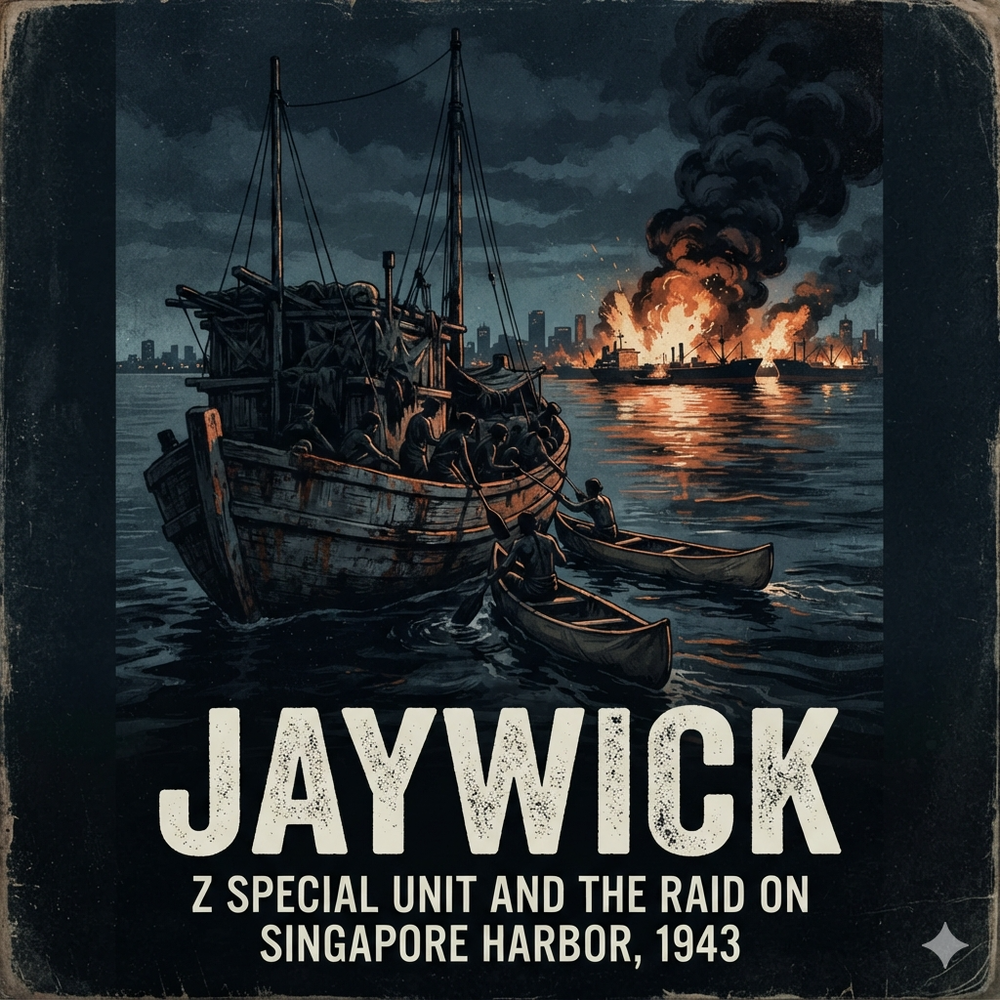

The smoke of the oil tanks had taken three weeks to wash out of Ivan Lyon’s lungs, but the smell had never left him. Even here, three thousand miles south in the damp, bluestone chill of Melbourne, the tang of high-octane fuel and burning rubber seemed to cling to the wool of his uniform.
Lieutenant-Colonel G.E. Mott did not look at the map immediately. He looked at Lyon.
The Gordon Highlander sat upright on the leather-backed chair, his tunic buttons polished to a razor shine, his posture rigid. Lyon was thirty-six, but his frame had been pared down by malaria, dysentery, and six weeks of dodging Japanese patrols across Sumatra. His face had the taut, waxy sheen of skin stretched too thin over bone, dominated by pale eyes that rarely blinked.
On the mahogany desk between them lay a typed dossier, five pages long, bound with a brass split-pin. Its title was typed in purple carbon: Operation Jaywick: Proposal for Offensive Action Against Enemy Shipping in the Singapore Area.
Mott tapped the brass pin with the tip of an unlit pipe.
"I have read your paper, Ivan."
"Then you understand the geography, sir," Lyon said. His voice was clipped, quiet, completely devoid of inflection.
"I understand geography perfectly well. It is your arithmetic that concerns me." Mott leaned back, the springs of his chair groaning in the quiet office of the Inter-Allied Services Department. "From the north-west coast of Australia to the Singapore Roads is something like two thousand nautical miles. Each way. Through the Lombok Strait, across the Java Sea, through the Banka Strait, and directly into the Rhio Archipelago. All of it entirely under Japanese naval and air control."
"Precisely."
"And your vessel for this operation?"
"A native craft. A local diesel ketch or prahu."
Mott let out a dry, rattling breath that was half a laugh. "You want to sail a rotting Asian fishing boat through the middle of the Imperial Japanese Navy."
"The Imperial Japanese Navy does not look at fishing boats, Colonel." Lyon leaned forward by half an inch. The movement was imperceptible, but the air in the room contracted. "When Singapore fell in February, I did not leave on a cruiser. I left on an auxiliary patrol craft. When she was bombed, I took a native prahu. We moved through the Rhio islands by night. We crossed the Durian Strait. We lived on sago and muddy water, and we passed within two hundred yards of Japanese motor launches."
"That was during the retreat, Lyon. Chaos works both ways."
"It was not chaos," Lyon said, his voice dropping lower, harder. "It was routine. The Japanese occupy the ports, they fortify the headlands, and they watch the deep-water channels for cruisers and submarines. But the coastal traffic—the thousands of wooden tubs carrying copra, dried fish, and pig iron between the islands—they ignore. Because their own garrison depends on them to eat."
Mott picked up the dossier, turning to the third page. "You intend to drop three two-man folding canoes off the islands south of the harbour. Paddle into Keppel Harbour under cover of darkness. Attach limpet mines to merchant shipping. Paddle thirty miles back through the islands. Rendezvous with this fishing boat. And sail back to Australia."
"Yes, sir."
"And if the mines detonate while you are still within the harbour limits?"
"The fuses will be delayed by chemical pencils," Lyon said smoothly. "Lead shear-pins and copper sleeves. A twelve-hour delay. We place them between midnight and three in the morning. We are five miles south into the Rhio channels before the first charge cuts the hull plates."
Mott rubbed his temples. Outside, the muffled clatter of a Melbourne tram cut through the rain.
"Every intelligence assessment we have says the Japanese consider Singapore impenetrable from the sea," Mott said. "They have searchlights every three hundred yards along the Keppel docks. They have hydrophone stations at the eastern entrance. They have an entire naval base at Sembawang."
"They consider it impenetrable from an Allied naval attack," Lyon corrected. "They expect destroyers. They expect torpedoes. They do not expect two men in a canvas canoe made of wood-ash and rubber, slipping beneath their bilge keels while their sentries smoke on the cargo deck."
Mott set the paper down. He studied the officer opposite him. He knew the files. He knew that when Singapore crumbled into surrender on 15 February, Lyon had not merely escaped; he had run an ad-hoc evacuation network through Padang, ferrying hundreds of civilian refugees and stragglers into the Indian Ocean before the door shut.
He also knew what Lyon did not put in the dossier.
"Your wife, Ivan," Mott said gently. "And the boy."
For the first time, Lyon’s fingers tightened on the edge of his chair, the knuckles turning dead white.
Gabrielle and baby Clive had been placed aboard a refugee ship in the final, panicked hours before the surrender. The ship had vanished into the South China Sea. Intelligence reports were fragmentary, contradictory, and ugly. Some said the ship had been sunk by dive-bombers off Bangka Island. Others whispered that the survivors had been rounded up and put into civilian internment camps in Malaya.
Lyon did not know if his wife and infant son were alive, starving in a wire pen behind Japanese lines, or lying at the bottom of the sea.
"They are prisoners of the Japanese, Colonel," Lyon said. His tone was as cold and flat as a slate gravestone. "Or they are dead. Neither condition alters the strategic value of Keppel Harbour."
"It alters your objectivity."
"My objectivity is the only thing keeping this plan sound," Lyon replied instantly. "Every Allied soldier between Darwin and Calcutta is sitting behind a perimeter waiting to be reinforced. We surrendered eighty thousand men in Malaya without making them pay for a single ton of steel. If we do not strike them in their own rear, they will consolidate their shipping lanes from the East Indies until they are unassailable. We must burn their ships at their own berths."
Mott was silent for a long time. He reached for a box of matches, struck one, and held the flame over the charred bowl of his pipe. Blue smoke curled toward the high ceiling.
"Headquarters will not give you a navy crew, Ivan. The Royal Australian Navy will not risk regular personnel on a venture with a ninety percent probability of summary execution."
"I don't want regular naval personnel," Lyon said. "I want volunteers. Men who know small boats. Soldiers who can paddle for twelve hours without weeping. Men who are willing to take an ampoule of potassium cyanide before they allow themselves to be interrogated."
Mott drew on the pipe, the tobacco glowing dull red.
"And the vessel?"
"A wooden hull. Diesel. Sixty to seventy feet. Something that looks native to the South China Sea."
Mott opened a lower drawer in the desk. He pulled out a carbon copy of an inventory dispatch from the naval authorities in Queensland, flicked through it, and pushed it across the blotting paper.
"Two months ago, a customs officer in Cairns impounded a Japanese tuna-fishing vessel. Confiscated under the National Security Act. She belonged to a local syndicate of Japanese fishermen operating out of Thursday Island before the war. A master mariner named Bill Reynolds sailed her out of Singapore during the evacuation with seventy-five refugees aboard."
Lyon picked up the dispatch. His eyes scanned the dimensions, the draft, the timber type.
"Her name?" Lyon asked.
"The Kofuku Maru," Mott said. "She's sixty-eight feet long. Carvel-built of camphor wood. Rotten bilges, a broken-down Japanese diesel engine, and she smells of old fish. She's tied up to a wharf in Queensland right now, gathering slime."
Lyon folded the paper crisply and tucked it into the breast pocket of his tunic.
"She’ll do," Lyon said.
"She’s a floating death trap, Ivan."
Lyon stood, bringing his heels together with a quiet, sharp click. He adjusted his cap, the Gordon Highlanders crest catching the pale Melbourne daylight.
"Then she is precisely what we require, sir."
The smell hit Ivan Lyon fifty yards before he reached the slipway.
It was not the honest salt-and-tar smell of an Australian port. It was a thick, rancid stench that sat heavily in the damp, ninety-degree heat of the Cairns tidal flats: old shark liver oil, rotting tuna guts dried into timber seams, diesel sludge, and stagnant bilge water.
A man in a grease-stained singlet and faded khaki shorts sat on an upturned kerosene tin beneath the shelter of a corrugated iron shed, paring a plug of black pipe tobacco with a pocketknife. He had skin like salt-cured hide and squinted through the midday glare at Lyon’s immaculate jungle greens.
"You're the Major," the man said. It was not a question.
"You are William Reynolds," Lyon replied, stopping at the edge of the slip.
"Bill will do." Reynolds gestured with the flat of his knife toward the mud berth below. "There she is. The pride of the Thursday Island fleet. Kofuku Maru."
Lyon stepped to the timber stringer and looked down.
She rested in the mangrove mud at half-tide, listing three degrees to port. She was sixty-eight feet of dark, weathered timber, with a high, blunt snout of a bow, an open well deck, and an awkward, boxy wheelhouse perched aft. Her black paint was blistered down to gray wood, streaked with rust weeping from every iron bolt. To any naval officer schooled in the symmetry of destroyers, she was an eyesore—ugly, clumsy, and primitive.
To Lyon, she was magnificent.
"She’s Japanese built," Lyon said.
"Wakayama," Reynolds said, shaving another flake of tobacco into his palm. "Built in thirty-four for a mob of Japanese pearl and tuna poachers working the Torres Strait. Requisitioned when the war broke. I got my hands on her in Singapore when the world was ending."
Lyon looked down at the low bulwarks. "How many did you carry?"
"Seventy-six," Reynolds said, his voice flat. "Men, women, three babies, and an old planter who died three days out from Muntok. Crammed shoulder-to-shoulder on that open hatch. No shade. No heads, just a plank over the stern. The Japanese aircraft came over twice between Bangka and Batavia. Flew right over our masthead."
"Did they strafe?"
"Never even turned a wing." Reynolds spat into the mud. "They took one look at her bow, saw the registration carved into the transom, and figured she was one of theirs heading south. She’s too ugly to shoot at."
Lyon climbed down the slippery timber rungs of the wharf ladder, his leather boots sinking two inches into the gray silt of the slipway. He ignored the mud clinging to his trousers and ran a hand along the starboard bow.
He drew his pocketknife, pressed the tip of the blade hard against the garboard strake near the keel, and leaned his weight into it.
The timber did not yield.
"Camphor wood," Reynolds called down from the wharf. "Heavy as lead, bitter enough to kill teredo worms, and built with knees twice as thick as an English yacht. You can bounce her off a coral head and the reef’ll come off second best. But if you’re looking to go anywhere fast, forget it. She does seven knots downhill with a gale behind her."
Lyon walked the length of the hull, his fingers trailing over the rough planking. He climbed over the low timber gunwale onto the well deck.
The deck was littered with coiled hemp lines stiff with dried brine, empty lubricating tins, and the lingering, sweet-sour stench of seventy-six terrified refugees who had lived, bled, and vomited on these boards for two weeks.
He ducked his head and dropped down the narrow hatchway into the engine well.
The heat inside the engine compartment was suffocating. A four-cylinder diesel engine dominated the narrow space, its iron casings black with burnt lubricating oil.
Reynolds’s heavy boots thumped down the ladder behind him. The civilian wiped sweat from his eyes with the back of a hairy forearm.
"German design," Reynolds said, pointing at the cast-iron cylinder heads. "Deutz diesel. Japanese built under licence. Rated for one hundred horsepower, but she’s temperamental as a mule. The water jackets are scaled solid with salt. If you push her past eight hundred revs, the exhaust pipe gets cherry red and starts cooking the timber deckhead above your skull."
"Can she run for thirty days continuously?" Lyon asked.
Reynolds stared at him in the dim, oily light. For a moment, the only sound was the drip of condensation falling into the oily bilges.
"Thirty days?" Reynolds let out a short, harsh bark of a laugh. "Thirty days to where, Major? The moon?"
"Singapore."
The laughter died out of Reynolds’s face. He looked at Lyon’s eyes—the utter, dead seriousness in them.
"You're mad," Reynolds whispered. "You're stark raving mad. The Lombok Strait is crawled over by sub-chasers. The Java Sea is an imperial lake. Every harbor master from Surabaya to Belawan knows every vessel by sight."
"They know their own vessels," Lyon said. He tapped the iron casing of the Deutz. "They built this. The hull is Japanese timber. The lines are Japanese lines. If we pass within three miles of an enemy destroyer, what does the look-out see through his glasses? An Allied warship? A motor torpedo boat?"
"He sees a stinking native tub," Reynolds conceded slowly.
"He sees a civilian scow carrying supplies for the garrison," Lyon said. "Which means he does not waste a torpedo on her."
Reynolds shook his head, looking around the grimy, oil-blackened ribs of the hull. "She was built to haul tuna, Major. Not to fight a war. If you take a single three-inch shell into these bilges, the camphor wood won't splinter—it'll shatter like glass. And you've got thirty tons of dry rot in the topsides."
"We will repair the topsides," Lyon said. He turned and climbed back up into the blinding sunlight of the well deck.
He stood at the tiny wooden steering box, looking forward over the bluff bow.
In his mind, the tropical scrub of Cairns vanished. He saw the black water of the Keppel Strait. He saw the high, angular shadows of thirty-thousand-ton merchant freighters riding at anchor off Pulau Bukom, their bellies full of crude oil and aviation spirit bound for Japanese airfields in New Guinea.
Reynolds stepped up beside him, leaning against the timber jamb of the wheelhouse.
"What are you going to call her?" Reynolds asked quietly. "You can't leave Kofuku Maru painted across her stern. Not with an Australian crew."
Lyon looked at the low, vicious profile of the hull.
"The krait," Lyon said softly.
Reynolds frowned. "What's that?"
"A small snake," Lyon said, his eyes fixed on the horizon. "Native to the Malay Peninsula. Very quiet. Inconspicuous. Black bands. A man can step on one in the dark and never know it’s there."
Lyon turned back to Reynolds, his jaw set like iron.
"Until he dies."
The sandstone cliffs of Refuge Bay rose sheer out of the dark green water, cutting off the inlet from the outside world. To a pleasure boat drifting past the mouth of Cowan Creek, there was nothing to see but mangrove fringes, grey-green gum trees clinging to rock ledges, and the occasional sea eagle circling the thermal currents.
Deep in the shadow of the western cliff, half-concealed beneath camouflage nets draped over timber poles, sat three canvas pyramidal tents and a stacked row of ammunition boxes.
Lieutenant Robert Page wiped a mixture of sweat and sandstone dust from his eyes. He sat on an empty fuel drum, stripping the bolt of a .303 Bren light machine gun. Page was twenty-two, broad-shouldered, with the calm, methodical hands of a man who had spent three years dissecting cadavers at Sydney University before exchanging his medical textbooks for an AIF commission.
A sharp, clipped voice echoed off the rock face behind him.
"If that weapon is being stripped for inspection, Lieutenant, your pins should be laid out on clean canvas, not on salt-encrusted granite."
Page did not flinch. He carefully laid the extractor spring onto his thigh and looked up.
Lieutenant Donald Davidson, Royal Navy Volunteer Reserve, stepped out of the scrub. Davidson was immaculate despite the humid, ninety-degree heat. His khaki drill shirt was tucked neatly into his shorts, his brass buckle polished, his gait possessing that distinct, rolling balance of a man bred to the sea. He carried a swagger stick tucked beneath his left armpit.
"Granite doesn't jam a gas-port, Donald," Page said mildly, his Australian drawl a deliberate contrast to Davidson’s upper-class English timbre. "Salt in the air does. But the boys are bathing these breeches in kerosene twice a day. They know what happens if one stutters."
Davidson stopped beside the fuel drum, looking past Page toward the water.
A hundred yards offshore, four men were hauling themselves up the sheer face of a sandstone boulder in bare feet, their chests raw and bleeding from the abrasive rock. They were Australian naval ratings, selected from hundreds of volunteers who had answered a vague call for "hazardous duty with no guarantee of return."
"They don't salute, Bob," Davidson said, tapping his swagger stick against his thigh. "I walked past Cain and Young twenty minutes ago by the freshwater pool. Cain nodded at me and said, ‘G’day, Don.’"
"Did you want him to drop his trousers and curtsey?"
"I expect an ordinary seaman to acknowledge the King’s commission."
"They're Australians, Donald," Page said, sliding the bolt group back into the gun body with a smooth, metallic snick. "If you want men who salute on the way to the gallows, send for the Guards. If you want men who can paddle twenty miles through a rip tide, carry sixty pounds of limpet mines up a vertical mudbank, and slice a sentry’s throat without dropping their compass, you’ll have to put up with ‘G’day.’"
"Gentlemen."
Both men stiffened. Neither had heard Ivan Lyon approach.
The Major had come out of the thick tea-tree scrub with the uncanny, soundless stride that unnerved every man in the camp. Lyon wore no insignia on his faded shirt. He held a clipboard beneath his arm, his pale eyes tracking the ratings on the rock face.
"Cain is slowing down on the traverse," Lyon said. His voice was quiet, almost conversational, but it carried the weight of an absolute verdict. "His left foot slipped twice."
"He took two inches of oyster shell through his arch yesterday, Ivan," Page said, standing up. "I stitched it last night. He shouldn't even be walking."
"If he slips in Keppel Harbour, the sound of his canvas shoe against a freighter’s hull will bring a machine-gun crew to the rail," Lyon said, not looking at Page. "The oyster shell does not care about his arch. Neither do the Japanese."
Davidson shifted his stance. "We have twelve men here now, Major. Four British, eight Australians. The ratings are physically capable, but their boat-handling in deep swell is erratic. They are used to corvettes and destroyers, not fourteen-foot skiffs."
"Then they will learn on the folboats," Lyon said. "The crated canoes arrive from Melbourne on Thursday. Double-ended paddles. Wood frames, rubberized canvas hides. If a man rips the skin, he patches it in the dark with vulcanizing cement and his own spit."
Lyon stepped to the edge of the rock ledge, looking down at the dark, still water of Refuge Bay.
"They asked questions this morning," Page said, watching Lyon’s back.
"Who did?"
"Young and Berryman. They wanted to know why we’re learning Malay phrases. Why we’re drilling on magnetic attachment instead of ordinary demolition blocks."
Lyon turned slowly. His face was entirely devoid of warmth.
"What did you tell them, Bob?"
"I told them they were being paid three extra shillings a day to keep their mouths shut," Page replied evenly. "And that if they wanted to live to spend it, they’d better memorize the phrase for ‘Where is the freshwater well?’ before Friday."
A thin, cold ghost of a smile touched the corners of Lyon’s mouth, then vanished.
"Good. They are not to know the objective until we clear the Australian coast. If a man breaks an ankle, or comes down with appendicitis, he will be returned to his unit under armed escort and held in solitary confinement until the operation is completed. There can be no leaks. None."
Davidson looked out across the creek. "And the vessel, Ivan? The Kofuku Maru?"
"She is in Sydney," Lyon said. "Tied up at Berry’s Bay under armed guard. The dockyard hands think she’s being converted into a naval tender for the boom defense."
"Have you found a skipper?" Davidson asked. "You cannot navigate her through the straits yourself, Ivan. Not while running the operational planning. You need a deep-water navigator who understands the Timor and Java seas."
"I have looked at six naval officers," Lyon said, his voice hardening with distaste. "All of them wanted a wireless mast, two Oerlikon cannon on the foredeck, and an escort to the edge of the Sunda shelf. They think in terms of convoys and fleet orders."
"And?" Page asked.
"There is an older man," Lyon said, looking back into the dense bush. "A civilian mariner who joined the Naval Reserve when the war broke. Spent twenty years hauling timber and copra through the islands. He knows every shoal between Darwin and Batavia without looking at a chart."
"What's his name?" Davidson asked.
"Ted Carse," Lyon said. "He is forty-two years old. Stubborn as an ox, hates regular officers, and drinks too much gin."
Page laughed softly. "Sounds like the only sane man for the job."
"We shall see," Lyon said, his eyes darkening. "He arrives tomorrow morning by launch. If he cannot stomach the thought of being hung from a yardarm by the Kempeitai, I will send him back to Melbourne on the afternoon train."
The diesel work-boat rounded the rocky northern point of Cowan Creek with the tide at half-ebb, her wash sending a rhythmic lap of green water against the sandstone ledges.
Standing on the narrow foredeck, his canvas shoes braced against the Samson post, was a man who looked like an intrusion from an older, slower Pacific. He was forty-one, heavy through the shoulders, his thinning hair flattened by salt air, his skin cured to the shade of boiled harness leather by twenty years in the island trades. He wore an unironed naval working shirt without medal ribbons, oil-stained shorts, and an unlit briar pipe clamped firmly between his back teeth.
The launch eased alongside the timber staging jetty. Ted Carse did not wait for a deckhand to make fast; he timed the roll, stepped across the two-foot gap with the unhurried balance of a merchant mariner, and set down a single, weathered canvas kitbag on the planks.
Ivan Lyon stood at the base of the jetty, his hands behind his back, his posture rigid. Donald Davidson stood half a pace behind him, clipboard tucked under his arm.
"Lieutenant Carse," Lyon said. It was not a greeting; it was an identification.
Carse took the pipe from his mouth, held it by the bowl, and looked Lyon up and down with pale, heavy-lidded grey eyes. He gave a brief, perfunctory nod.
"Major," Carse said. His voice was deep, dry, and gravelly from years of coarse tobacco and coal smoke. His gaze shifted briefly to Davidson, then returned to Lyon. "I looked over the ketch at Berry’s Bay yesterday afternoon. The confiscation from Thursday Island."
"The Krait," Lyon said.
"That's the name on the papers," Carse replied, his tone entirely flat. "She was built to haul tuna in Wakayama. Sixty-eight feet on the deck, fifteen-foot beam, draws five feet aft. Her frames are camphor wood, which means she's solid enough below the waterline, but her wheelhouse is perched too high. In any kind of quartering sea, she’ll corkscrew until she shakes your fillings loose."
"Can she make the passage north?" Lyon asked.
Carse reached into his pocket, pulled out a brass tamper, and methodically pressed the charred dottle in his pipe.
"Any hull will make a passage if you treat her right and the weather doesn't turn foul," Carse said. "What concerns me isn't the timber. It's the iron."
"The Deutz?"
"The Deutz," Carse said. "Four cylinders. Japanese-built under license before the war. The salt has had eighteen months to sit in her block while she was tied up in Cairns. The freshwater cooling loop has been stripped out, which means she’s running raw sea brine through cast-iron jackets. Run her hard for six days and she’ll cake solid with scale."
"We will carry sufficient freshwater to flush the jackets at anchor," Lyon said.
Carse looked at him with quiet, clinical skepticism. "You won't have freshwater to spare, Major. Not with fourteen men living on an open deck in the tropics. You'll be rationing every pint to keep the crew off the heat sickness."
Davidson stepped forward, his tone formal. "The operational parameters have been settled with Allied Services Department, Lieutenant. We require an experienced navigator who knows the Timor and Arafura shelves and the inward straits."
Carse looked at the young English naval officer. There was neither anger nor deference in his expression—merely the tired patience of a man who had worked cargo schooners through the Coral Sea while Davidson was still sitting Latin exams at Dartmouth.
"I know the straits, Lieutenant," Carse said calmly. "I've brought timber out of Banjarmasin and copra through the Lombok gap when there wasn't a buoy lit between Darwin and Surabaya. That's not the problem."
He turned back to Lyon.
"The problem is the division of command once the lines are cast off."
The bay fell quiet, the gentle slap of water against the jetty piles filling the space between them. Fifty yards away, on the sandstone platform beneath the camouflage nets, Page and the young ratings were stacking Bren gun magazines, their movements rhythmic and subdued.
"State your terms, Carse," Lyon said softly.
"Simple seamanship, Major," Carse replied, his voice measured and firm. "You command the military detachment. You have the canoes, the limpet mines, and the target lists. When you drop those canvas boats into the water, you are in sole command of the raid. But while that wooden deck is under our feet, the vessel is under naval discipline. I set the courses, I set the engine revolutions, and I decide when the weather permits a strait transit."
Davidson frowned. "The operational timetable is fixed by the lunar cycle in the Singapore Roads, Carse. The canoe drop cannot be delayed by navigational hesitation."
"It won't be delayed by hesitation," Carse said, not raising his voice an inch. "It will be governed by the tide. The Lombok Strait is not Sydney Harbour. When the ebb sets south out of the Flores Sea, the rip runs up to seven knots through a twenty-mile channel with four thousand feet of water under the keel. You cannot anchor. You cannot heave to. If you enter at the wrong quarter, the current will carry a six-knot diesel backward faster than she can push ahead."
Carse held Lyon’s gaze.
"You push that little boat into the gut at the wrong hour to keep an army timetable, and she’ll broach to and swamp, or spin into the cliffs on the Bali side. If I take the wheel, my decision on the water is final. If that isn't acceptable, you had better request a regular lieutenant from Garden Island who will follow your calendar right to the bottom of the trench."
Lyon did not answer immediately. The wind stirred the tea-tree leaves along the cliff, rustling like dry parchment.
Lyon was an ascetic, obsessed with his purpose, but he was not a fool. He recognized the cold, unyielding bedrock of professional knowledge when he met it.
"On all matters of seamanship, navigation, and the safety of the hull," Lyon said slowly, "your authority is absolute. The operational objectives, the landing points, and the engagement rules remain mine."
Carse gave a single, firm nod. "Agreed."
"There is one other matter," Lyon added.
He reached into his pocket and drew out a small rubber-sheathed cylinder, turning it once between his thumb and forefinger.
Carse looked at the black capsule. He did not flinch, but his eyes narrowed slightly.
"Potassium cyanide," Carse said. It was a statement.
"L-tablets," Lyon said. "Every officer and rating will wear one on a lanyard. If the ship is intercepted and overwhelmed, there will be no surrender. The scuttling charges are fired, and the company takes the capsules. No one will be interrogated by the Kempeitai."
Carse stood silent for a long moment, looking down at his canvas shoes, then out across the dark, still reaches of Cowan Creek.
"I’ve spent forty-one years keeping myself alive on salt water, Major," Carse said quietly, his gravelly voice dropping an octave. "I don't fancy dying in an open boat, and I certainly don't fancy being taken by the Japanese. If the worst comes, I won't need a lecture on how to clear the ledger."
He reached out, took the rubber cylinder from Lyon’s open palm, and slipped it into the pocket of his shorts without looking at it again.
"Where are the engine spares?" Carse asked, picking up his kitbag with one hand.
"In the store tent by the freshwater pool," Davidson answered.
"Then I'll start with the injector pumps," Carse said, turning toward the path through the scrub with his rolling, heavy-shouldered mariner's gait. "Because if those Japanese gaskets fail in the Arafura Sea, we won't need the cyanide to finish the job."
The sand on the western shore of Fraser Island was as fine as ground glass, and it got into everything: the breechblocks of the Brens, the threads of the brass wingnuts, and the raw blisters on Walter Falls’s palms.
"Time," Donald Davidson’s voice cut through the dark. "Eighteen minutes, forty seconds. Unacceptable."
Able Seaman Walter Falls knelt in the freezing shallows of the Great Sandy Strait, salt water soaking through his canvas trousers. In the pitch blackness—no torches, no matches, not even the shielded glow of a radium compass—his bleeding fingers searched the inside of the canoe's timber frame.
His hand found the cross-frame bulkhead. A brass butterfly nut had cross-threaded in the grit.
"The slot's fouled with sand, sir," Falls muttered, wiping salt sting from his eyes with the back of a sodden forearm. He was a quiet, tough twenty-four-year-old Australian sailor from New South Wales, but his voice was tight with frustration. "Can't force the ash rib home without stripping the thread."
"Then you clean the thread with your teeth, Able Seaman," Davidson said, standing over him on the wet sand, his dark figure barely distinguishable from the wall of coastal tea-tree behind them. "If you are fumbling with wingnuts on an exposed mudbank off Pulau Panjang with a Japanese patrol launch quartering the strait, eighteen minutes is the difference between sliding into the water and being illuminated by a thirty-inch carbon-arc searchlight."
Beside Falls, another shadow grunted in the dark. Able Seaman Arthur "Joe" Jones was wrestling with the rubberized canvas outer skin of the second craft.
"She’s shrunk half an inch in the cold, Mr Davidson," Jones said, his Sydney drawl thick with effort as he braced both boots against the transom and hauled on the tensioning lanyard. "Like trying to pull an eel into a sausage skin."
"Haul harder, Jones," Davidson said. "The Mark Two folboat is designed to be assembled by two men in twelve minutes. In the dark. In silence."
"Begging your pardon, sir," Jones muttered under his breath so only Falls could hear, "the bastard who designed it was sitting in an office in Whitehall with a delightful fire in the grate."
"Heard that, Jones," Davidson snapped, though there was no malice in it, only the unrelenting, brittle perfectionism of the Royal Navy. "Take the skin off and start again. Both crews."
Falls let out a ragged breath, reached into the wet canvas belly of the craft, and knocked the locking wedge free with the heel of his hand. The ash-wood frame collapsed with a hollow, wooden clack.
A soft pair of footsteps approached across the damp sand. Robert Page stepped into the circle of shadows. He carried two tin mugs of hot, over-sweetened tea that smelled faintly of condensed milk and canvas.
"Give 'em five minutes, Donald," Page said quietly, extending a mug toward Davidson. "Their hands are numb. You lose tactile sensation below fifty degrees. If the nerve endings don't fire, they can't feel the brass pins. It's physiology, not carelessness."
Davidson hesitated, then took the tin mug. The steam rose between them, catching the faint starlight.
"We don't have the luxury of physiology, Bob," Davidson said, though he took a long sip of the hot tea. "Ivan wants them doing twelve-mile night paddles by the end of the week. Full operational load. Two limpets forward, two aft, three days' emergency rations, water tins, and weapons."
Page knelt down beside Walter Falls on the wet sand. He reached out and felt the young rating’s hands. They were ice-cold, the skin around the cuticles shredded by the coarse sand and sharp brass fittings.
"Hold your wrists between your thighs for two minutes, Wally," Page said gently. "Get the blood back into the capillaries. Then try the locking lever again."
"Thanks, Mr Page," Falls whispered. He looked down at the pile of sectional ash frames and heavy rubber canvas lying in the tide like the skeleton of a prehistoric fish. "It’s wretchedly thin, sir. The skin. If you hit a coral head or a piece of jagged driftwood at five knots, she’ll split from stem to stern."
"She won't split if you treat her right," Page said, running a finger along the heavy Egyptian cotton duck, coated on the outside with layers of vulcanized black rubber. "She’s seventeen feet long, thirty-two inches wide, and when she’s loaded, she draws barely six inches of water. You can paddle her right over a reef where a motor launch would rip her bottom out."
"And if she does rip?" Jones asked, sitting back on his haunches, blowing on his scraped knuckles.
"Then you drown," a voice said from the high water mark.
The four men turned.
Ivan Lyon stood at the edge of the scrub, silhouetted against the dark line of the dunes. He wore only a sleeveless wool sweater and shorts, oblivious to the wind cutting off Hervey Bay. He carried a double-bladed wooden paddle in his left hand.
He walked down to the water’s edge, his bare feet making no sound on the sand. He looked at the two half-assembled folboats with a detached, clinical eye.
"A Japanese destroyer has twenty thousand horsepower, eighty-millimeter deck armor, and six four-point-seven-inch guns," Lyon said, his voice carrying clearly over the slap of the chop against the beach. "It has hydrophones that can hear a spinning screw at two miles. It has lookouts trained to spot a periscope wake in a Force Four gale."
Lyon dropped the heavy paddle onto the sand beside Falls’s knee.
"This canvas canoe is the only weapon in the Allied inventory that makes that destroyer completely blind. It makes no acoustic signature. It reflects no radar pulse. It has a profile three inches above the water. You are not soldiers in a boat, gentlemen. You are the mine itself."
Lyon looked at Falls, then at Jones, then at Davidson.
"The water in the Singapore Strait is eighty-four degrees. It is thick with phosphorescence. If you paddle with a sloppy blade, you will leave a trail of cold green fire behind your stern that can be seen from five hundred feet in the air. You paddle flat. You do not lift the blades clear of the surface. You slide the wood through the water like a knife through lard."
Lyon turned back toward the dunes, stopping just at the edge of the tea-tree shadow.
"Assemble the craft," Lyon said without looking back. "Then you paddle to Woody Island and back before sunrise. If you capsize in the channel, do not shout for the safety boat."
"Why not, Major?" Jones called out, half-grinning in the dark.
Lyon didn't turn around.
"Because the Hervey Bay tiger sharks can swim at twenty knots," Lyon's voice drifted back from the scrub. "And the safety boat only does six."
The rusted ribs of the iron target barge jutted from the shallows like the teeth of an open trap. The tide was ebbing fast, sucking brown foam around barnacled plates that had been scuttled in Platypus Bay five years before the war.
Lieutenant Donald Davidson knelt in the wet sand twenty yards up the spit, a brass micrometer in his left hand and a glass specimen dish resting between his shins.
"Hold the collar, Bob," Davidson said without raising his head. "Steady. If you tilt the casing, the acid bead migrates toward the wire before the ampoule yields."
Lieutenant Robert Page held the thin brass sleeve between his thumb and forefinger. His skin was gray with cold grease and salt crust. Inside the brass tube was a small, sealed glass phial of concentrated acid, held back from a spring-loaded striker by a stretched copper-alloy retaining wire no thicker than horsehair.
"Switch Number Ten," Page muttered, his eyes locked on the delicate assembly. "The War Office’s greatest contribution to nervous exhaustion."
"It is a precision instrument," Davidson replied, setting the micrometer against the collar. "Provided the ambient water temperature does not exceed sixty-five degrees Fahrenheit."
"And when it does?"
"The chemical reaction accelerates exponentially," Davidson said evenly. "At eighty-four degrees—which is precisely what the Admiralty charts give for the Singapore Roads in September—a nominally twelve-hour delay pin dissolves in six. Or five. If the brass casing has suffered saltwater corrosion, the internal spring tension can shear the weakened wire in under two hours."
Beside them, Able Seaman Andrew Huston—a lanky, twenty-four-year-old Queenslander with broad shoulders and quiet hands—sat cross-legged over an open wooden crate stenciled in yellow paint: MINES, CLAM, HIGH EXPLOSIVE.
Resting on a square of oily sacking was the operational weapon: the Mark III Limpet.
It was a domed, hemispherical iron shell, roughly ten inches across and five inches thick, packed with four and a half pounds of high-density cyclonite and TNT. Arranged around its perimeter were six heavy, horseshoe-shaped Alnico permanent magnets, protected from accidental attachment by thick brass keeper-strips.
"Three on each shaft," Huston said, running a thumb over the cold, gray-painted belly of the mine. "One limpet on the port shaft bracket, one on the starboard, one dead center against the thrust bearing under the engine room. If she’s riding light, that’s four and a half pounds of explosive punching a three-foot hole straight through five-eighths-inch boiler plate."
"And if the sentry hears the magnets strike?" Page asked, still holding the brass fuse steady while Davidson calibrated the ampoule.
"He won't hear a whisper," Huston said softly. He picked up a pair of heavy rubber wedges tied with thin hemp cords. "You don't let the bare magnets slap the plate. If you slap steel with twenty pounds of magnetic pull in a dead-calm harbor, it rings like a cathedral bell right up through the hull frames. Sentries two decks above feel it through their boot leather."
"Show me," Davidson said, glancing up from his glass dish.
Huston rose, lifting the fourteen-pound limpet by its brass carrying handle. He waded into the freezing, hip-deep surf toward the rusted flank of the barge, his canvas shoes sinking into the silt. Davidson, Page, and Walter Falls followed to the edge of the wash.
Huston approached the iron skin of the target hulk. The water slapped against the pitted rust.
He did not rush. Moving with the slow, deliberate grace of a man working underwater, he slid the two soft rubber wedges between the magnets and the barge's iron plate. The magnetic field caught the steel, pulling hard, but the impact was completely deadened by the rubber buffers.
With a slow, lateral twist of his wrists, Huston eased the first wedge clear.
Clack.
It was a dull, tiny sound, swallowed instantly by the lap of the waves against the timber pilings. Then he eased the second wedge out. The limpet settled flush against the plate with an airtight, unyielding grip.
Huston reached out with both hands, hooked his fingers into the brass carrying ring, and pulled with his entire body weight. His boot heels skidded back through the sand.
The limpet did not budge.
"You'd need a cold chisel to pry that off," Falls murmured from the surf line.
"The Japanese divers won't have a cold chisel," Davidson said, stepping through the foam to inspect the seal. "Once hydrostatic pressure at twenty feet of depth pushes against the dome, it becomes part of the ship's skin."
Davidson reached into his shirt pocket and pulled out a brass-bodied chemical time pencil along with a pair of issued, flat-nosed ordnance pliers.
"This is the drill," Davidson said, his voice dropping into operational rhythm. "You attach the mine. You confirm the magnetic seal. Only then do you draw the safety pin from the pencil. You place the jaws of the pliers squarely over the thin copper sleeve—never on the brass striker tube."
He set the plier jaws over the soft copper collar of a dummy pencil.
"One steady, controlled squeeze," Davidson instructed. "Not a jerk. You must feel the glass ampoule crush beneath the metal. The moment the glass yields, the acid is freed onto the retaining wire. Once that occurs, the clock is running. It cannot be stopped. It cannot be reset. You do not, under any circumstances, attempt to reinsert the safety pin."
"And if the wire is defective?" Falls asked, staring at the brass cap. "If it's already fractured?"
Davidson turned his cold, blue eyes directly onto the young rating.
"If the wire is defective, Able Seaman, the striker trips immediately. The firing pin strikes the percussion cap, which flashes into the CE booster pellet, which detonates four and a half pounds of cyclonite twelve inches from your chest. You will feel nothing. The canoe, your partner, and thirty feet of surrounding ocean simply cease to exist."
Falls swallowed, his throat working beneath his sunburnt jaw. "Understood, sir."
"Which is why," Davidson added, "you never use excessive force on the sleeve. If you crush the copper too hard, you distort the guide channel, the striker jams, and the mine becomes a dead weight on the hull. Precision. Smooth pressure until the glass crunches beneath the jaw. Nothing more."
"And if you drop the pliers in forty feet of water?" a dry, quiet voice broke in from the dunes.
Ivan Lyon stood on the sand crest, hands clasped behind his back, looking down into the surf. Beside him stood Ted Carse, chewing on his cold pipe, his thumbs hooked into the waistband of his faded shorts.
Lyon walked down the slope, his bare feet sinking into the white drift. He stopped at the water’s edge, not minding the wash that soaked through the hems of his trousers.
"If the tool is lost overboard," Lyon said, looking at Falls and Huston, "you use thumb pressure against the gunwale of the folboat. You brace the brass body against the ash frame and press the copper collar with the ball of your thumb until you feel the glass yield. It requires sixty pounds of pressure. You must know the exact physical sensation of the glass collapsing."
Lyon looked at Davidson. "How many operational pencils have we tested in the warm tanks?"
"Twelve, Major," Davidson replied. "At eighty-two degrees, the red pencils—rated for twenty-four hours in the UK—are firing in eleven hours, forty minutes. The yellow pencils, rated for twelve hours, are going off in five hours, fifteen minutes."
"Then we use the red," Lyon said without hesitation. "We set them between midnight and zero-two-hundred. That gives us until thirteen-hundred hours the following afternoon to put fifteen miles of mangrove islands between our paddles and the harbor."
Carse took the pipe from his mouth and spat into the froth.
"Assuming the ketch is where she’s supposed to be when you paddle out," Carse said, his voice low and dry.
Lyon did not look at him. "The rendezvous dates are fixed, Ted. If the Krait is not at the agreed island, the canoe crews will scuttle the folboats and make their own way south through the islands by native craft."
"Two thousand miles in a native prahu?" Carse grunted, looking across the bay toward the Krait swinging at her mooring. "You'd better make sure we don't break down, then. Because if that engine fails us on the withdrawal, nobody's coming back."
Lyon turned his gaze toward the black timber hull riding the swell a mile offshore.
"We begin night drops from the Krait tomorrow evening," Lyon said. "Full mines, live primers, dead detonators. Five miles out in the bay. If a crew capsizes, they recover their own ordnance before they touch the beach."
He turned back toward the dunes, his stride steady and measured.
"We leave for Townsville in ten days, gentlemen. Ensure the ratings know how that glass feels when it breaks."
The stench inside the corrugated iron washhouse was enough to turn the stomach of a slaughterman.
It was not the honest, salty filth of wet canvas or engine oil. It was a sharp, metallic vapor that caught in the back of the throat, mixed with the cloying, vinegar-sour stink of crushed green walnut husks fermented in five-gallon kerosene drums.
Able Seaman Horace "Horrie" Young stood naked on a wooden duckboard, his pale skin goose-pimpled in the cold coastal draft whistling through the iron wall-slats. In front of him stood Corporal Ronald "Taffy" Morris of the Royal Army Medical Corps, a heavy pair of surgical gloves pulled up to his forearms and a wide horsehair brush dripping dark purple muck back into a galvanized bucket.
"Stand still, Horrie," Morris murmured, his soft Welsh lilt completely at odds with the weapon he was dipping into the bucket. "If you fidget, it pools in the creases."
"It’s not pooling, Taffy, it’s eating through my wretched hide," Young hissed through gritted teeth. His fists were clenched tight at his sides.
Morris slapped the loaded brush across Young’s ribs.
Young flinched, his teeth grinding together as the cold, slimy muck coated his pale skin. Where the bristles passed, the mixture laid down a greasy, dark purple-brown sheen that smelled overpoweringly of stale vinegar and rotting vegetation.
"Blimmin' heck, Taffy," Young muttered, his muscles knotting. "It’s cold as pond ice and reeks like a dead sheep."
"Potassium permanganate and walnut juice," Robert Page said, sitting on an overturned packing case near the doorway, a clinical notebook open on his knee. He was watching the stain soak into the skin. "The vinegar acts as the acid mordant. If we don't etch the outer epidermis, the tannin washes straight off the moment you sweat or take sea spray over the bulwarks."
"It leaves you feeling like you’ve been dipped in axle grease," Young said, looking down at his ribs with distaste. His skin was already turning an unnatural, dull mahogany, streaked with yellowish undertones around the hair follicles. "If a Jap looks at me through a glass in broad daylight, he won't think I’m a Malay—he’ll think I’m rotting from the outside in."
"Hold your arms up," Morris ordered mildly, indifferent to the seaman's grumbling. "Under the pits now. If we leave white patches under your arms, you can't heave a line without giving the whole show away."
Young raised his elbows, cursing quietly under his breath as the sticky liquor settled into his pores.
"The immediate problem isn't the stain," Page added, glancing up from his notes. "It’s what happens when you combine this residue with equatorial sweat and salt water. The pores choke. The friction of coarse sarongs against unwashed skin will breed furunculosis—deep boils in the groin and armpits within a fortnight. Keep the zinc ointment close."
Outside the washhouse door, boots crunched on the gravel.
Ivan Lyon stepped through the opening, followed closely by Ted Carse. Lyon was in his usual faded drill shorts, his eyes flicking immediately to Young’s painted hide. Carse took one sniff of the air, pulled his pipe from between his teeth, and grimaced.
"Smells like a tannery in a heatwave," Carse muttered, leaning his broad shoulder against the iron doorframe. "You're going to put fourteen men down in a sixty-foot hull smelling like that? The Deutz exhaust fumes'll mix with that copper reek and poison the whole crew before we round Sandy Cape."
"Does it wash?" Lyon asked, ignoring the skipper. He stepped close to Young, his pale eyes tracking the color across the rating’s collarbones.
Morris produced a rag soaked in salt water and rubbed it violently against Young’s forearm. Young groaned, cursing under his breath. The rag came away tinged with a dirty, muddy film, but the underlying skin remained a deep, unnatural dark walnut stain.
"The top layer sloughs with salt friction, Major," Page answered from his crate. "The deeper layers hold for roughly four to six days. But there’s a medical cost."
"Explain," Lyon said.
Page closed his notebook with a sharp snap. "The copper sulphate is corrosive to mucous membranes. On the back, chest, and arms, it's tolerable. Down in the groin, between the buttocks, and under the foreskin, the combination of sweat, salt-water chafing, and copper acid will cause severe chemical dermatitis. The epidermis will blister and peel in sheets within seventy-two hours."
"They'll have to bear it," Lyon said simply.
Young let out a bitter, involuntary bark of a laugh. "Begging your pardon, Major, but you haven't had a brush full of Taffy's sheep-dip slapped across your tackle yet."
"I took the full application yesterday evening, seaman," Lyon replied, his voice dropping into that quiet, glacial tone that immediately extinguished any room for complaint.
Young fell silent.
Lyon unbuttoned the two top buttons of his shirt and pulled the collar aside. Beneath the bleached khaki, his neck and clavicle were stained the same mottled, sickly greenish-brown. The skin around his throat was raised in an angry, red rash of weeping chemical pustules, but his expression remained as entirely empty of emotion as a statue’s.
"It burns for forty minutes," Lyon said, his voice flat. "Then the nerve endings dull. After three days, you reapply."
Carse walked over to Young, squinting at the color in the dim light filtering through the corrugated iron. He reached out with two blunt, calloused fingers and poked at the seaman's collarbone.
"Too grey," Carse said, shaking his head. "I've traded with Bugis, Malays, and Madurese for twenty years, Major. Their skin isn't grey-brown. It’s warm. It has yellow and red in it. You put this concoction on the boys, and in the bright sun of the Java Sea, they’ll look like walking cadavers."
"We add yellow ochre," Morris suggested quietly, looking into his bucket. "Or turmeric."
"Turmeric washes out with the first bucket of wash-water," Page countered. "Permanganate oxidizes too quickly. The walnut is the only tannin that holds against salt brine."
"Then we adjust the ratio of walnut to copper," Lyon directed Morris. "Work through the night if necessary. The entire company will be stained from the soles of their feet to the roots of their hair before we load the gear."
Lyon turned back to Carse.
"Ted. The deck discipline."
Carse sighed, putting his unlit pipe back between his teeth. "I've told 'em. But getting an Australian seaman to stop moving like an Australian seaman is harder than teaching a pig to fly."
"They will learn," Lyon said.
"They walk too straight," Carse said, stepping out onto the duckboard and imitating the upright, swinging stride of a Commonwealth sailor. "A native deckhand doesn't walk with his chest puffed out and his arms swinging like he’s on parade at Flinders Naval Depot. He shuffles. He keeps his center of gravity low. When he rests, he doesn't lean against the rail with his hands in his pockets; he squats on his haunches. Flat on the soles of his feet, arms hanging over his knees."
Carse dropped effortlessly into a deep, flat-footed Asian squat, resting his weight perfectly on the balls and heels of his feet, his shoulders rounded, his head low.
"Like this," Carse said, looking up at Young from the floor. "You do that on the foredeck for six hours in the sun without falling over, seaman. If a Japanese floatplane circles low enough to see your eyes, you don't look up. You never look up at an aircraft. A white face looking up flashes like a mirror in the sun. You keep your skull pointed at the deck planks and you pretend to pick lice out of your sarong."
Young looked down at his stained legs, his jaw clenched against the burning ache that was now setting into his armpits like a ring of hot wire.
"And if they signal us to heave to, Mr Carse?" Young asked. "If they run alongside?"
Carse slowly rose from his squat, his face darkening. He looked past Young, straight at Ivan Lyon.
"If they run alongside," Carse said, "we don't answer their hail. We let 'em smell the bilge. And we make sure the Bren guns under the canvas have a full magazine on the breach."
Lyon turned toward the door, stopping on the threshold without looking back.
"Have Corporal Morris stain the ratings in pairs," Lyon said over his shoulder to Page. "Huston and Falls first. Then the boat crews. Tomorrow at dawn, they drill on the slipway in full stain and native sarongs."
"And the hair, Major?" Page called out.
Lyon paused, his silhouette stark against the white glare of the Queensland dunes outside.
"Every man dyes his hair black," Lyon said. "Or he shaves his skull to the bone."
The table was an unpainted packing crate set up inside the mess hut, illuminated by the yellow flare of a single kerosene pressure lamp. Outside, the winter trade wind drove fine white sand against the hessian walls with a steady, dry hiss.
On the lid of the crate lay a green baize cloth. Arranged in two neat, parallel rows of seven were fourteen small, cylindrical objects, each no larger than the top joint of a man’s little finger.
They were encased in dull black rubber, ribbed along the sides like small mechanical washers, with a thin hole punctured through a top flange to take a loop of rot-proof fishing line.
Ivan Lyon stood behind the crate, his hands resting lightly on the wood. He had shaved his head that morning. The skull was white where the razor had cut close, contrasting violently with the walnut stain that mottled his ears, throat, and hollow cheeks. In the lamp glare, he looked less like an officer of the British Empire and more like a fever-wasted zealot.
The thirteen men crowded into the hut stood in complete silence. The smell of walnut tannin, vinegar, and sweat hung over them like a grease trap.
"Step forward, Cain," Lyon said.
Leading Seaman Kevin "Cobber" Cain took two paces out of the rank. He was a stocky, hard-bitten Sydney sailor, twenty-three years old, his arms stained the color of rusted iron. His eyes dropped to the crate, then flicked to Lyon’s face.
"Take one," Lyon commanded.
Cain reached out with a calloused, dye-blackened hand. He picked up one of the rubber cylinders. It weighed almost nothing.
"Hold it up to your ear," Lyon said.
Cain hesitated, then brought the rubber piece to his left ear. He gave it a gentle shake.
A tiny, delicate rattle came from inside.
"Glass," Lyon said. "Inside the rubber sheath is a thin-walled glass phial containing eighty milligrams of potassium cyanide in concentrated solution. The rubber casing is designed to protect the phial from accidental breakage during physical labor, crawling on mudflats, or sudden impact against a canoe gunwale."
Cain turned the cylinder between his thick thumb and forefinger, feeling the slight give of the rubber against the rigid glass capsule beneath.
"How does it work, Major?" Cain asked. His voice was steady, but lower than usual.
"If you are about to be taken," Lyon said, his delivery clipped, clinical, and devoid of drama, "you insert the capsule between your molars. You bite through the rubber. You do not chew; you bite down hard once. The glass will shatter inside the sheath. You inhale deeply and swallow."
The pressure lamp hummed in the corner of the hut. Nobody moved.
"What happens then, sir?" Able Seaman Mostyn "Moss" Berryman asked from the second rank. He was only nineteen, the youngest of the RAN ratings. His stained face was pale beneath the chemical dye.
Robert Page spoke from the shadows beside the timber doorframe, his voice carrying the calm authority of a pathologist.
"The cyanide prevents cellular respiration," Page said, his hands thrust into the pockets of his shorts. "The cytochrome oxidase in your blood is paralyzed. Your tissues can no longer absorb oxygen from the hemoglobin. You will feel a sudden metallic taste—bitter almonds, followed by immediate vertigo and a burning sensation in the chest. Consciousness is lost within seven to twelve seconds. The heart ceases within two to three minutes. There is brief involuntary convulsing, but by then the cerebral cortex is dead. You will feel very little after the initial bite."
"Sounds jolly lovely," Joe Jones muttered from the back.
Lyon did not look at Jones. His eyes remained locked on Cain.
"You will loop the fishing line through the eyelet and wear it around your neck beneath your shirt at all times," Lyon continued. "When we enter operational waters, you do not take it off to wash. You do not take it off to sleep. It remains resting over your sternum until we drop anchor back in an Allied port."
Ted Carse stood by the unlit stove at the far end of the hut, leaning against a timber post, a mug of cold tea cradled in his hands. He watched the young ratings with narrowed, guarded eyes.
"Tell 'em the rule, Ivan," Carse said quietly.
Lyon’s mouth tightened. He looked across the faces of the Australian ratings—Falls, Huston, Berryman, Marsh, Young, Cain, Jones, Crilley.
"The operational necessity is absolute," Lyon said. His voice was barely above a conversational murmur, but it carried a chilling, flat finality. "No member of this party is to be taken alive. Under any circumstances."
"What if a man is knocked unconscious, Major?" Walter Falls asked quietly. "A near-miss from a depth charge. Shrapnel."
"You do not allow yourself to be cornered," Lyon replied without raising his voice. "If the vessel is compromised, we blow the scuttling charges. If you are in the folboats and cannot break contact, you draw the capsule before their launch comes alongside. If you are cornered in the mangroves, you bite."
Lyon placed his hands flat on the crate, his pale eyes steady on the men.
"We are operating in civilian disguise deep behind enemy lines. The Japanese do not recognize irregular forces. Anyone taken will not go to a prisoner-of-war camp. You will be taken to the Kempeitai in Singapore. You will be subjected to systematic, extreme interrogation, and eventually, the operational security of Special Operations Australia will be broken."
He paused, letting the silence settle over the hut.
"This operation relies on surprise, and the men who come after us rely on our silence. Suicide is not an option left to your discretion; it is a standing order. Your life ends before your interrogation begins. That is the contract."
The silence in the room was suffocating. Cain looked down at the black rubber cylinder in his palm, his knuckles gray with tension.
"Davidson," Lyon barked.
"Sir."
"Issue the remaining tablets. Every man signs the receipt log."
Donald Davidson stepped forward with a roster clipboard and an indelible pencil. One by one, the men filed past the crate.
Falls took his capsule and slipped the green cord over his shaved head, the black cylinder settling against the hollow of his throat. Huston took his without a word, tucking it into the flap of his breast pocket. Young hesitated for a second, his fingers trembling almost imperceptibly as he picked up the tiny pellet, then jammed it into his waistband.
Ted Carse walked slowly to the crate. He looked down at the two tablets remaining on the green baize.
He didn't pick up the pencil. He looked up at Lyon, his weathered, lined face hard as ironbark.
"I don't need a rubber teat to keep my mouth shut, Ivan," Carse said, his voice rough and heavy.
"Everyone takes one, Ted," Lyon said, his voice flat. "Even the skipper."
Carse picked up the black capsule, weighed it in his hand, and stared at it with open contempt.
"I've spent twenty-five years pulling boats out of trouble by keeping my wits about me," Carse said, loud enough for the whole hut to hear. "Not by biting on poison like a cornered rat. If the Japs jump us in the strait, my job is to keep that diesel turning over and find deep water. A dead navigator doesn't steer very straight."
"If the Japs jump us in the strait, Ted," Lyon replied, not yielding an inch, "there will be no deep water. There will only be the magazine."
Carse held Lyon’s gaze for five agonizing seconds. Then, with a slow, deliberate movement, he slipped the lanyard over his thick neck, tucking the rubber capsule down behind his greasy naval work shirt.
"Let's pray that four-cylinder Deutz doesn't quit on us then," Carse muttered, turning toward the door. "Because if she coughs in the middle of the Reef, we won't even need the cyanide. The sharks'll do the job for free."
Carse pushed open the hessian flap and stepped out into the dark.
Page watched him go, then turned to look at the ratings tying their lanyards around their necks.
"Right," Page said quietly, breaking the trance in the room. "Turn in. We haul the fuel drums onto the slipway at oh-five-hundred. Tomorrow we find out if that engine can run eight hours without seizing."
The silence in the engine well was the heaviest sound Ivan Lyon had ever heard.
It was not the purposeful quiet of men paddling through darkness; it was the dead, hollow stillness of a machine that had torn out its own vitals. Down in the cramped bilge of the Krait, twenty feet forward of the stern, the stink of burnt mineral oil, scorched babbit metal, and boiling brine was thick enough to gag a dog.
Leading Stoker James McDowell, the Royal Navy regular whose pale Scottish skin was now smeared black with carbon and grease, wiped a bloody knuckle with a chunk of frayed cotton waste. He was stripped to his trousers, his chest heaving in the hundred-degree damp heat of the Cleveland Bay slipway.
At his feet, illuminated by an inspection lamp hanging from an overhead beam, lay the dissected corpse of the Japanese Deutz diesel. Its number-three cylinder head was off, revealing a piston welded solid to the cylinder wall, the connecting rod twisted into a sickening, dog-legged curve.
"She’s done, Major," McDowell said. His Scottish accent was flat, stripped of all deference by thirty hours of continuous hauling on chain blocks. "The salt water got past the jacket seal two days out from Hervey Bay. The liner scored, the cooling failed, and she cold-welded herself together. You couldn't turn this crank with a steam winch."
Ivan Lyon stood on the lower rungs of the companionway ladder, his canvas deck shoes resting on the oily timber frame. His face was gray with exhaustion, the dyed walnut skin around his temples peeling away in ugly, scaly flakes.
"Can you sleeve the block?" Lyon asked. His voice was dangerously soft.
Ted Carse’s head appeared in the square hatchway above, backlit by the blazing glare of the tropical sun. He leaned in, a dead cigarette stub glued to his lower lip.
"Sleeve it with what, Ivan?" Carse barked down the hatch. "Tinned bully beef cans? The cylinder wall is cracked right through to the water jacket. Even if Jim here had a full foundry and three weeks at Garden Island, you wouldn't get eight hundred revs out of that block without blowing the deck off. She’s scrap iron."
Carse dropped down the ladder, his boots hitting the floorboards with a wet squelch. He shoved his hands into his greasy shorts and kicked the fractured flywheel with the heel of his shoe.
"I told you on Cowan Creek," Carse muttered. "I told you Mott and his desk commandos in Melbourne bought a floating pigsty. We're twelve hundred miles behind schedule. General Blamey’s staff are already sniffing around Townsville asking why a confiscated tuna boat is burning through priority rail requisitions. One more week tied to this jetty, and Allied GHQ will cancel the whole circus."
Lyon did not answer. He stared down into the iron guts of the dead engine, his fingers tightening on the timber rung until the wood creaked.
Cancellation meant failure. It meant returning to Melbourne with fourteen crates of live limpet mines, six collapsible canoes, and thirty men who had spent six months learning to die in silence, all to be reassigned to garrison duty in Port Moresby while the Japanese shipping lanes across the Java Sea carried oil unchallenged to the front lines.
"What is the alternative?" Lyon asked McDowell.
"A replacement," McDowell said, wiping grease from his eyes. "A high-speed marine diesel. Something with an enclosed freshwater cooling circuit that won't choke on tropical salt."
"There isn't a marine engine between Brisbane and Port Darwin that isn't allocated to the RAN or MacArthur's landing barges," Carse said bluntly. "You can't just walk into a Townsville hardware shop and ask for a hundred-horse diesel."
The hatch cover banged back on its iron hinges.
Robert Page leaned through, squinting against the darkness of the hole.
"Ivan," Page called down. "Signal just came through from ASD Melbourne via the naval liaison. Mott’s pulled a miracle."
Lyon looked up, his jaw rigid. "Explain, Bob."
"They found an engine," Page said, dropping a yellow carbon-slip onto the deck boards. "Not from the Navy. The Department of Supply tracked down a brand-new Gardner six-cylinder diesel. A 6LW. One hundred and two horsepower at seventeen hundred revolutions."
McDowell dropped his wrench. It clattered loudly against the engine bed.
"A six-cylinder Gardner?" The stoker’s eyes went wide. "That’s an English road transport diesel. Bus engines. Sawmill power units."
"Where is it?" Lyon demanded, snatching the yellow slip from the deck.
"A timber sawmill in north-west Tasmania," Page said, a faint, incredulous grin breaking through his exhaustion. "Requisitioned under emergency wartime powers forty-eight hours ago. It was sitting on a railway flatcar in Launceston waiting to be installed to drive a circular saw. ASD loaded it onto an RAAF transport plane at Hobart yesterday morning. Flew it to Essendon, transferred it to a Douglas C-47, and it touched down at Townsville airfield two hours ago."
Carse stared at Page, then let out a low, whistling breath through his teeth.
"Tasmania," Carse muttered, shaking his head in disbelief. "A Tasmanian sawmill engine. Flying across three thousand miles of continent to be shoved into a Japanese pirate ketch."
"Will it fit the engine bed?" Lyon asked, turning his fierce gaze onto McDowell.
The Scottish stoker fell to his knees on the filthy camphor-wood timbers, whipping a folding steel rule from his back pocket. He measured the space between the engine bearers, muttering under his breath, his eyes darting between the cracked Deutz and the structural frames of the hull.
"The Gardner is narrower," McDowell muttered, running his thumb along the oily timber stringers. "Longer by six inches, but narrower across the mountings. We'll have to lay down four-inch ironbark packing balks. Drill through the floors for new holding-down bolts. And the shaft alignment—" He stopped, looking up at Carse. "The reduction gear. If she’s a direct-drive industrial block, she’ll turn the screw too fast. We'll cavitate in every seaway."
"There’s a three-to-one marine reversing gearbox coming on the second truck," Page added. "Stripped out of a wrecked auxiliary schooner in Sydney Harbour."
"Can you mount it, Jim?" Lyon asked.
The stoker looked at the wreckage of the Deutz, then at Lyon’s pale, unblinking eyes. He knew what the question really meant: Can you mount it before Headquarters finds an excuse to pull the plug?
"Give me Cain, Young, and two shipwrights from the Townsville slip," McDowell said, his jaw setting hard. "We cut the old engine out with oxy-acetylene torches by midnight. We bore the new bed logs tomorrow. If the crane holds, we lower the Gardner into the hole by Thursday dawn."
"You have forty-eight hours, McDowell," Lyon said.
"And what about sea trials?" Carse challenged, pointing a thick thumb at the open sea beyond the breakwater. "You drop a raw, untried engine into a timber boat, you need fifty hours of running to seat the rings, check the cooling pump, and dial in the fuel injectors. You can't just point her bow at Timor and hope for the best."
Lyon stepped off the ladder, his face inches from Carse’s in the stifling, stinking gloom of the bilge.
"We do not have fifty hours, Ted," Lyon said, his voice cold and definitive. "The tides at Lombok wait for no man. If we do not make the September moon window, the currents in the strait will run against us at seven knots, and the entire calendar collapses."
Lyon turned back to the ladder, his boots finding the rungs with rhythmic, steady precision.
"We test the Gardner on the run to Darwin," Lyon said from the hatchway. "If she breaks down in the Gulf of Carpentaria, we fix her under way. If she holds, she carries us into Keppel Harbour."
Lyon climbed up onto the blinding deck, leaving the three men standing in the dark with the dead Japanese iron.
Carse looked down at the twisted connecting rod of the Deutz, spat onto the oily crankcase, and turned to McDowell.
"Well, Jim," Carse grunted, unhooking a heavy sledgehammer from the bulkhead bracket. "Get the blimmin' gas axes. Let's carve this Jap pig out of my ship."
The red dust of the North West Cape did not blow; it drifted like powdered rust, hanging in the dead, baking air of Exmouth Gulf until it coated every surface with a fine, ochre grit.
To the south, flat saltpans and spinifex stretched into shimmering infinity. To the north, anchored in the turquoise shallows of the secret base designated Potshot, the grey hulls of United States Navy submarine tenders and motor torpedo boats rode the swell. They were clean-lined, modern, bristling with 20-millimeter Oerlikons, radar antennas, and fresh grey paint.
And tied up to the rough wooden staging jetty, looking like an abandoned timber refuse barge that had drifted out of the Dutch East Indies, sat the Krait.
A United States Navy lieutenant commander wearing grease-stained dungarees and an embossed leather holster stood on the stringer of the jetty, a metal clipboard in his hand. He was chewing slowly on a piece of gum, his eyes fixed on the low, blunt snout of the wooden ketch below.
"Oh my word, son," the American officer drawled, looking down at Leading Seaman Kevin Cain, who was hauling a wooden crate up the gangplank. "What in the world do you folks call that floating chicken coop?"
Cain didn't pause. He shifted the sixty-pound crate of limpet charges onto his shoulder, his bare feet gripping the rough planks. His torso, neck, and forearms were stained an irregular, muddy walnut brown, the skin around his armpits peeling in raw, weeping patches.
"His Majesty’s Australian Ship, mate," Cain replied with deadpan Aussie insolence. "Mind your paintwork."
The American officer shook his head, flipping through a sheaf of top-secret transit manifests stamped with Allied Naval Headquarters seals.
"I've got orders here signed off by Admiral Christie's office telling me to supply your outfit with twelve thousand gallons of high-grade diesel, two hundred drums of fresh water, and thirty cases of American field rations. No questions asked." The American stepped closer to the edge, looking at the forty-four-gallon fuel drums being lashed two-deep along Krait’s low bulwarks. "You’ve got less than eighteen inches of freeboard left right now. You put thirty more drums on that deck, and a two-foot wake from a harbor tug'll swamp the son of a bitch."
Ted Carse stepped out of the tiny wheelhouse onto the cluttered well deck. He had an unlit briar clamped in his jaws, his naval reserve cap shoved back on his skull, his shirt open to the belly, revealing a chest stained dark as mahogany.
"She’ll float, Commander," Carse said, not looking up as he tightened a hemp lashing around a fuel drum. "She carried seventy tons of tuna in thirty-eight. She can carry sixty tons of diesel and petrol without crying."
"Where on earth are you heading in that scow?" the American asked, his curiosity breaking through the official silence. "Broome? Port Hedland?"
Carse looked up, his grey eyes dead and flat as slate.
"We're on a coastal patrol, son," Carse said. "Looking for stray dugongs."
On the afterdeck, Donald Davidson and Robert Page were supervising the stowage of three long, narrow crates stenciled with innocuous naval inventory marks: CANVAS TENTS, MK II.
Inside each crate lay the dismantled ash frames, ribbed floorboards, and rubberized outer skins of the Mark II folboats, packed in greaseproof paper and lashed with hemp cords. Stacked beside them were eighteen Mark III limpet mines, thirty spare chemical time pencils, four Bren guns wrapped in petroleum-soaked greasecloth, six Thompson submachine guns, and fourteen rubber-jacketed cyanide ampoules already hanging beneath the men's shirts.
"Watch the stern line, Bob," Davidson said quietly, testing the tension of the rope holding the crates beneath a patched tarpaulin. "If that tarpaulin lifts in a following sea, the whole profile is ruined. From the air, she must look completely flat. A native deck loaded with salt-fish sacks and copra."
Page wiped sweat from his eyes. His skin dye was burning in the ninety-five-degree midday heat, the copper sulphate mordant reacting violently with the sweat trickling down his spine.
"The Gardner ran clean from Darwin," Page noted, glancing down at the timber deck beneath his feet. "McDowell didn't have to touch a bearing the entire run down the coast."
"A coast with no Japanese destroyers, Bob," Davidson remarked softly. "Let us see how the Gardner behaves when we are running Lombok against six knots of tide with our exhausts muffled under water."
Footsteps clicked on the jetty gravel.
Ivan Lyon walked down the wooden approach. He was dressed in clean khaki drill, but beneath his open collar, his stained neck and shaved skull gave him the look of an escaped convict. He held a sealed canvas dispatch pouch under his arm.
He stepped directly off the jetty onto Krait’s low bulwark, barely causing the overloaded timber hull to dip in the red wash.
The American lieutenant commander straightened up, recognizing the rank insignia on Lyon's shoulder straps, though his eyes remained wide with disbelief.
"Major," the American said, touching the brim of his cap. "You're the officer in command?"
"I am," Lyon said, his voice clipped.
"Your fuel is loaded, sir. Fresh water tanks are topped off. But I gotta tell you, off the record—my base commander thinks this tub shouldn't even be allowed out of the harbor. The coastal weather station at Onslow is tracking a low-pressure trough south of Java. You run into a heavy sea with that deck cargo, and those fuel drums will break loose and roll straight through your wheelhouse."
Lyon handed the dispatch pouch to Davidson without glancing at the American.
"Thank you for your assistance, Commander," Lyon said, his tone entirely devoid of inflection. "Your personnel will clear the jetty by eighteen-hundred hours."
"Major, is it true you folks are heading into the islands?" the American pressed, lowering his voice. "The submariners coming back from patrol off Lombok say the Japanese have three coastal batteries mounted on the cliffs at Ampenan. Searchlights on every spit. They’re running sub-chasers back and forth across the narrow gap every forty minutes."
Lyon stopped and turned to look at the American officer. Lyon’s pale eyes were calm, utterly devoid of fear, doubt, or warmth.
"The Japanese," Lyon said quietly, "are looking for American fleet submarines, Commander. They are looking for six-hundred-foot hulls of high-tensile steel moving at fifteen knots."
Lyon gestured with a bare hand toward the rotting, camphor-wood hull beneath his boots, where the stench of old tuna grease and fermented walnut dye rose thick into the afternoon heat.
"They are not looking for this."
Lyon turned his back on the American and climbed down the companionway into the stifling, dim cabin where Ted Carse was spreading a hydrographic chart of the Indian Ocean across the small timber mess table.
Carse did not look up from the chart. His pencil traced a thin, pencil-straight line north-north-west from Exmouth Gulf, cutting across two thousand miles of empty blue water toward the deep, narrow gap between Bali and Lombok.
"The moon enters its dark phase on the eighth of September, Ivan," Carse said, tapping the chart with the pencil lead. "If we cast off tomorrow morning at first light, we have seven days to make eight hundred miles. That means running the Gardner at six and a half knots, day and night, without a single breakdown."
Lyon drew a deep, slow breath, the air in the tiny cabin hot as a furnace.
"We slip the moorings at oh-eight-hundred tomorrow, Ted," Lyon said.
Carse looked up from the chart, his thumb tracing the small black rubber capsule hanging from the lanyard around his own neck.
"God help the Royal Australian Navy," Carse muttered softly, rolling up the chart. "And God help us."
The morning tide in Exmouth Gulf was as thick and grey as melted pewter.
At 0730 hours, Leading Seaman Kevin Cain cast off the greasy hemp bowline from the rough timber pile of the Potshot staging jetty. The wet hawser splashed into the red silt, throwing up a spray of rust-colored froth.
"Cast off forward!" Cain called aft, his voice low, swallowed almost instantly by the thrum of the diesel.
Aft, on the cramped fantail, Able Seaman Fred Marsh kicked the stern spring free. The heavy hemp rope snaked through the fairlead, whipping through the grey water like a drowning eel.
High up in the tiny, box-like wheelhouse, Ted Carse stood alone at the timber spoke-wheel. His bare feet were planted wide on the stained deckboards, gripping the wood against the initial lurch of the sea. Between his teeth sat his unlit pipe, bitter and cold. He reached out with a grease-blackened hand and eased the brass reversing lever forward into the ahead notch.
Down in the dark, suffocating bowels of the bilge, Leading Stoker McDowell brought the Gardner’s throttle up to eight hundred revolutions.
The engine note changed. The rhythmic, heavy chug-thump-thump of the six-cylinder Tasmanian sawmill diesel settled into a low, metallic growl that sent a steady vibration straight up through the camphor-wood frames, into the soles of Carse’s feet, and into the marrow of every man aboard.
The Krait groaned. Her blunt, ugly bow pushed through the oily surface scum, turning away from the timber piles, away from the gray, angular bulk of the USS Pelias, and out into the deeper, wind-chopped channel of the gulf.
On the jetty, three American sailors in sun-bleached dungarees stood motionless, watching the departure. One of them held a tin cup of coffee; the other two stood with their hands shoved deep in their pockets. None of them waved. None of them shouted good luck. They simply watched the decrepit, black-timbered scow wallow out toward the open water, her deck piled ridiculously high with dark forty-four-gallon fuel drums, looking for all the world like an overloaded island tub heading out to drown in the first moderate blow.
Ivan Lyon stood on the forward hatch cover, just behind the high timber stem-post. He was bareheaded, his shaved scalp mottled with yellow and brown patches of drying stain, his arms folded across his chest. He did not look at the American ships, nor at the low red cliffs of the North West Cape falling away to the west. His eyes were fixed north-north-west, where the red dirt of Australia finally met the deep, cobalt line of the Indian Ocean.
Donald Davidson climbed up from the well deck and stepped onto the hatch beside him. He carried a brass-bound azimuth compass in a battered mahogany box.
"Clear of the inner channel, Ivan," Davidson said quietly, keeping his voice beneath the rumble of the engine. "Carse has set the course at three-two-zero. True north-west."
"Speed?"
"Six knots. McDowell says the Gardner is running at sixty percent load. Water temp holding at one-forty. Oil pressure steady at forty-five pounds."
Lyon nodded once. A clipped, mechanical gesture. "Tell Carse to hold six knots. We do not push the revolutions. Every ounce of fuel we burn between here and the Lombok Strait is fuel we do not have to idle in the Rhio islands."
Robert Page appeared from the forward companionway, wiping salt spray from his eyes with a rag. Beside him, Corporal Ronald Morris was securing the canvas covers over the two four-gallon tins of freshwater lashed beside the mast.
Page stepped to the bulwark and looked back over the stern.
The red cliffs of the North West Cape were already flattening out, shrinking into a thin, rusty ribbon against the bleached horizon. Overhead, a lone twin-engine Bristol Beaufort of the Royal Australian Air Force, flying out of the dry strip at Learmonth, banked wide over the gulf, its radial engines a distant, droning hum. The reconnaissance aircraft made one lazy circle over the Krait, rocking its wings once in a silent, grim salute, before turning east back toward the dry red interior of the continent.
The men on the deck watched the aircraft until its silhouette vanished into the heat haze.
"That's it then," Page murmured, leaning against a lashed fuel drum. "The last Allied kite we'll see until November."
"If we see one then," Davidson remarked dryly, adjusting the compass mount.
"Cheery bastard, aren't you, Donald?" Page said with a thin grin.
"I am an officer of His Majesty’s Navy, Bob. Realism is part of the uniform."
Down in the scuppers, Walter Falls and Andrew Huston were already at work with marlinspikes, checking the hemp lashings that bound forty-four drums of aviation spirit and high-octane diesel to the timber ringbolts. The Krait had cleared the lee of North West Cape now, and the first true swell of the Indian Ocean struck her bluff port bow.
She did not rise gracefully.
She hit the oncoming five-foot swell with a jarring, shuddering thud that drove a sheet of cold, green spray across the entire foredeck, soaking Falls and Huston to the skin and washing a slurry of red dust and old fish slime into the scuppers. The overloaded vessel wallowed heavily to starboard, her low rail scooping two inches of ocean before righting herself with an agonizing, sluggish groan.
"She’s heavy as lead, Wally!" Huston yelled over the roar of the water rushing along the planks. "Look at the freeboard—she's barely sixteen inches out of the drink!"
"Keep hauling on that lashing!" Falls shouted back, bracing his bare foot against the iron coaming of the hatch. "If one of these petrol drums breaks loose, it’ll take your kneecaps off and roll straight through the wheelhouse bulkhead!"
In the wheelhouse, Ted Carse fought the steering wheel.
The camphor-wood rudder was heavy, fighting the deep, slow run of the ocean. He spun the spokes three turns to meet the roll, feeling the slop in the quadrant, then eased it back as the bow rose, drenched in white foam.
Lyon stepped into the wheelhouse, his boots tracking wet brine onto the floorboards. He took his position on the port side of the binnacle, his eyes boring through the salt-crusted glass.
"She rolls heavy, Ted," Lyon said.
Carse spat out the side window into the rushing white foam. "She rolls like a dead whale, Ivan. We've got six tons of explosives, twelve tons of fuel, and thirty drums of fresh water sitting three feet above her waterline. You hit a Force Five squall out here, and she won't pitch—she’ll just roll over and keep going down."
"Then do not hit a Force Five squall," Lyon replied.
Carse looked sideways at the Scotsman, his eyes cynical and hard. "I'll tell the Indian Ocean you asked nicely, Major."
Lyon ignored the jab. He pulled an unlabelled brass pocket watch from his shorts pocket, flicked open the hunter case, and noted the time.
"Zero-eight-hundred," Lyon said. "From this moment, all shipboard discipline transitions to operational protocol. No English spoken on the open deck. Anyone who has to raise his voice uses Malay or bazaar Indonesian. All Caucasian movements cease. No white skin visible from above the masthead."
Carse took his pipe from his teeth and pointed with the stem through the rear window, back toward the southern horizon.
The red dirt of Australia had vanished. There was only the vast, empty circle of the Indian Ocean—a deep, indigo waste beneath a pale, merciless sky, stretching away to the north where the Japanese Empire held three thousand miles of islands in an iron grip.
"Well, Major," Carse said, his voice flat as the sea. "You wanted your war. You've got it. We're on our own now."
By the third day out from the North West Cape, the Indian Ocean had settled into a vast, glassy swell—long, indigo hills of water that lifted the Krait’s loaded timber belly and slid beneath her keel with a slow, sickening rhythm.
The sun sat dead overhead, a white-hot hammer beating down on the open well deck. The temperature on the exposed planks was one hundred and eight degrees. Down in the unventilated engine space, where Leading Stoker McDowell and Horrie Young stood watch over the thrumming Gardner diesel, the mercury hovered at one hundred and twenty.
Forward of the mast, the crew had stripped down to nothing.
The foredeck looked like an open-air abattoir. Five-gallon kerosene tins filled with Corporal Ronald Morris’s dark, bubbling walnut concoction sat wedged between lashed fuel drums. The liquid had fermented in the equatorial heat, giving off a rancid, vinegar-sour stench that competed with the reek of bilge oil and old shark grease.
Able Seaman Arthur "Joe" Jones was braced against the timber bulwark, naked, clutching a stay-wire with one hand while Corporal Morris worked a four-inch horsehair paintbrush across his buttocks.
"Good grief, Taffy!" Jones groaned, his head resting back against the hot timber bulwark. "Ease up with the bristles. The wretched stuff’s cold as pond silt and it’s settling into every chafe mark I’ve got."
"Keep your legs apart, Joe," Morris said calmly, his Welsh accent unruffled by the pitching deck. He dipped the brush back into the dark purple sludge, stirring the settled permanganate crystals off the bottom of the tin. "If I leave your inner thighs white, you'll flash like an albatross the first time you hitch your sarong to climb the mast."
"It’s not the color, Taffy," Jones muttered, wiping greasy sweat from his forehead. "It’s the caked filth of it. It dries like dried varnish and pulls every hair out by the root."
A chorus of muffled laughter drifted from the afterdeck, where Able Seaman Mostyn Berryman and Leading Seaman Kevin Cain sat on empty ammunition boxes, already stained from their shaved scalps to the arches of their feet.
"Don't flatter yourself, Joey," Cain called out, scraping dried flakes of dye from his own forearm with a thumbnail. "No Jap lookout’s looking for your tackle. He's looking for white skin. And right now, you look like a half-cured hide hung out behind a butcher’s shop."
"Shut your face, Cobber," Jones muttered, his jaw set as the coarse bristles worked over a cluster of salt-water boils along his hip bone.
Robert Page stepped out from beneath the canvas awning rigged over the midships deck, holding an enamel bowl of yellow zinc-oxide ointment. The young medical student was naked except for a faded, checked cotton sarong knotted loosely at his waist, his own skin dyed a blotchy, dark olive-brown.
"Don't pick at the crusts, Joe," Page ordered, examining Jones’s flank. "The pores can't breathe through the tannin and sweat. It’s already breeding prickly heat across your lumbar, and with this salt spray, it'll turn into running eczema and boils inside forty-eight hours."
"How on earth am I supposed to leave it alone, Bob?" Jones pleaded, his voice ragged. "Between the grit in the sarong and the grease, it's like wearing a shirt made of stinging nettles."
"You leave it alone by keeping your hands off it," Walter Falls said from the hatch coaming. He was sitting cross-legged, laboriously tying an authentic Malay knot into a length of coir line. His shoulders were already mottled with dry scabs where the tropical sun had baked the stain into his skin. "The salt water only makes the chafing worse. Once the sores open up, they don't heal till you wash the muck off for good."
Up in the wheelhouse, Ted Carse spun the timber spokes half a turn to counter a long, slow quartering sea. He looked down through the salt-crusted windscreen at the naked, stained men on the foredeck, his unlit pipe clamped hard between his teeth.
Ivan Lyon stood beside him, clad only in an indigo-patterned sarong that hung to his knees. Lyon’s skin was the color of smoked walnut meat, but around his throat and chest, where his officer’s collar had chafed on the run north, the epidermis had cracked into deep, bleeding fissures. He showed no sign of noticing the pain.
"They are still moving like soldiers, Ted," Lyon said, his voice flat and low.
Carse spat out the open window into the rushing blue water. "They're Australian seamen, Ivan. They've spent three years learning to stand erect, throw their shoulders back, and look a man in the eye. You don't unlearn that in three days because you've painted your arse brown."
"They will unlearn it today," Lyon said.
He stepped out of the wheelhouse and walked forward, his bare feet moving silently over the hot deck planks. He stopped beside the mainmast, looking down at the ratings.
"Stop work," Lyon commanded.
Morris halted his brush mid-stroke. Jones leaned against the bulwark, trembling with the chemical burn, his chest heaving.
"Look at yourselves," Lyon said. His eyes swept over Cain, Berryman, Falls, and Jones. "You are stained. Your hair is dyed black. But if a Japanese naval reconnaissance plane comes out of the clouds at eight hundred feet, every man aboard will be recognized as a European within three seconds."
"We're wearing the sarongs, Major," Berryman said, looking down at his waist.
"The sarong does not make the disguise, seaman," Lyon said coldly. "Your posture does. Berryman—you are standing with your weight on your heels, your chest out, your chin level. That is the posture of a British naval rating on the quarterdeck of a cruiser. A native coastal sailor does not stand that way."
Lyon looked across at Cain. "Cain. Show them how to sit."
Cobber Cain, his face dark with stain and grease, dropped instantly into a deep, flat-footed native squat on the wet deck planks. His knees were spread wide, his buttocks hovering an inch above his bare heels, his spine curved into an easy, relaxed arch, his forearms resting loosely on his knees.
"Look at his head," Lyon instructed. "Where are his eyes?"
"Down," Falls answered quietly.
"Down," Lyon repeated. "A coastal deckhand in the East Indies does not look into the sky when an Imperial aircraft passes overhead. He does not look an officer in the eyes. To the Japanese military, he is an inferior coolie, a beast of burden. If an aircraft dives on us, you do not point. You do not shout. You do not touch the weapons hidden beneath the hatch tarpaulins. You drop onto your haunches, you round your shoulders, and you stare at the deck planks between your feet."
Lyon turned back to Jones, who was still standing upright, his hands twitching at his sides.
"Squat, Jones."
Jones swallowed hard, his face pale beneath the dark walnut liquor. He bent his knees, trying to sink down, but the fiery chemical burn in his groin and the blisters on his thighs screamed in agony as the skin stretched. He wavered, his boots slipping on the oily planks, and nearly tipped backward against the lashed fuel drums.
"I can't hold it, sir," Jones gasped, sweat pouring down his nose and dripping from his chin in yellow beads. "The tendons in my calves are locked up. It's tearing the skin right off my crotch."
"You will hold it for one hour," Lyon said without a flicker of sympathy. "If you fall over, you begin the hour again."
"Major—" Page began, stepping forward with his ointment bowl.
"We enter the outer patrol zones of the Lombok Strait in four days, Lieutenant Page," Lyon cut him off, not even turning his head. "If an enemy patrol boat spots a single European stance aboard this deck, the entire unit will be dead or under torture within twelve hours. Able Seaman Jones will learn to squat today, or he will spend the remainder of the voyage in the bilge."
Page closed his mouth. He looked at Jones, whose stained jaw was clamped so tight the tendons stood out like cordage.
Slowly, agonizingly, Jones sank down again. His bare heels found the timber deck. His knees bowed outward. His spine curved forward until his forehead was inches from his knees, his hands dangling limp between his shins, the rancid, stinging dye dripping from his chin onto the camphor-wood planks.
The Krait rose on the crest of another long Indian Ocean roller, her blunt bow slicing through the blue swell with a deep, rhythmic hiss.
High up on the stubby timber mast, the empty halyard flapped against the wood in the light trade wind, waiting for the flag they would hoist when they crossed the invisible frontier into the emperor’s sea.
The flag lay on the chart table like a fresh pool of blood.
It was made of coarse, cheap cotton, roughly four feet by three: a stark white field dominated by a heavy crimson sun disc in the center. Donald Davidson smoothed the fabric flat with the palms of his hands, his knuckles brushing against the edge of the brass parallel rule.
"Where did you get it?" Robert Page asked, leaning his elbows on the chart table. He was wearing only a faded, grease-streaked sarong, his dyed chest glistening with sweat in the suffocating heat of the wheelhouse.
"Special Operations Australia had an intelligence section in Melbourne run off twenty copies from a captured coaster at Broome," Davidson replied quietly. His English accent was subdued, as if the very presence of the cloth demanded silence. "It is the standard maritime merchant ensign of the Japanese Empire."
Ted Carse stood at the wheel, his eyes tracking the long, rolling swell ahead. His right hand rested on the teak spokes, adjusting half an inch to counter the drift.
"Blessed rag," Carse muttered, not turning around. "My father spent three years in the Royal Navy chasing ships that flew flags like that. If my old man could see me running that thing up my gaff, he’d spin in his grave fast enough to turn a generator."
"Your father did not have to pass within two miles of a Japanese coastal battery at Ampenan, Ted," Davidson said. He picked up the folded ensign, tucking it under his arm. "The laws of maritime warfare permit flying a false ensign for purposes of deception, provided it is struck before opening fire."
Carse gave a short, cynical snort that ended in a cough. "Laws of warfare? Don't make me laugh, Donald. You think the commander of a Japanese sub-chaser carries a copy of the Hague Convention in his hip pocket? You run that piece of cloth up, and if we're caught, we don't get the Geneva treatment. We get a samurai sword across the back of the neck on the nearest sandspit."
The wheelhouse door scraped back on its brass runners.
Ivan Lyon entered. He had stripped down to a torn, indigo sarong tied with a strip of hemp cord. His dyed body was now completely dark, the walnut stain fixed deep into the skin, though an angry rim of red blisters circled his neck and groins like barbed wire. His shaved skull was blotched yellow-brown, his cheekbones jutting sharp as chisels.
"Is the halyard cleared?" Lyon asked.
"Cain has the line on the after gaff, Major," Davidson said.
"Hoist it," Lyon said.
The four officers stepped out onto the open afterdeck. The midday heat hit them like a wall of wet wool. On the well deck, the Australian ratings were huddled in the thin shadows cast by the lashed forty-four-gallon fuel drums. Every man was stained dark, their heads shaved or their hair dyed an unnatural, jet-black shoe-polish hue.
Cain stood at the small timber mizzen gaff near the stern, holding the dirty hemp halyard in his calloused hands.
"Bend it on, Cobber," Davidson ordered.
Cain hitched the white bunting to the toggle with two quick, practiced twists of his fingers. He paused for half a second, staring at the red sun against the white field, his jaw working against his cheek. Then, hauling hand over hand, he ran the flag up the gaff.
The cotton snapped once in the steady southeast trade wind, then streamed out over the white wake of the Krait.
The crew stood in total silence. Nobody spoke. For eighteen months, that crimson disc had represented the catastrophic collapse of their world: the burning docks of Singapore, the sinking of Prince of Wales and Repulse, the long, hopeless death marches of their mates through the jungles of Malaya and New Britain. Now, it flew over their own heads, flapping lazily against the pale Indian Ocean sky.
"Right," Carse barked, breaking the spell with the rasp of a boatswain's file. "Look at it. Get used to the sight of it. Because from this minute until we clear Lombok on the return, that rag is our life insurance."
Carse walked forward, stopping by the main hatch where Falls, Huston, and Jones were sitting.
"Now listen to me, every mother's son of you," Carse said, pointing a blunt, stained finger at their chests. "We are eighty miles south of the strait. Tomorrow afternoon, we enter coastal airspace. That means Mitsubishi floatplanes from Denpasar and navy patrols from Surabaya."
He tapped the bulwark with his bare heel.
"Rule one: From dawn tomorrow, there are never more than three men on this deck at any one time. Ever. Two deckhands forward, one at the wheel. That’s it."
"Where do the rest of us go, Ted?" Jones asked, wiping sweat from his stinging chest.
"Down in the hole," Carse snapped, pointing at the narrow, unventilated companionway leading to the forward hold. "Down in the dark, jammed between the limpet crates and the bilge floorboards. You lie there on your bellies in the heat, in the flies, in the diesel stink. If you have to piss, you piss in an empty tin. You do not come up for air. You do not stick your nose out of the hatch to see what the weather's doing."
"And the men on deck?" Falls asked.
"You look like coolies," Carse said, dropping into that deep, flat-footed squat he had demonstrated at Fraser Island. "You don't walk like you're on the promenade at St Kilda. You don't stride. You shuffle. You keep your weight forward. If an aircraft dives down to take a look, you don't run. You don't reach for the Brens under the tarpaulin. You keep your arse on the deck, you keep your eyes glued to the timber, and you act like you're too stupid, too tired, and too hungry to care about an aeroplane."
Carse leaned forward, his face inches from Falls’s.
"And if you have to relieve yourself, you don't go looking for the heads. A native deckhand doesn't use a latrine. He walks to the lee rail, drops his sarong, hangs his arse over the water, and lets it go in plain view of God, the emperor, and anyone holding a pair of binoculars. You do it naturally. You make it look so boring and filthy that no Japanese pilot wants to waste five hundred rounds of ammunition on you."
"What if he strafes anyway, Ted?" Cain asked quietly from the gaff.
Ivan Lyon stepped forward, his eyes cold and unyielding.
"If an aircraft opens fire," Lyon said, "we do not return fire with the Brens until the machine has committed to a low-altitude pass. If they intend to board us with a patrol craft, we allow them to close to fifty yards. Davidson will hold the starboard Bren; Cain will hold the port. We sweep their bridge. We kill every man on their deck within six seconds."
Lyon pulled his pocket watch from his sarong waistband, checked the time, and looked out over the northern horizon.
A thin, dark line was beginning to form where the pale blue of the sky met the deep cobalt of the sea—a faint, jagged shadow rising like a row of broken teeth above the curve of the earth.
It was the southern spine of the Lesser Sunda Islands: the high volcanic peaks of Bali and Lombok, guarding the narrow, current-choked throat through which they had to pass.
"General drill," Lyon ordered, his voice cutting through the thrum of the Gardner diesel. "Clear the deck. Three minutes to battle stations. Move."
Within sixty seconds, ten men had vanished down the narrow hatchway, swallowed by the black, stifling belly of the ship. The wooden hatch cover slid shut above them, leaving only Ted Carse at the wheel, Ivan Lyon slumped like an exhausted coolie against the mainmast, and Walter Falls trailing a dirty hemp fishing line over the stern, beneath the lazy flutter of the Rising Sun.
The mountains did not look like land; they looked like two black iron wedges driven straight out of the seabed, rising twelve thousand feet into a bruise-colored sky.
To the west lay Bali, dominated by the brooding, jagged silhouette of Gunung Agung. To the east, thirty miles across a funnel of deep, violent water, rose the volcanic wall of Lombok. Between them lay the throat of the strait—a six-hundred-fathom trench through which the entire Indian Ocean and Pacific Ocean fought for supremacy twice a day.
Even five miles off the entrance, the sea had changed its character.
The long, lazy swells of the Indian Ocean were gone, replaced by sudden, unnatural boils of water that rose from the depths without wind or warning. Slicks of glassy calm were broken by white-capped rips—overfalls where the subsurface currents collided, roaring like distant freight trains.
Ted Carse stood at the wheel of the Krait, his knuckles white where his hands clamped the timber spokes. His shirt was off, his chest running with yellow sweat that smelled of rancid walnut stain. Between his bare feet on the deck lay the hydrographic chart, held flat by two heavy brass parallel rules and a loaded .45 caliber Colt automatic.
"Look at the water, Ivan," Carse said, his voice grating and harsh above the rumble of the diesel. He didn't look at the Scotsman; his eyes were glued to a boiling line of foam crossing their bows half a mile ahead. "Look at the rip."
Ivan Lyon stood on the port wing of the tiny wheelhouse, holding a pair of heavy brass 7x50 naval binoculars. He was naked to the waist, wearing only his stained sarong, the black rubber cylinder of his cyanide ampoule resting squarely in the hollow of his throat.
"The tide turned at seventeen-hundred hours, Ted," Lyon said, his voice completely level.
"The tide turned on the surface, you blithering fool!" Carse snapped, his temper fraying after nine days of heat and diesel fumes. "Down at twenty fathoms, the current’s still roaring south out of the Flores Sea like a burst dam. It’s running at six knots right now. By twenty-one-hundred, when the ebb peaks between Nusa Penida and Lombok, it’ll be running seven. Maybe eight."
Carse jabbed a thick, blunt finger through the open window toward the blunt bow.
"The Gardner’s wide open at eight hundred revs right now," Carse said. "With this load—thirty tons of fuel and explosives—we do six and a half knots through the water. Do the arithmetic, Major. Six and a half knots forward, seven knots against us. We'll be steaming at full power and going backward at half a knot. We’ll be sitting out in the middle of this ditch like a tethered goat when the sun comes up."
"We do not delay," Lyon said.
Carse spun the wheel two spokes to meet a sudden eddy that tried to slew the Krait’s bow forty degrees to starboard. The timber hull shuddered, her timbers groaning under the lateral strain.
"We can hold off five miles south until midnight," Carse argued, sweat stinging his eyes. "Let the worst of the southern rush drain out. Slip through on the slack between midnight and dawn. It gives us four hours of easy water."
"If we wait until midnight, we lose twelve hours on the passage to the Java Sea," Lyon countered, lowering the glasses and turning his pale, unblinking eyes onto the navigator. "Every hour we delay pushes the drop at Pulau Panjang further from the dark of the moon. If we miss the canoe window on the twenty-sixth, the Singapore Roads will be lit by a half-moon, and the strike team will be silhouetted against the water like ducks in a shooting gallery."
"If we get caught in the overfalls tonight, Ivan, there won't be any canoes to drop!" Carse shouted back. "Look at that water ahead! That’s an eight-foot tide rip! If that current catches our bluff bow and spins us broadside, this overloaded scow will roll over before Jim McDowell can touch the throttle!"
Down in the dark well of the engine compartment, Leading Stoker McDowell was already fighting the machine. The Gardner’s exhaust manifold was glowing a dull, cherry red in the gloom, radiating blistering heat that pushed the bilge temperature past one hundred and twenty-five degrees. The saltwater cooling pump was hammering with a hard, metallic clatter as it struggled against the churning silt sucked up by the turbulence.
Horrie Young leaned through the narrow hatch from the hold, his face drawn and white beneath the patchy skin dye.
"Jim says the thrust block’s heating up, Mr Carse," Young called out, his voice shaking. "She’s throwing grease off the collar."
"Tell him to pack it with tallow and stay on it!" Carse yelled back.
Carse turned back to Lyon. Outside, the last sliver of the equatorial sun dipped behind the volcanic ridge of Bali. The sky turned from bruised purple to an ink-black void in a matter of minutes.
Along the black coastline of Lombok, seven miles away, a sudden, blinding pinprick of white light flared on the headland near Ampenan.
It was not a lighthouse. It was a military searchlight.
The beam did not strike the water immediately. It snapped upward into the clouds, testing its arc, a brilliant, solid finger of carbon-arc brilliance that illuminated the underside of the volcanic smoke hanging over the strait. Then, very slowly, the pencil of light began to depress, creeping toward the southern entrance like a searching finger.
The men on the Krait’s deck froze.
In the dark well deck, huddled beneath the patched tarpaulins between the petrol drums, Cain, Falls, and Huston pulled the burlap covers back from the twin Bren guns. The cold, oily steel of the breeches clicked as the bolts were hauled back and locked into full cock.
Donald Davidson stepped into the wheelhouse, moving as silently as a ghost. He held a Thompson submachine gun by the pistol grip, his finger resting lightly along the trigger guard.
"Coastal battery at Ampenan is operational, Ivan," Davidson whispered. "And there is a hydrophone station marked on the Dutch charts at Labuan Tereng."
Lyon did not look at the searchlight. He looked straight into the boiling, foam-streaked blackness of the water ahead, where the Lombok current was already beginning to roar against the Krait’s wooden cutwater.
"Keep her head at north-by-west, Ted," Lyon said, his voice dropping into that terrifying, absolute stillness that admitted no compromise. "Enter the channel."
Carse stared toward the distant loom of Lombok, where the high headlands were swallowed by the gloom. He took a slow, rattling breath, clamped his cold pipe between his back teeth, and leaned his heavy weight against the spokes.
"Curse you, Lyon," Carse muttered softly into the dark.
The Krait hit the first rip line.
The bow dropped into a three-foot hole of standing water with a sickening, shuddering crash that threw Davidson against the chart table. The wooden timbers screamed as opposing currents seized the camphor-wood keel, twisting the sixty-eight-foot hull in the frothing overfalls.
Ahead, in the deep black of the strait, the true fight began.
The white beam slashed across the southern horizon, cutting a clean, brilliant furrow through the darkness miles ahead.
On the forward well deck, Donald Davidson and Cobber Cain flattened themselves against the wet planks between the petrol drums. Cain’s hand went rigid on the pistol grip of the Bren gun, his thumb hovering over the change lever.
"They’ve got us," Cain hissed through his teeth, the sound barely carrying over the pounding diesel. "The sweep's right on the water."
In the wheelhouse, Ted Carse did not even flinch. He kept his feet wedged against the binnacle frame, his hands riding the heavy kick of the teak spokes.
"Keep your head down and shut your mouth, Cain," Carse called down in a flat, gravelly rasp. "That light's on the high bluffs past Ampenan. Twenty nautical miles off. We're well down below their horizon line. They’re sweeping for submarine conning towers, not a sixty-foot timber tub sitting three feet out of the swell."
Ivan Lyon stood on the port wing of the wheelhouse, his binoculars pressed against his eyes. The white pencil of the searchlight swung lazily across the distant clouds, its beam throwing a pale, ghostly sheen over the volcanic walls flanking the strait, then died into the black.
"He’s right," Lyon said quietly. "They haven't seen us."
"Not from twenty miles, they haven't," Carse grunted, his eyes fixed on the black shoreline creeping closer to starboard. "It’s when we get into the throat that the trouble starts. Look over there."
He nodded toward the dark base of the Lombok cliffs, three miles off the beam.
Small, yellow pinpricks of light were crawling along the edge of the water. They moved in pairs, dipping and rising with the contours of the coastal track: motor trucks and military staff cars, their headlights unshielded, running between the Japanese garrison garrisons at Labuan Tereng and the naval installations to the north.
The strait was not an empty wilderness. It was an active, populated military corridor.
"Davidson," Lyon called down softly. "Take a sounding."
Davidson slipped back to the port rail, taking the lead-line from Walter Falls. The seven-pound lead weight dropped into the black water, the hemp line singing out through Davidson's dye-stained fingers.
Twenty fathoms. Forty fathoms. Sixty fathoms.
The marks vanished into the black wash. Davidson ran out the entire coil of line—one hundred fathoms—and held the bitter end. The lead hung completely vertical in the rushing current, finding nothing.
"No bottom," Davidson reported, climbing back to the wheelhouse door, his face pale beneath the dark walnut stain. "We have well over six hundred feet under the keel, half a cable off the rocks."
Carse chewed hard on his cold pipe. "More like four thousand feet, Donald. The Dutch hydrographers call it the Wallace trench. You couldn't anchor this boat if you had a mile of steel wire. We can't hold off. We can't wait for slack water. We either push through the gut tonight, or the current sweeps us broadside onto the reef at Nusa Penida."
"Then we push through," Lyon said.
The Krait entered the narrowest pass of the strait at 2030 hours, and the Indonesian Throughflow hit her like a solid wall of moving earth.
Down in the engine compartment, Leading Stoker James McDowell lived in an inferno. The Gardner 6LW screamed as he pushed the governor to eight hundred and fifty revolutions. The cast-iron block vibrated with a terrifying, high-pitched metallic shriek that traveled straight up through the camphor-wood knees into the deck timbers. The heat in the unventilated hole soared past one hundred and twenty degrees, heavy with the reek of boiling saltwater scale and burning mineral grease.
Horrie Young crouched by the forward bulkhead, using a grease gun to force cold tallow into the thrust bearing every ten minutes. The brass collar was so hot that sea spray dripping from his elbows sizzled into steam where it struck the casing.
"She’s losing ground, Jim!" Young yelled over the deafening roar of the six cylinders. "Look at the shaft log—the revolutions are holding, but the screw's slipping in the aerated water!"
On deck, the reality was sickening.
Carse looked over the port rail at the sheer basalt headland of Bali. A jagged pinnacle of black rock stood silhouetted against the stars, perfectly aligned with the Krait’s stubby timber mast.
For thirty minutes, the engine hammered at maximum load.
The rock did not move forward.
Slowly, agonizingly, the landmark began to creep ahead of the mast. The Krait, with her screw turning for six and a half knots through the water, was being carried backward toward the Indian Ocean at nearly two knots by the ferocious south-flowing rip.
"We're going astern, Ivan," Carse said, his voice dropping into that cold, fatalistic calm that comes to merchant seamen when the elements take charge. "The rip’s got seven knots behind it. If we stay in the center channel, we'll be washed back into the open sea by midnight, right under the garrison's lookouts."
"Can we work the shoreline?" Lyon asked, stepping beside him at the wheel.
"The shore has back-eddies," Carse replied, his bare feet shifting on the vibrating planks. "The current hits the headlands and curls back north along the cliffs. But it’s full of standing overfalls. If we get caught in a circular whirlpool fifty yards off those basalt ledges, we'll tear the bottom out of her."
"Take the shore," Lyon ordered without a second’s hesitation.
Carse spun the wheel three spokes to starboard.
The Krait heeled sharply, her low bulwarks dipping into the frothing current. She crawled out of the central channel, edging toward the towering, ink-black wall of the Lombok cliffs.
The roar of the surf breaking against the rocks was deafening now, a steady, thunderous booming that echoed off the basalt and rattled the glass panes of the wheelhouse. The smell of land—wet jungle earth, rotting vegetation, and the faint, unmistakable tang of woodsmoke from native cookfires—drifted across the water, so close they could hear the distant barking of a village dog ashore.
Suddenly, the violent dragging sensation on the hull eased.
The Krait found the counter-current.
The bluff bow lifted as a circular swirl of water caught her starboard bilge, swinging her head north. The rock pinnacle on the shore began to slide astern. One knot. Two knots. Three knots over the ground. She was creeping up the dark throat of the strait, hugging the surf line less than four hundred yards off the Japanese-held shore.
No one spoke. On the well deck, eleven men lay flat on their bellies under the tarpaulins, breathing in the sour stench of their own sweat and the fermented walnut dye. Cain, Falls, and Huston kept their fingers on the cold steel of their weapons, their eyes tracing the headlights of an occasional military vehicle grinding its way along the coast road high above the cliff face.
For five agonizing hours, Carse worked the wheel with his bare hands, feeling every heave of the rudder as the eddies fought the camphor-wood keel.
Whenever the current threatened to throw them into the breaking surf, he eased her out toward the deep trench; whenever the main south-flowing torrent began to push them astern, he edged her back into the treacherous foam of the rocks.
At 0340 hours, the towering volcanic masses began to fall away to port and starboard.
The deafening crash of the coastal surf diminished into a low, distant murmur. The air grew suddenly cooler, losing the suffocating dampness of the land, carrying the clean, flat smell of open water.
Carse leaned out the starboard window, peering into the gloom. The coastline of Lombok had turned sharply east. Ahead of them, the sea stretched away into an unbroken, level horizon beneath the northern constellations.
The depth lead dropped again. Eighty fathoms. One hundred fathoms. Then the gradual, rising shelf of the Java Sea.
They were through.
Carse throttled the Gardner back to seven hundred revolutions. The deafening, metallic shriek in the engine well subsided into a steady, rhythmic thump-thump-thump.
The skipper let out a long, shuddering breath, took his cold pipe from his teeth, and wiped his face with the greasy sleeve of his shirt.
"We're out of the ditch, Major," Carse said quietly. "Course is three-zero-five. Straight across the belly of the archipelago."
Lyon lowered his binoculars and looked at Carse. In the faint starlight, the Scotsman’s eyes were completely dark, giving away nothing of the terror of the last eight hours.
"A good piece of seamanship, Ted," Lyon said.
Carse gave a short, cynical grunt, his eyes already searching the empty black water ahead.
"Don't start handing out medals yet, Ivan," Carse muttered. "That was the easy part. From here to Singapore, the water's barely thirty fathoms deep. If a Japanese destroyer catches us out here, there isn't an eddy in the world that can hide us."
The silence arrived with the violence of a physical blow.
It was 1140 hours when the Gardner gave a wet, choking cough. The rhythm of the six cylinders faltered, surged once with a high-pitched metallic rattle, and then died completely. The heavy vibration that had traveled through the camphor-wood timbers for ten continuous days simply vanished.
In its place was the flat, dead slap of greasy water against the hull.
High in the wheelhouse, Ted Carse’s hands froze on the spokes. The rudder went slack in his grip, the pressure on the pintles falling away as the vessel lost steerageway.
"Jim!" Carse shouted down the companionway, his voice tearing the unnatural hush. "What's happened down there?"
From the dark square of the engine hatchway came a hiss of superheated steam, followed by a stream of ragged Scottish profanity. A cloud of grey, acrid smoke billowed onto the well deck, carrying the rank smell of scorched rubber and boiling mineral oil.
Leading Stoker James McDowell hauled himself up the lower ladder rungs, coughing violently, his dye-stained face streaked with black soot.
"The freshwater circulation pump," McDowell gasped, leaning against the timber coaming, his chest heaving. "The drive sheared. The block heated to over two hundred and forty degrees in thirty seconds. I had to pull the fuel rack before the pistons seized in the liners."
Ivan Lyon was on the deck before the smoke had cleared. He moved without haste, his bare feet soundless on the hot planks. His indigo sarong was dark with sweat, the black rubber cylinder of his cyanide tablet swinging against his ribs.
"Can you clear it, McDowell?" Lyon’s voice was as cold and flat as the water around them.
"I don't know, Major," the stoker said, wiping his streaming eyes with a piece of waste. "The impeller shaft is bent. The casing's too hot to touch with bare skin. We have to draw the fires, let the block cool down, strip the casing, and turn a new shear pin on the hand-lathe."
"How long?"
"Four hours," McDowell said. "Maybe six."
Carse stepped out of the wheelhouse onto the open deck, his unlit pipe clenched so hard his jaw muscles stood out like cords. He looked up at the sky, then out across the water.
The Java Sea was an unbroken sheet of polished zinc.
There was no swell, no chop, not a breath of wind to stir the sweat hanging from the men’s chins. The water was thirty fathoms deep and so clear they could see three-foot tiger sharks cruising lazily along the keel twenty feet below the surface. The midday sun hung directly overhead, a merciless eye in a white, bleached sky that beat the deck boards to blistering heat.
"Six hours," Carse muttered, his gravelly voice dropping into the still air. "Sitting dead in the center of the Surabaya-Banjarmasin shipping lane. Look at that horizon, Ivan. On a day like this, a masthead lookout on an enemy destroyer can spot our silhouette at fourteen nautical miles."
"He will see a drifting native scow," Lyon said.
"He will see a broken-down scow not flying a lawful course," Carse countered, pointing a thick thumb at the motionless water. "In these waters, an Imperial patrol boat doesn't pass a dead vessel without running alongside to see why she’s not working her lines. If they put a launch in the water, the game's up."
Lyon turned to Donald Davidson, who was already clearing the tarpaulins on the forward well deck.
"Donald. Post lookouts forward and aft. Two men only. Sarongs on. If you see smoke on the horizon, do not call out. Tap the deck with a heel."
"Understood, sir," Davidson said.
"The rest of the men remain below," Lyon added. "No movement on deck. No heads above the bulwarks."
Down in the suffocating dark of the forward hold, nine men lay jammed between the crates of limpet mines and the forty-four-gallon fuel drums. The temperature inside the unventilated timber space had reached one hundred and fifteen degrees. The air was a toxic stew of diesel vapors, stagnant bilge water, and the pungent reek of Morris’s fermenting walnut dye.
Able Seaman Joe Jones lay on his side on a rough camphor-wood beam, his skin slick with sweat that burned like acid in the salt-water boils covering his thighs. Beside him, Walter Falls was breathing in slow, shallow gasps, his lips cracked and crusted with dried salt.
"Shucks," Jones whispered, his voice barely audible over the drip of bilge seepage below the floorboards. "It’s like being buried in a freaking oven."
"Save your breath, Joey," Cobber Cain muttered from the shadows beneath the mast-step. He was sitting with his back against a crate of high explosives, a loaded Thompson gun resting across his bare, stained thighs. His eyes were half-closed, but his hands never left the steel receiver. "Every time you open your mouth, you burn another pint of water."
Above them, through the cracks in the hatch cover, came the muffled, rhythmic clink of metal on metal.
Down in the engine well, McDowell and Horrie Young were working in an inferno. The heat radiating off the six-cylinder Gardner was staggering. Sweat poured off Young’s forehead in continuous streams, hissing as it dripped onto the scalding iron exhaust manifold.
With a heavy steel wrench, McDowell worked the retaining nuts off the raw-water pump casing. Every turn was agonizing. The iron was so hot it scorched the leather of his palms through his cotton rags.
"Gently on the stud, Horrie," McDowell whispered, his teeth bared with effort. "The thread's stretched from the heat. If you snap that brass bolt into the block, we're finished. There’s no tapping out a stud in this bilge."
Young braced his shoulder against the hull frames, his bare skin leaving smears of dark dye and grease on the timber. He held the backing wrench steady while McDowell leaned his full weight onto the handle.
A sharp, metallic crack echoed through the hull.
The nut yielded half a turn.
"She’s moving," Young breathed, his voice hoarse from the fumes. "Ease her off, Jim. Ease her off."
On the afterdeck, Ted Carse sat on an upturned wicker basket near the stern, pretending to mend a piece of rotten coir rope. He wore a ragged conical straw hat pulled low over his eyes, shading his pale grey irises from the blinding glare of the sea.
His gaze never stopped moving.
It swept the northern horizon in slow, methodical arcs. To the north-east lay the coast of Celebes; to the north-west, the low, mangrove-choked delta of southern Borneo. Between them lay four hundred miles of open water, traversed day and night by the merchant convoys of the Southern Expeditionary Army, carrying rubber and petroleum from Balikpapan down to the refineries of Java.
A thousand yards off the starboard beam, the dorsal fin of a large hammerhead shark sliced the mirror-smooth surface of the sea, leaving a long, V-shaped wake that lingered for minutes in the dead calm.
Carse looked down at the motionless timber beneath his feet. Without the engine, the Krait was not a ship; she was a floating log, drifting three-quarters of a knot to the south-west on the slow, imperceptible set of the Java current.
Footsteps sounded on the ladder.
Ivan Lyon stepped out of the engine hatch, his forearms smeared with black graphite grease. He walked to the stern and crouched beside Carse in a native squat, his eyes fixed on the empty horizon.
"The pump shaft is straight," Lyon said quietly. "McDowell is filing a new key from a piece of mild steel rod. They will have the housing seated within two hours."
Carse spat a brown stream of tobacco juice over the rail into the glassy sea. It created a small, oily circle that expanded slowly on the surface.
"Two hours is a long time in a flat sea, Ivan," Carse said softly.
He nodded his chin toward the horizon line ten miles to the north-north-west.
Rising above the heat shimmer, faint and indistinct against the white glare of the sky, was a tiny, smudge-like streak of grey vapor.
It did not disperse with the heat. It was too dense, too continuous to be a cloud.
"Smoke," Carse whispered, his jaw setting hard. "Coal-burner. Coming down from the Karimata Strait."
The coal-burner passed five miles to the west at 1400 hours, her smudge of black soot smearing the white glare of the horizon before dipping below the curve of the sea toward Batavia.
The Gardner had caught thirty minutes before she drew abreast. McDowell’s hand-filed key held. The six cylinders settled back into their dull, rhythmic thump-thump-thump, and the Krait resumed her slow crawl north-north-west across thirty fathoms of leaden water.
By the thirteenth, the open sea had begun to close in.
The depths were shoaling from thirty fathoms to fifteen. The water lost its deep indigo clarity, turning into the soupy, jade-green murk characteristic of the Sunda shelf, thick with floating mats of sargassum weed and pale driftwood carried out from the rivers of southern Borneo.
And with the shallow water came the sails.
At dawn on the fourteenth, Ted Carse leaned against the timber spokes of the wheel, his eyes narrowed behind salt-stung lids. Spread across the northern quadrant, catching the faint pink of the early sun, were seven high, triangular silhouettes.
"Prahus," Carse said, not turning around. "Madurese rig. Two-masters heading south for the Bangka Strait."
Ivan Lyon stood in the wheelhouse door, an unlit briar clamped in his jaw. He wore only a ragged indigo sarong, his dyed skin mottled like old parchment where the salt spray had scoured the walnut tannin from his collarbones.
"Range?" Lyon asked.
"Two miles on the lead craft," Carse replied. "They're running before the southeast monsoon with deckloads of copra or dried fish. In twenty minutes, we'll cut across their wake."
Down on the well deck, the heat was already rising off the timber planks. Donald Davidson stood by the mainmast, his bare feet gripping the coaming of the forward hatch. He was watching the lead prahu through a pair of shielded binoculars held at waist height.
"They have lookouts on the forward boom, Major," Davidson said softly, keeping his voice beneath the rumble of the exhaust. "Three men. Malay or Bugis."
"Deck protocol remains absolute," Lyon said, his voice hard as iron. "No waving. No greetings. No movement."
"They might hail us, Ivan," Robert Page warned from the shadow of the wheelhouse. He was sitting on a kerosene tin, checking the bandage on Walter Falls’s foot. "Local custom between native coasters is to call out ship names and ports of departure. If they hail and get dead silence from a Wakayama tuna hull, they'll know something is wrong."
"They will think we are arrogant," Lyon said flatly. "Or hostile. Both are standard traits among coastal traders in this archipelago. They will not think we are a British commando unit."
Lyon walked to the after rail, where Cobber Cain and Joe Jones were crouched on their haunches, pretending to overhaul a frayed coir hawser. Their skin was dark with Morris’s dye, but around their armpits and the insides of their knees, the constant friction of wet, salt-crusted sarongs against unwashed, dye-caked skin had split the flesh into weeping patches of eczema and angry, red boils.
"Cain. Jones," Lyon commanded. "Do not raise your heads. Keep your hands on the rope. If they pass within fifty yards, do not look at their faces. Stare at your knuckles."
"Right, Major," Cain muttered, his fingers working the prickly fibers of the hemp.
The lead prahu closed rapidly.
She was a sixty-foot wooden craft of traditional design, her hull painted white and lime green, with high, curving ends and two large, lateen sails made of woven palm matting. Her wake threw up a gentle, rustling hiss as she sliced through the green water, running free with the wind broad on her quarter.
A hundred yards off the Krait’s starboard bow, the native vessel surged past.
The details were razor-sharp. On her high poop deck, an older man wearing a faded red sarong leaned against a long wooden steering sweep, a hand-rolled cigarette smoking between his fingers. On the foredeck, three younger deckhands stood watching the Krait, their hands resting on the bamboo halyards.
The helmsman raised his right hand in an unhurried, friendly wave.
"Oei!" the man called across the water, his voice carrying thin and sharp over the thrum of the Gardner diesel. "Mau ke mana?"
The words hung in the dead air. Where are you going?
On the Krait’s deck, nobody moved.
Ted Carse kept his eyes fixed straight ahead through the salt-crusted glass of the wheelhouse, his body slouched over the wheel, looking for all the world like a half-asleep native steersman who had been at the helm for eighteen hours.
Forward, Cain and Jones did not flinch. Jones kept his head bowed, his hands threading the greasy strands of hemp, his heart slamming against his ribs like a sledgehammer. The rubber cylinder of his cyanide tablet swung against his chest, tapping rhythmically against his collarbone.
The Malay helmsman waited for a response.
The silence from the black, camphor-wood hull was total. The Krait chugged steadily forward, her Gardner engine throwing a regular puff of pale blue smoke from the underwater exhaust, her Japanese maritime ensign flapping lazily at the gaff.
The Malay looked at the Rising Sun flag, then at the silent, motionless figures on the deck. His wave slowly dropped. His mouth tightened into a hard, suspicious line. He spat into the water, shouted a rapid, guttural order to his deckhands, and hauled his steering sweep hard to port, letting his craft fall away toward the south.
The prahu drifted astern, her woven sails rustling in the wind, until her hull became a speck against the vast green surface of the sea.
In the wheelhouse, Carse let out a long breath of stale air through his teeth.
"That was too close, Ivan," Carse muttered, his knuckles relaxing on the spokes. "He knew this hull. He knew she was built in Japan. And he knew nobody aboard answered like a man from these islands."
Ivan Lyon did not lower his unblinking gaze from the northern horizon.
"It does not matter what he thinks, Ted," Lyon said, his voice devoid of warmth. "By the time he makes port in Muntok, we will be behind the islands."
Carse looked sideways at the officer, his grey eyes cold.
"Assuming we don't rot from the inside out first," Carse said.
He nodded down toward the forward hatch.
From the dark hold came the sound of a man retching violently into an empty tin, followed by the dry, racking cough of dysentery.
The heat inside the forward hold was no longer merely high temperature; it had become a physical substance—thick, wet, and sour with the stench of human sickness.
Able Seaman Fred Marsh lay naked on a heap of mildewed hemp canvas between two crates of limpet mines. His skin, once deeply dyed with Morris’s walnut concoction, had sloughed away in ragged, weeping strips across his hips and belly, revealing raw, pink flesh covered in angry, yellow-headed boils.
His stomach convulsed with a violent, hollow spasm. He lunged sideways toward a cut-down kerosene tin, retching thin, blood-streaked bile until his throat tore with dry heaves.
"Easy, Fred," Robert Page said softly, his voice muffled by the damp handkerchief tied across his nose and mouth.
Page knelt in the bilge water, his own knees raw where salt-water sores had rubbed against the rough camphor-wood timbers. He held a chipped enamel pannikin containing two inches of tepid, grey water. It smelled faintly of kerosene and rust from the drums lashed on the open deck.
"Drink," Page commanded gently. "Small sips. Just wet the tongue."
Marsh pushed the tin away with a trembling hand, his knuckles gray with weakness. "Can't keep it down, Bob. Tastes like iron filings. It just rips right through me."
"You drink it anyway," Page said, his tone firm with medical authority. "You've lost three quarts of fluid since yesterday dawn. If your kidneys shut down in this heat, I can't restart them with sulfaguanidine."
Page drew two white tablets of M&B 693 from a sealed brown glass bottle, crushed them between two metal spoons, and mixed the powder into the water. He held Marsh’s head with one hand, easing the rim against the rating’s cracked, peeling lips.
Marsh swallowed, his throat working with agonizing slowness, then collapsed back onto the canvas with a low, shuddering groan.
Corporal Ronald Morris crouched on the far side of the timber stringer, his medical haversack open on his thighs. He was boiling a pair of surgical tweezers over the blue flame of a small methylated spirit stove, the faint alcohol vapor momentarily cutting through the reek of stagnant bilge and rotting tuna grease.
"That's four of them down with it now, Lieutenant," Morris murmured, nodding toward the dark forward frames where Joe Jones and Andrew Huston lay motionless in their sarongs. "Bacillary dysentery. The rice Crilley boiled three days ago went sour in the locker. The humidity's breeding bacteria faster than the gut can shed them."
"It's not just the rice," Page said, sitting back on his haunches and wiping yellow sweat from his forehead. "It's the water. The drums took salt spray during the Lombok run, and the bilge seepage is weeping into the freshwater lines. Every man aboard is drinking dilute brine and engine scale."
The hatch cover slid back two inches, letting in a blinding, vertical shaft of midday sun that made Marsh cry out and shield his eyes.
Ivan Lyon dropped down the rungs of the companionway ladder.
He was barefoot, his indigo sarong hitched high above his knees. His own body was gaunt, his ribs standing out like the framework of a folboat, his face pared down to high, sharp cheekbones and pale, deep-set eyes that burned with a cold, feverish intensity. He looked at the three sick ratings lying in the filth without blinking.
"What is their operational status, Bob?" Lyon asked. His voice was completely devoid of inflection.
Page stood up, having to stoop to avoid cracking his skull on the deckhead beams.
"Marsh is non-operational," Page said bluntly. "He can't stand without fainting. Jones has severe cramps, but his bowels are holding. Huston has furunculosis across both buttocks and the back of his knees—the boils are three inches across and weeping pus."
Lyon stepped past Page and stood looking down at Andrew Huston.
Huston was one of the canoeists. In forty-eight hours, he was scheduled to climb into the cockpit of the first folboat with Lyon himself, to paddle thirty miles through the mangrove channels of the Riau Strait to Keppel Harbour.
"Huston," Lyon said.
The Queenslander opened his eyes. They were sunken, ringed with dark violet hollows, but the pupils were clear.
"Sir," Huston whispered.
"Can you paddle?"
Huston looked at Lyon’s face—at the absolute, unyielding determination carved into the Scotsman’s features. He knew there was only one acceptable answer in this ship, and that any other meant being left behind in the bilge while another man took the blade.
"I can paddle, Major," Huston said, his voice flat and hoarse. "I can't sit on the canvas seat, but I can kneel on a folded life jacket."
"Good," Lyon said. He looked back at Page. "Lance the boils. Drain the pus and pack them with sulfanilamide powder. He drops with me at Pulau Panjang tomorrow night."
Page’s jaw tightened. "Ivan, if those wounds get wet with salt water during the eighteen-mile transit, he’ll have systemic blood poisoning before he reaches the outer roads. The infection will enter the lymphatics."
"He will paddle," Lyon repeated, not raising his voice an inch. "We have three canoes. Six men. If Huston does not drop, one canoe remains on the deck, and two Japanese freighters survive the night. We do not leave weapons on the deck."
Lyon turned and climbed back up the ladder without another word, his bare feet soundless on the iron rungs.
Page watched the hatch cover slide shut, plunging the hold back into stifling gloom. He let out a long, ragged breath, then picked up the small scalpel Morris had laid out on a clean lint pad.
"Turn over, Andrew," Page said quietly to Huston. "Bite on your sarong. This won't be pleasant."
Up in the tiny wheelhouse, Ted Carse fought the sluggish steering of the Krait.
The vessel had entered the Lingga Archipelago. The sea was shallow, barely ten fathoms deep, the water a pale, milky yellow from the silt pouring out of the Sumatran rivers to the west. To port and starboard, the horizon was broken by dozens of low, green islands—dense, impenetrable clumps of mangrove swamp and nipah palm rising out of mudflats that steamed in the midday sun.
Corporal Andrew Crilley, the AIF cook, stepped into the wheelhouse, carrying a chipped enamel mug. His face was black with soot from the deck galley stove.
"Bully beef hash, Ted," Crilley said, offering the mug. "Tinned spuds and salt beef. It’s warm, anyway."
Carse took one look at the grey, greasy mess floating in an inch of yellow beef fat, took his pipe from his teeth, and shoved the mug back.
"Take it away, Joe," Carse growled. "The smell alone's enough to loosen a man's bowels. Give it to the sharks."
"The sharks wouldn't touch it," Crilley said with a dry, tired grimace, leaning against the doorframe. "Bread's gone green with mold, too. We’re down to the hardtack biscuits and whatever rainwater we can catch in the awning."
Carse looked through the salt-crusted windscreen.
Five miles ahead, rising out of the green tangle of the outer islands, was the distinctive, rounded hump of Pulau Panjang—the Long Island of the Riau Archipelago. It sat low on the water, heavily timbered, fringed by shallow coral reefs and thick mangrove creeks that showed black and dead against the blinding glare of the sea.
Donald Davidson stepped into the wheelhouse, holding a hydrographic chart weighted down with a brass parallel rule.
"That's Panjang, Ted," Davidson said, pointing through the glass. "Thirty-two nautical miles south of the Keppel docks."
Carse wiped sweat from his eyes with the back of a hairy, dye-blackened wrist.
"Thirty-two miles from Singapore," Carse murmured, his voice heavy with the gravity of the landmark. "And twenty-two hundred miles from Potshot."
He looked back down at the forward deck, where the stench of the bilge and the moans of the sick men drifted up through the hatch cracks.
"Well, Donald," Carse said softly, reaching out to ease the throttle forward half a notch. "Tell the Major to get his canoes on deck. We've brought him to his jump-off."
The smell of the land came before the mangroves were fully distinct—a heavy, suffocating scent of rotting vegetation, damp mud, and sweet tropical decay, completely different from the sharp brine of the open sea.
The Krait crawled dead slow into the shadow of Pulau Panjang’s southern headland at 1530 hours. The Gardner engine was throttled down until each stroke was an isolated, hollow clop-clop-clop beneath the floorboards.
Ted Carse stood on the wheelhouse roof, bare-chested, his feet gripping the timber coaming as he glassed the green fringe through binoculars. His eyes were bloodshot from salt and lack of sleep.
"Keep her off half a point, Horrie," Carse called down through the open skylight. "Coral heads along the spit. The water’s shoaling to four fathoms. Then two."
Below in the wheelhouse, Horrie Young eased the timber spokes gently to port.
Ivan Lyon stood in the bow, balanced on the high stem-post, holding the stays with one hand. He wore only his ragged sarong, the black cyanide ampoule tapping lightly against his ribs with every roll of the hull. He motioned with his free arm toward a narrow indentation where the mangroves opened into a dark, tidal inlet.
"There, Ted," Lyon said, his voice quiet, carrying over the glassy water. "Between the two limestone bluffs."
Carse swung down from the roof, his bare feet slapping the well deck, and stepped up beside Lyon on the foredeck. He took the cold briar from his mouth and squinted into the creek mouth.
"It’s a blind gutter, Ivan," Carse said, shaking his head. "Look at the color of that mud. At low water, that whole inlet empties out into a grey mudflat. If the tide catches us in there, Krait will sit on her bilge like a stranded whale. We won't be able to turn her, let alone run."
"It has overhanging nipah palms," Lyon countered, pointing with a stained forefinger. "A Japanese floatplane coming down the Durian Strait at two thousand feet will see only unbroken canopy. Out here in the open channel, a sixty-foot black hull shows up against the green shallows like a cockroach on a white tablecloth."
"And if an Orang Laut canoe comes drifting out of that mangrove?" Carse pressed, his gravelly voice tight. "The Sea Gypsies work these creeks for crabs and sea cucumber. If a native family spots fourteen men with dyed hide and British weapons, the news will be in the Kempeitai office on Pulau Batam before sundown."
Davidson appeared from the forward hatch, wiping mud from his bare shins. He held the lead-line.
"Soundings, Donald?" Lyon asked without looking back.
"Three and a half fathoms right in the gut, Major," Davidson replied. "Soft mud bottom. No coral heads inside the mouth. It deepens to five fathoms behind the first bend."
Lyon looked at Carse. "We take her in, Ted. Just far enough to mask our profile from the strait. We drop the canoes, offload the stores, and you clear the inlet before the evening ebb."
Carse chewed hard on the stem of his unlit pipe, staring into the dark green gloom of the creek. He knew the risks. He had spent twenty years reading the treacherous, shallow waters of these archipelagos. But he also knew the mathematics of the operation: they were thirty miles south of Singapore, in the absolute center of the enemy's maritime traffic. Every minute Krait spent in open water increased the probability of interception exponentially.
"All right," Carse conceded grimly. "We drop the hook in three fathoms behind the bend. But we keep the Gardner ticking over in neutral. If the lookout spots mastheads in the strait, I'm cutting the hemp cable and hauling her out under power, canoes or no canoes."
"Understood," Lyon said.
The Krait glided into the narrow inlet.
The change was instantaneous. The light trade wind died completely, cut off by the dense, forty-foot wall of mangroves that rose on either bank. The air became an oven—steaming, humid, and dead. Swarms of small, grey mangrove mosquitoes rose from the stilted roots, settling instantly onto the men’s bare, stained skin, biting through the thin walnut residue.
Beneath the hull, the green sea turned into a murky, brown soup. Schools of mudskippers flicked across the exposed roots along the water's edge, and large mangrove crabs scuttled into the grey silt.
"Slow astern," Carse called down the hatch.
McDowell pulled the reversing lever. The Gardner groaned as the propeller bit against the muddy current, checking the vessel's way.
"Let go forward," Carse barked.
Cain swung a heavy maul. The timber slip-hook on the port bower anchor knocked loose with a sharp clink. The iron anchor splashed into the brown water, followed by the quiet rattle of greasy hemp cable running out through the hawse.
The Krait swung slowly on the tide, coming to rest ten yards beneath an overhanging tangle of wild hibiscus and nipah palms. The dark green leaves brushed against the wheelhouse roof, completely masking the boat’s upperworks from the open water of the strait.
The silence of the jungle settled over them, broken only by the steady, metallic ticking of the cooling Gardner exhaust and the hollow, rhythmic click of thousands of fiddler crabs moving across the mud.
Lyon turned to the well deck, where the six canoeists—Davidson, Page, Falls, Huston, Jones, and himself—stood waiting.
"Right, gentlemen," Lyon said, his voice dropping into operational tempo. "Break out the crates. We assemble the folboats."
The assembly took two hours in the pitch blackness of the mangrove creek, guided only by touch and the faint, phosphorescent smear of disturbed mud along the hull.
No torches were struck. Not even the shielded glow of a radium watch-dial was permitted.
On the cramped well deck of the Krait, Walter Falls and Joe Jones worked by muscle memory. Their dye-stained fingers found the numbered ash ribs, sliding them into the grooved stringers of the three Mark II folboats, listening for the faint, oily click of the brass locking pins. Over the skeletal wooden ribbing, they stretched the heavy Egyptian cotton skins, coated in black vulcanized rubber, until the hulls grew drum-tight beneath their palms.
Alongside the low bulwark, the three collapsible canoes rested in the black, oily water of the inlet, secured by light coir painters.
Each craft drew barely four inches:
Into the center cargo wells, packed beneath waterproofed canvas spray decks, the men loaded the tools of the strike. Eighteen Mark III limpet mines—six to each craft—their horseshoe magnets separated by lead keeper-plates and soft rubber buffers. Canvas pouches containing thirty chemical time pencils, flat-nosed ordnance pliers, roll-up tool kits, camouflage scrim nets, and three-gallon tins of freshwater. For each man, there was a Colt .45 automatic, a Fairbairn-Sykes fighting knife in an oiled leather sheath, and the black rubber capsule of potassium cyanide resting on the skin of his chest.
At 2300 hours, Ivan Lyon stood at the foot of the Krait’s wheelhouse ladder.
Ted Carse stood on the timber deck above him, a dark, heavy silhouette against the star-dusted opening of the creek mouth. He was chewing his unlit pipe, hands thrust deep into the pockets of his faded shorts.
"The dates, Ted," Lyon said, his voice a low, clipped murmur that barely carried two feet.
Carse took the pipe from his teeth. "First rendezvous: night of the first and second of October. Zero-one-hundred to zero-four-hundred hours."
"Location?"
"Pompong Island," Carse said, his gravelly voice flat as slate. "Forty-five miles south of here. North-west cove, beneath the granite bluffs."
"And if the strike is delayed by weather or patrol craft?"
"Second rendezvous: night of the third and fourth of October. Same anchorage. Same hours." Carse leaned his forearms against the timber rail, looking down into Lyon’s upturned face. "If you aren't at Pompong by dawn on the fourth, I clear the archipelago and set course for Lombok."
"Under no circumstances do you linger past dawn on the fourth, Ted," Lyon said. The order was absolute. "If a Japanese patrol boat challenges Krait while we are in the roads, you do not attempt extraction. You do not search the islands. You blow the scuttling charges, take your men into the water, and swallow your capsules."
Carse gave a short, cynical grunt in the dark. "Don't worry about my skin, Ivan. If the Imperial Navy corners this tub, we won't be hanging around to answer questions. What happens to you six if we don't show?"
Lyon did not hesitate. His reply was as cold as the sea.
"If Krait fails to appear at Pompong by the fourth, the canoes will scatter. We will make our own way south through the islands by paddle, living off shellfish and rainwater. If cornered, each crew executes operational suicide. There will be no prisoners."
Carse stared down at the younger officer for a long, silent moment. Out in the mangroves, a night bird gave a single, harsh croak that echoed off the limestone cliffs and died into the swamp.
"You're a hard bastard, Lyon," Carse muttered softly.
"This is not a matter of temperament, Ted," Lyon replied. "It is arithmetic. The Japanese cannot be allowed to trace the origin of this strike to Australia."
Lyon turned toward the rail. He stepped over the low wooden gunwale, his bare feet finding the canvas coaming of Canoe One. The folboat dipped two inches into the black water as he settled his weight onto the rubberized floorboards forward of the cockpit.
Behind him, Andrew Huston swung down into the rear seat, his paddle resting across his knees. The Queenslander’s skin was pale with exhaustion, the lanced boils on his hips bandaged with lint and grease, but his grip on the ash-wood shaft was steady.
Beside them, Davidson, Falls, Page, and Jones slipped into their respective craft. The rubber spray decks were laced tight around their waists with drawstrings, sealing the cockpits against the sea.
Cobber Cain and Mostyn Berryman knelt on the Krait’s deck, holding the thin hemp painters.
"All clear below, Cobber," Davidson whispered from Canoe Two.
Cain leaned over the rail, his face inches from Walter Falls’s. The stocky Sydney seaman reached out and touched Falls’s shoulder with a heavy, calloused hand.
"Keep your head down, Wally," Cain muttered, his rough Australian voice tight. "Give the bastards hell."
"See you at Pompong, Cobber," Falls whispered back. "Keep the bully beef warm."
"Cast off," Lyon commanded.
Cain and Berryman slipped the hitches. The painters slid through their fingers and splashed soundlessly into the black creek.
The three canoes drifted back on the slow, outward set of the tide.
Without a word, without a splash, the six double-ended wooden paddles dipped into the water. The blades slid through the surface flat and clean, leaving no white froth, only tiny, swirling eddies of cold blue phosphorescence that flared for a second in the dark and then vanished into the black mangrove shadow.
Ted Carse stood on the afterdeck of the Krait, watching the three narrow slivers of canvas and rubber merge with the night. Within ten seconds, they were invisible. Within twenty, the faint, rhythmic whisper of their paddles had been swallowed by the vast, indifferent breathing of the sea.
Carse turned his back on the empty water and stepped to the engine hatch.
"Horrie," Carse called down in a harsh whisper. "Heave the hook. Dead slow ahead. Let’s get this stinking scow out of the ditch before the tide traps us with the crabs."
The Krait did not anchor. In the narrow, shallow channels south of the Riau Strait, a stationary vessel was an invitation to an inspection launch.
Instead, Ted Carse kept her moving at three knots—barely above steerageway. She became a phantom craft, drifting along the mangrove-fringed coasts of Lingga, down through the Temiang Strait, and into the muddy, shallow shelf off western Borneo.
By the second day of the waiting game, the boat was a floating furnace.
The Gardner engine ticked over at four hundred revolutions, its exhaust muffled by the churn of muddy brown water under the counter. Down in the engine well, James McDowell and Horrie Young stood six-hour watches. McDowell had stripped down to a grease-blackened cotton loincloth. His ribs protruded sharply, his skin covered in an angry, weeping heat rash that refused to dry in the damp, stagnant air.
Up on the well deck, the heat was suffocating. The midday sun beat down on the forty-four-gallon fuel drums, expanding the volatile aviation spirit inside until the iron drumheads domed outward with loud, hollow pings that made every man jump for his weapon.
Able Seaman Mostyn Berryman sat on an overturned lard crate beneath the canvas awning, a short brass rod in his hand. He was seventeen days out of clean clothes, his hair dyed jet-black, his body painted a patchy, blotched olive-brown. He watched the flat, greasy water of the strait glide past at the speed of a walking man.
"How long today, Cobber?" Berryman asked, his voice cracked with dry salt.
Kevin Cain lay flat on his back on the camphor-wood deck, his head propped on a coil of rotten hemp. A loaded Thompson gun rested across his ribs, its bolt forward on a loaded stick magazine.
"Two days down," Cain muttered without opening his eyes. "Twelve to go."
"Twelve days of this?" Berryman looked down at his own shins, where salt-water boils had ruptured into yellow sores that the swarming mangrove flies were feasting on. "We're going to lose our minds before we ever see Pompong."
"Then lose your mind quietly, Moss," Cain grunted. "Your jaw's burning water."
At the stern, Corporal Ronald Morris was bent over Fred Marsh, who was huddled under a ragged length of burlap sacking. The seaman was semi-conscious, his skin grey and cold despite the hundred-degree heat, his trousers soaked with bloody liquid feces.
"He's slipping, Mr Carse," Morris called quietly toward the wheelhouse.
Carse stepped down from the steering deck, barefoot, his faded sarong hitched up to keep it out of the bilge sludge. He had a stub of cold charcoal between his teeth. He squatted beside Marsh, placing two calloused fingers against the seaman's carotid artery.
The pulse was fast, thready, and weak.
"Can you give him more of the M&B, Taffy?" Carse asked.
"I’ve given him twelve tablets in forty-eight hours, sir," Morris whispered, his Welsh voice tight with strain. "His stomach won't hold the powder. It comes right back up. He needs intravenous saline. Two pints. But we don't have the glass giving-sets, and even if we did, the water in those drums would kill him with septicemia in ten minutes."
Carse looked down at the dying boy. Marsh had volunteered out of Flinders Naval Depot in Melbourne, nineteen years old, thinking he was heading for a motor torpedo boat crew in Darwin. Now he lay in the scuppers of a stolen tuna boat, thirty miles from an enemy naval base, rotting from the inside out.
"Keep him in the shade, Morris," Carse said, his voice flat with forced detachment. "Wet his forehead with vinegar. If he starts raving, put a gag in his mouth. If an Imperial patrol boat comes within earshot and hears an Australian accent shouting for his mother, we'll have to put a bullet through his ear before we blow the magazine."
Carse walked back to the wheelhouse, where Horrie Young had taken the helm.
Young looked sick. His eyes were wide, sunken, and bloodshot from staring at the glare of the water through the cracked glass panes. Beside the binnacle, wedged into a timber rack, sat the National HRO wireless receiver—strictly muted, its dial tuned to the Tokyo propaganda frequency on the 31-meter band.
Young reached out and touched the headphone band around his neck.
"Nothing on the commercial channels, Ted," Young said, his voice a tense murmur. "No alarms. Just the usual Imperial GHQ rubbish out of Batavia about the New Guinea perimeter."
"They won't broadcast it if they catch them, Horrie," Carse said, leaning his heavy forearms on the chart table. "If the Kempeitai pull six white men out of the mangroves off Pulau Panjang, they won't put it on the wireless. They'll take them to the Outram Road gaol in Singapore. They'll break their fingers with pliers and peel their toenails off until they give up this boat’s course."
Young swallowed, his throat dry. "You think they made the crossing to Dongas, Ted?"
Carse looked out the port window.
To the north, beyond the blue haze of the Lingga islands, the horizon was completely empty. Somewhere up there, forty miles across a labyrinth of mangrove mudflats and Japanese patrol grids, six men were paddling three frail canvas canoes through thirty fathoms of water, carrying four-pound lumps of cyclonite toward seven merchant ships.
"Ivan Lyon's either under the bilge keel of an eight-thousand-ton freighter right now," Carse said, his voice sinking into a grim, fatalistic rasp, "or he's sitting in a concrete cellar under the supreme command with a wet towel over his face."
He tapped the small black rubber cylinder hanging against his own collarbone.
"Watch the compass, Horrie. Steer two-two-zero. We go down to the mouth of the Indragiri River, turn around, and crawl back. If we're going to die in this ditch, we might as well do it while looking like we have somewhere to go."
The weight of the boat was a dead, dragging iron in the shoulders.
Fully loaded, each Mark II folboat carried nearly seven hundred pounds: two men, six magnetic limpet mines, thirty pounds of explosive primers, tools, weapons, freshwater tins, and iron rations. The rubberized canvas belly sank deep into the sea, leaving barely five inches of freeboard between the dark water and the cockpit coaming.
In Canoe One, Major Ivan Lyon held the forward cockpit. His paddle dipped with mechanical, inhuman regularity—thirty-two strokes to the minute, the flat spruce blades entering the water at an angle that created no splash, slicing through the surface like cold grease.
Behind him in the stern, Able Seaman Andrew Huston was paddling through a haze of blinding pain.
Every time his torso rotated to complete a stroke, the raw, lanced boils on his buttocks ground against the folded life-preserver he was using as a cushion. The salt water that had seeped into the bottom of the canoe soaked through his sarong, burning the open wounds until his vision blurred. He did not cry out. He didn't miss a beat. His paddle caught the water in exact synchronization with Lyon’s blade, their wooden shafts moving like the pistons of a silent engine.
To starboard, twenty yards off in the gloom, Canoe Two glided along the black shadow of an unnamed mangrove reef.
"Watch the blade, Wally," Donald Davidson whispered from the forward cockpit. The warning was so soft it barely carried across the five feet of canvas between them. "Phosphorescence."
In the rear seat, Walter Falls eased the cant of his wrists.
The tropical water was thick with bioluminescent dinoflagellates. Whenever a blade was pulled too hard or lifted clear of the surface, it tore a swirl of cold, electric-green fire through the darkness—a brilliant emerald wake that hung in the black sea for yards behind the stern. From three hundred feet up in a night-patrol floatplane, three glowing green furrows through the Riau Strait would look like neon arrows pointing at the hulls.
"Sorry, Donald," Falls whispered back, his voice ragged. His hands were raw; the salt-water blisters he had developed on the run from Exmouth had torn open during the first four hours of paddling, leaving raw pink meat against the varnish of the ash-wood shaft. "Current’s setting hard onto the shoals."
"Two knots out of the north-east," Davidson murmured, his left hand cupping a shielded radium pocket compass against the cockpit rim. "Flood tide coming through the Chombol Strait. Steer zero-one-zero. We have to clear the southern tip of Subar before the moon crests."
The physical reality of the paddling was brutal.
On Fraser Island, they had drilled for six-mile sprints across Hervey Bay. But navigating an overloaded canvas craft through eighteen nautical miles of complex, treacherous equatorial tides was a different beast altogether.
The channels between the Riau islands were natural funnels. The sea was not a level plain; it was a labyrinth of rushing gutters, boiling overfalls, and standing waves where the Indian Ocean ebbed into the South China Sea.
In Canoe Three, fifty yards astern, Robert Page and Joe Jones were caught in the throat of a tidal race between two limestone islets.
The current seized the frail, flexible hull, bending the seventeen-foot ash stringers until the canvas sides creaked in protest. Jones, in the rear seat, dug his blade deep to check an involuntary broach.
"Hold her, Joe!" Page hissed, leaning his weight forward over the cockpit spray deck to keep the bow from lifting into the wind. "Don't let her take the current broadside!"
Jones strained against the paddle, every tendon in his neck standing out like steel cables. His bare feet braced against the thin plywood foot-rest until the timber groaned. The water surged along the low rubber bulwark, lapping within half an inch of the canvas lip, before the canoe’s sharp snout bit into the slack water on the far side of the reef.
"Shucks, Bob," Jones wheezed, his breath coming in ragged, shallow gasps. His dyed chest was streaming with sweat that washed into his stinging, chemical-burned groin. "It’s like trying to row an anvil through a millrace."
"Keep moving," Page whispered, his own shoulders screaming with lactic acid. "We've got five miles to cover before the first light catches us in the open channel. If we're caught south of Bulat at sunrise, there’s no cover."
The three canoes drew together into a tight formation as they entered the lee of Pulau Terang.
The six men stopped paddling for the first time in four hours, letting the hulls drift together until the wet canvas sides bumped with a soft, rubbery squeak. They lay forward over their paddles, chests heaving in the heavy, ninety-degree midnight air, listening to the vast, ominous silence of the occupied archipelago.
Five miles to the north-west, across the dark expanse of the strait, the faint, yellow loom of Singapore was reflected against the low equatorial clouds.
It was not the blacked-out fortress they had expected.
Under Japanese administration, Keppel Harbour and the outer roads were lit for war production. The high-pressure sodium and carbon-arc lights of the naval shipyards at Pulau Bukom and the coal wharves at Tanjong Pagar cast a dull, amber dome of light into the northern sky—a silent, mocking beacon that showed just how confident the Imperial Navy was in its own defenses.
Ivan Lyon leaned his arm on the gunwale of Davidson’s canoe. In the faint, ambient glow from the northern sky, Lyon’s face was skeletal. His eyes were wide, unblinking, fixed on that amber smudge of light.
"They're working night shifts at Bukom," Lyon whispered. The tone was not triumphant; it was the cold, calculating voice of a butcher assessing a steer. "The tankers will be fully laden."
"Tide turns against us at zero-four-thirty, Ivan," Davidson noted, checking his watch under the brim of his sarong. "We have two hours to reach Pulau Bulat. If we do not make the mangroves before dawn, the coastal patrol launches from Batam will spot us from two miles out."
Lyon looked back at Huston, whose head was bowed between his knees, his hands trembling where they gripped the spruce paddle.
"Andrew," Lyon said.
Huston raised his head slowly. His face was white beneath the brown stain, but his jaw was set.
"Ready, Major," Huston said.
"Paddle flat," Lyon ordered the three crews, picking up his double-ended blade. "No splash. We make Bulat before the sun."
The three blades dipped simultaneously.
The canvas canoes slipped back into the black water, their hulls cutting silently through the night, creeping inch by inch toward the lion's mouth.
The grey mud of Bulat did not smell like earth; it smelled of ancient sulfur and suffocated rot.
At 0515 hours, forty minutes before the dawn broke over the South China Sea, the tide deserted them.
The three Mark II folboats hit the outer fringe of the tidal shelf three hundred yards short of the island’s true tree-line. The rubberized bottoms grounded with a sickening, suctioning squelch.
"Out," Ivan Lyon whispered, swinging his legs over the canvas coaming.
His bare feet sank past the ankles, past the calves, plunging straight to mid-thigh in the cold, gelatinous silt.
Donald Davidson, Robert Page, and the three ratings slid into the mire beside him. The weight was crushing. Loaded with eighteen limpet mines, freshwater tins, and weapons, each craft weighed nearly seven hundred pounds. The men hooked their forearms into the canvas towing bridles and threw their shoulders forward, digging their toes into the slick, shell-strewn mud.
Every foot of progress was an agony of strained sinew and muffled gasps.
In the rear, Andrew Huston slipped. His knees plunged deep into the muck, the abrasive silt tearing the dressings from his lanced boils. A sharp, involuntary hiss escaped his lips.
"Quiet," Lyon said without turning his head, his own back arched, veins standing out on his neck as he dragged Canoe One’s bow forward through the silt.
They reached the tangled wall of the mangroves just as the eastern horizon flared from ink-black to violet-grey.
Working with frantic, silent haste, they hauled the three canoes beneath the arching stilt-roots of the rhizophora trees. Walter Falls and Joe Jones broke dead branches from the mangrove fringe, weaving them into the camouflage scrim nets draped over the black rubber hulls until the craft vanished into the swamp’s dappled gloom.
Then the waiting began.
Twelve hours. Motionless.
By 0800 hours, the sun had climbed above the tree canopy, and the swamp became a stagnant, green steam bath. The temperature beneath the leaves soared past one hundred degrees, but the dense humidity kept the air so thick that sweat could not evaporate; it simply pooled on the men's skin, washing away the last protective crust of Morris’s walnut dye and leaving raw, exposed flesh to the mercy of the swamp.
The insects came in clouds.
Small, biting sandflies and black mangrove mosquitoes settled on their bare eyelids, their ears, their lips, and the open boils on their thighs. The men could not swat them. A single raised hand, a sudden movement of an elbow, could break the silhouette of the bush to a passing fishing prahu. They lay flat on their stomachs in the lukewarm, brackish mud, letting the insects feed.
Beside Canoe Three, Robert Page lay on his side, his ear pressed against the wet mud. His face was swollen with insect bites, one eye almost swollen shut. Beside him, Joe Jones was trembling with dehydration, his cracked tongue working against dry teeth.
"Bob," Jones breathed, the sound barely a rasp of air across his lips. "The water tin."
Page didn't move his head. "One mouthful, Joe. That’s all. We have two days of hard paddling before the roads. If we burn the tins today, we won't have the blood pressure to pull the blades tomorrow night."
Page unclipped the screw-top of the half-gallon tin with infinite slowness, keeping the metal threads from grinding. He measured half an inch of tepid, metallic water into the brass cap and passed it across the mud.
Jones took it with fingers that shook with exhaustion. He did not gulp; he let the warm, rust-tainted liquid sit on his swollen tongue for thirty seconds before letting it slide down his parched throat.
"Shucks," Jones whispered, his forehead sinking back into the slime. "Tastes like copper wire."
"Keeps you alive," Page murmured.
Ten yards deeper in the mangrove roots, Ivan Lyon sat cross-legged on an exposed root, his back wedged against the mossy bark of a mangrove trunk. His Colt automatic lay across his bare knees, the hammer cocked, its lanyard looped around his wrist.
Through a narrow gap in the leaves, his binoculars were trained on the open channel of the Chombol Strait.
At 1130 hours, a sound broke the heavy silence of the swamp.
It was not the wind. It was the rhythmic, high-revving drone of a twin-engine aircraft.
"Down," Davidson whispered from the mud five yards away.
The six men flattened their faces directly into the stinking silt, pulling the wet burlap sacks over their heads and shoulders.
A Mitsubishi F1M floatplane—a navy reconnaissance biplane from the Seletar base—swept low over the southern tip of Bulat. The shadow of its wings flicked across the mangrove canopy, the roar of its radial engine vibrating through the mud beneath their ribs. The aircraft was so low they could see the red roundels on the lower wings and the twin floats cutting the midday glare.
The machine banked lazily, circling the small island once, its pilot scanning the mudflats for refugee boats or illegal smugglers.
Nobody moved. Andrew Huston lay with his face submerged to the cheekbones in grey sludge, his fingers clenched into claws around the mud, not even drawing breath.
The drone of the engine slowly faded, trailing away to the north toward the Singapore naval anchorage.
Lyon slowly raised his head, wiping a smear of sulfurous mud from his right eyelid.
Davidson crawled over the roots, his elbows sinking into the mire, until he was beside the Major.
"Routine patrol," Davidson whispered. "They’re sweeping the approaches to the Rhio Strait every two hours."
"They're looking for warships, Donald," Lyon said, his voice as steady as if he were sitting in a Melbourne mess. "They do not expect six men living like mud crabs."
Davidson glanced down at the three canoes, half-buried in mangrove debris.
"The tide returns at eighteen-hundred," Davidson noted, glancing at his luminous watch dial. "If we push off at dusk, the ebb will carry us through the Temiang passage. We can make Pulau Dongas by zero-two-hundred tomorrow."
Lyon looked through the tangled roots toward the north-west.
Beyond Bulat, beyond the maze of mangrove reefs and tidal mudbanks, lay Dongas—the final stepping stone. The forward observation post, barely eight miles from the Keppel docks, from which they would look down into the very jaws of the Japanese Empire.
"We do not wait for full dark," Lyon said, his pale, feverish eyes burning beneath his mud-smeared brow. "The moment the water lifts the canoes from the mud, we paddle. Every minute we spend in this swamp is an hour stolen from the targets."
The climb through the granite spine of Pulau Dongas took forty minutes of clawing through razor-sharp thorn scrub and rotting bamboo.
Ivan Lyon moved first, his bare feet gripping the wet rock. His indigo sarong was torn to ribbons at the hems, his knees and forearms crisscrossed with scabs from the mud of Bulat. Behind him came Donald Davidson and Robert Page, carrying the cased naval binoculars and an oilskin packet containing Admiralty Chart 2403—Singapore Strait and Approaches.
Down in the mangrove cove on the southern shore, three hundred feet below, Walter Falls, Andrew Huston, and Joe Jones were crouched beside the three camouflaged folboats. The canoes were drawn well above the high-water drift, buried beneath cut fern fronds and netting, with two loaded Bren guns laid across dry rock ledges.
Near the crest of the ridge, the jungle thinned where ancient granite boulders had tumbled into a natural rampart overlooking the northern sea.
Lyon dropped to his belly.
He did not peer over the rock immediately. He pulled a handful of dead ferns across the brim of his head, pressed his cheek against the coarse, lichen-encrusted stone, and eased the twin brass barrels of the binoculars through a split between two mossy boulders.
Davidson and Page slid into the hollow behind him, their breath coming in ragged, shallow gasps from the climb.
"Look," Lyon whispered.
Page shifted forward on his elbows, bringing his eyes to the rock ledge.
He stared out across seven miles of jade-green water, and the breath stopped in his throat.
There was Singapore.
After twenty-four days of rotting in camphor-wood bilges, burning with chemical dye, spitting rust-tainted water, and crawling through mosquito-infested mud, the prize lay stretched across the horizon like a panoramic painting.
To the north-west rose the rounded green crest of Mount Faber, crowned by Japanese signal masts. Below it, the long concrete finger of Tanjong Pagar curved into the sea, its wharves jammed with cargo sheds. Further west, the massive cylindrical oil tanks of Pulau Bukom stood lined up in neat, geometric rows, their silver roofs shimmering in the morning haze.
And resting in the outer roads—riding at anchor in three vast, parallel columns across the deep water—was the merchant fleet of the Southern Expeditionary Army.
Page let out a low, disbelieving whistle. "Good grief."
"Count them, Donald," Lyon said, his voice dropping into that terrifying, icy calm that came over him whenever the enemy was within sight.
Davidson adjusted the focus ring on his 7x50s, his thumbs steadying the brass barrels against the rock.
"In the western anchorage, off Bukom: four large tankers. Ten to twelve thousand tons apiece. Two auxiliary repair ships. In the eastern roads, off Tanjong Katong: fifteen freighters. Three modern engines-aft motor vessels, minimum eight thousand tons. Two older coal-burners. A continuous line of coastal coasters anchored inside the mole."
"Thirty-seven targets," Page murmured, his eyes sweeping the vast fleet. "Thirty-seven fat, sitting ducks."
"They aren't sitting," Davidson corrected softly, his glasses tracking a three-thousand-ton freighter crawling past the St John’s Island gate. "The harbor is operating on full peacetime routine. Look at the lighters moving between the wharves and the outer berths. Coal barges, water tenders, fuel lighters. It’s an open market."
"And the lights?" Page asked, pointing with a stained forefinger.
Along the waterfront, huge carbon-arc floodlights were already mounted on the crane gantries, their metal hoods angled down into the open hatches of the cargo ships.
"They don't black out," Lyon said, a grim, vindictive satisfaction edging his tone. "Why should they? Who is going to bomb them? The nearest Allied airfield is in Ceylon, fifteen hundred miles to the west. MacArthur is stuck in the mud of New Guinea, two thousand miles to the east. To the Imperial Navy, Singapore is as safe as Tokyo Bay."
"Which means we will be paddling into an illuminated stadium," Page noted dryly.
"It means the silhouettes will be sharp as razor blades," Lyon replied, lowering his binoculars. "They expect heavy bombers at ten thousand feet. They expect American fleet submarines outside the mine barriers. They do not look down between their own anchor cables."
Lyon reached back and took the oilskin-wrapped chart from Davidson. He unrolled it across the flat granite between them, weighting the corners with pieces of quartz.
"The date is fixed," Lyon said, his finger tapping the grid squares of the outer anchorage. "Sunday night, the twenty-sixth of September. That gives us forty-eight hours to glass the anchorages, log the patrol boat sweeps, and let the ratings rest their shoulders."
"Sunday night is good," Davidson agreed, tracing the shipping channels with a pencil lead. "The garrison officers will be in the hotels on Orchard Road. The merchant skippers will be ashore at the Raffles. Security is always slackest on the weekend."
Page looked over the edge of the granite ledge toward the distant wharves. Even across seven miles of open strait, the faint, industrial hum of the port drifted toward them on the light breeze—the clanking of steam cranes, the muffled thump of cargo nets hitting steel deck plates, the distant wail of a factory whistle.
"And Gabrielle?" Page asked quietly, not looking at Lyon. "And Clive?"
The silence that fell over the granite ridge was absolute.
Davidson kept his eyes on the chart, his pencil poised motionless.
Lyon did not turn his head. He continued to stare through the rock aperture at the white tower of the Fullerton Building, rising like a chalk tooth above the mouth of the Singapore River. In the basement cells of that building, and behind the barbed wire of Changi on the eastern headland, thousands of European civilians and British soldiers were starving under the flag of the Rising Sun.
"My wife is either alive in Changi, Bob," Lyon said, his voice flat, completely devoid of sentiment, "or she is buried on Bangka Island. Neither condition changes the displacement of those tankers."
Lyon pulled the pencil from Davidson’s fingers.
With three quick, heavy strokes, he drew three small circles in the center of the Singapore Roads.
"Canoe One: Lyon and Huston. We take the deep-draft vessels in the western roads, off Pulau Bukom.
Canoe Two: Davidson and Falls. You take the heavy freighters in the central anchorage.
Canoe Three: Page and Jones. You work the eastern line off Tanjong Katong."
Lyon set the pencil down and looked at the two officers.
"Six limpets per boat. Two per ship. That is nine Japanese bottoms at the bottom of the roads by Monday noon."
He rolled up the chart, slipped it back into its oilskin sleeve, and turned back to the scramble down the ridge.
"Go down and tell the ratings what they are looking at," Lyon said over his shoulder. "Then break out the files and the lead pencils. Tomorrow night, we arm the acid."
The heat radiating off the granite ledge was like the top plate of an iron stove.
Donald Davidson lay flat on his stomach, his bare elbows calloused and raw against the stone, a ruled notebook open before him. Every twenty minutes, he recorded an entry with a stub of indelible pencil: time, bearing, vessel type, estimated displacement, state of load, and patrol activity.
Beside him, Ivan Lyon had not lowered his 7x50 binoculars for nearly two hours. His eyes were bloodshot, the skin around the eyepieces stained yellow with dried sweat and dust, his jaw set in a rigid line.
"Logging zero-nine-forty," Davidson whispered, writing without looking down. "Auxiliary motor launch cleared St John’s Island gate. Speed ten knots. Rounding the eastern anchorage toward Tanjong Katong."
"A sub-chaser," Lyon murmured, his voice dry as wood shavings. "Wooden hull, thirty meters. Single mount forward—twenty-millimeter. No hydrophone gear visible. She’s running a fixed visual sweep every two hours on the even hour."
"And the searchlights on Blakang Mati?" Robert Page asked, crouching in the shade of a stunted screw-pine three paces behind them. He was cleaning the salt crust from the lens of a spare prismatic compass with the corner of his sarong.
"Fixed arcs," Davidson replied, turning the page. "Two carbon-arcs at the battery crest on Blakang Mati, sweeping the southern approaches in ninety-degree fans, but they’re lazy. They flick them on for thirty seconds every quarter-hour, sweep the outer net, and kill the beam. The harbor defense is asleep, Bob. They haven't had a submarine challenge since forty-two."
"Don't rely on their indolence, Donald," Lyon said softly. "A sentry who is bored is still capable of pulling a lanyard on a four-inch star-shell."
Lyon lowered the binoculars, resting them against the rock, and pointed a stained forefinger across the five-mile expanse of water.
The Singapore Roads were jammed.
Thirty-three cargo vessels and auxiliary ships lay at anchor in the roadstead, swinging slowly on the morning flood tide. Through the shimmering heat mirage rising off the strait, the silhouettes were distinct—plump-bellied merchantmen riding low in the water, theirPlimsoll marks buried beneath the surface.
"Target priority is deep-draft tonnage," Lyon said, his voice dropping into the cold cadence of an operational briefing. "We do not waste four pounds of cyclonite on an empty ballast hull. If a freighter is riding high, her bilge plates are ten feet above the keel; a detonation blows outward into an empty hold. We want loaded bellies. Rubber, tin, bauxite, aviation spirit."
Davidson looked at his sketches, matching silhouettes against the captured Japanese maritime recognition manual propped against a rock.
"In the western roads, two cables off the Bukom oil jetty," Davidson pointed with his pencil. "There is a modern engine-aft freighter. Roughly ten thousand tons. Her Plimsoll is completely submerged. She’s loaded down to her marks."
"The Kazan Maru class," Lyon identified, nodding once. "That is mine. Huston and I take her. Two limpets on the port shaft, one on the starboard bracket. If we drop her where she swings, she chokes the deep-water approach to the Bukom fueling piers."
"And the central anchorage?" Page asked, crawling closer to the lip of the rock.
"Davidson and Falls take the central line," Lyon instructed. "Look at that three-island freighter anchored half a mile south of the breakwater. Five hatches, counter stern, roughly seven thousand tons. Nasu Maru type. Heavily laden, riding by the head. If you place your limpets against her thrust block beneath the engine room, she’ll settle in five fathoms within thirty minutes of the blast."
"Leaving the eastern group for Jones and myself," Page said.
"The eastern group," Lyon confirmed, turning his cold, pale eyes on the medical student. "Look at the vessel riding off Tanjong Rhu. Engines amidships, raked stem, two goalpost masts. The Taihei Maru class. Eight thousand tons. She is loaded with crated military stores or pig iron. Two limpets against the port boiler room, two against the starboard shaft tunnel."
Page stared at the distant grey silhouette of the Taihei Maru. Across the sparkling water, her high steel flanks looked invulnerable—a floating mountain of riveted plate, while his own conveyance was seventeen feet of rotten ash timber and vulcanized canvas, held together with brass wingnuts and spit.
"Four limpets per target," Page calculated quietly. "That leaves each canoe with two spares."
"No spares," Lyon said, his tone uncompromising. "You find a secondary target. If a ship has a coal tender or water lighter secured alongside, you mine both. Every charge we carried from Exmouth must be clamped to Japanese steel before we turn south."
Down in the scrub thirty feet below the ridge, a faint dry whistle sounded—three short, level notes.
Davidson instantly slipped the notebook into his oilskin pouch. Lyon rolled onto his side, his Colt automatic clearing its leather holster in a single, fluid motion.
Walter Falls appeared through the dense fern trees, moving with the quiet, agile step of a bushman. His dyed torso was scratched and bleeding from thorn vines, his bare feet caked in dry red clay.
"Major," Falls whispered, dropping onto one knee beside Lyon.
"Report, Wally."
"Jones and Huston have checked the folboats," Falls said, keeping his voice beneath the rustle of the wind. "The rubber skins are dry. We patched two small chafe marks on Canoe Three’s bilge runner with vulcanizing solution. Stowed all eighteen limpets on the floorboards with the keeper-plates greased."
"And Huston?" Page asked. "The boils?"
Falls looked at Page, a flicker of grim admiration in his eyes. "He’s sitting on a rock cleaning his paddle with fish oil, Bob. He won't admit it, but his sarong’s soaked through with blood and yellow muck. He told me if anyone tries to take his blade away, he’ll brain 'em with it."
A faint, hard ghost of a smile crossed Lyon’s face.
"He will paddle," Lyon said.
He turned his gaze back across the strait, toward the bustling, sun-drenched roadstead where the flags of the Rising Sun fluttered lazily from thirty stern-posts.
"Tomorrow night, gentlemen," Lyon said, his voice flat as the sea. "The moon enters the last quarter. High slack water in the roads is zero-one-thirty. We cross the strait under the evening ebb, enter the anchorage at midnight, and place the iron."
He rose to a crouch, gesturing toward the trail down into the gully.
"Come. We have twenty-four hours to rest our arms and crush the acid."
The rock was too hot to lay a bare forearm against.
Pulau Subar was barely an island; it was a jagged spine of black basalt and stunted ironwood, four miles south of Keppel Harbour. The canoeists had shifted here from Dongas under the pre-dawn darkness to cut the crossing distance. They had hauled the three folboats into a deep, sunless cleft in the rock, covering them with dried sea-wrack and salt-bleached branches.
Now, in the suffocating heat of late afternoon, the six men gathered in the hollow of the rocks.
Before them lay a clean square of greasy canvas. Arranged on it were eighteen Mark III limpet mines. Beside each mine sat a Switch No. 10 delay pencil—a dull brass tube no larger than a cigarette, fitted with a soft copper sleeve.
Lieutenant Donald Davidson knelt over the canvas, a flat-nosed pair of ordnance pliers in his right hand. His bare knees were scabbed and raw, his sarong stiff with dried salt and mud.
"Temperature check, Bob," Davidson said, his voice barely above a whisper.
Lieutenant Robert Page checked the glass immersion thermometer he had hung in a tidal rock pool ten minutes earlier.
"Eighty-three degrees Fahrenheit," Page reported. "The strait water is eighty-two."
Davidson nodded once. His face was gaunt, the skin drawn tight across his cheekbones.
"At eighty-two degrees, the red pencils will not hold for twenty-four hours," Davidson told the circle of men. "The copper wire in the delay mechanism will dissolve in eight to nine hours. Maximum ten. Which means the clock starts the instant the glass yields."
Major Ivan Lyon sat on his haunches opposite Davidson, his hands resting loose between his knees.
"We want the detonations at dawn," Lyon said. His voice was clipped, flat, completely steady. "Zero-five-hundred to zero-five-thirty. If they blow in darkness, the fires will illuminate the water while we are still within sight of the harbor entrance. If they blow at first light, the harbor sirens will scramble their patrol launches just as we clear the outer shoals."
"Which gives us our window," Davidson said. "We crush the ampoules now. At sixteen-thirty. That gives twelve hours of chemical delay at ambient temperature, decreasing to nine once the mines are submerged in the eighty-two-degree harbor."
Davidson reached down and picked up the first brass pencil.
He held it between the thumb and forefinger of his left hand. Inside the soft copper section sat the tiny glass phial of copper chloride acid, resting against the spring-loaded striker held back by the stretched copper-alloy wire.
Beside him, Walter Falls, Andrew Huston, and Joe Jones leaned forward, their breath held.
Davidson set the jaws of the flat-nosed pliers squarely across the copper sleeve. He did not squeeze with a sudden jerk. He applied a slow, steady, agonizing pressure.
Crunch.
The sound was tiny—the crisp, delicate snap of thin glass shattering inside a metal casing.
Davidson held the pencil entirely still for three seconds, his eyes fixed on the small inspection port near the striker cap.
No movement. The striker had not tripped. The acid had been freed from the shattered glass and was now pooling around the retaining wire, beginning the microscopic, irreversible chemical corrosion of the metal.
Davidson drew a slow, quiet breath through his nostrils. He slid the armed pencil into the central detonator well of the first limpet mine and tightened the knurled brass locking collar with two fingers.
"One," Davidson murmured.
He picked up the second pencil.
Crunch.
One by one, with the clinical, unhurried detachment of watchmakers, Davidson and Page worked through the eighteen fuses.
Nobody spoke. Out on the water, the low, steady thrum of an auxiliary patrol boat came from the direction of the St John’s Island gate, passing two miles to the north. The men did not look up. They kept their eyes glued to the brass tubes, listening for the microscopic snap of each glass ampoule.
If a retaining wire was flawed—if the acid had leaked early, or the metal had fractured under the spring tension—the striker would release instantly. Four and a half pounds of cyclonite and TNT would detonate in the rocky cleft, wiping Pulau Subar, the three folboats, and all six men off the surface of the earth in a microsecond of yellow fire.
Eighteen times, the glass yielded beneath the pliers.
Eighteen times, the strikers held.
At 1648 hours, Davidson set the pliers down on the canvas.
The eighteen mines were loaded. The chemical clocks were running. There was no safety catch. There was no reversing the acid. In roughly nine hours, eighteen charges of high explosive would detonate, whether they were clamped to the hull of a ten-thousand-ton Japanese tanker or resting in the bottom of a canvas canoe.
Ivan Lyon looked at the three ratings: Falls, Huston, and Jones.
"Eat your chocolate now," Lyon said quietly. "Drink your half-pint of water. Once we launch from these rocks, there is no food, no water, and no speaking until we return to this cove."
Huston reached into his sarong pocket, pulled out a crumbling bar of tropical ration chocolate, and broke it in half with dirty, trembling fingers. He offered a piece to Walter Falls.
"Good luck, Wally," Huston whispered.
Falls took the chocolate, chewed the dry, waxy paste, and swallowed it with a mouthful of warm water from his canteen cap.
"See you at the bottom of the roads, Andrew," Falls murmured.
Lyon stood up. He walked to the edge of the basalt cleft, looking north through a screen of dried brush.
Across four miles of open water, the Singapore Roads were beginning to catch the violet glow of dusk. The electric lights of Keppel Harbour and Tanjong Pagar were flickering to life one by one, reflecting in long, golden ribbons across the jade surface of the strait.
Lyon pulled his Colt automatic from his waistband, checked the brass casing in the chamber, and let the slide snap home.
"Zero hour is twenty-hundred," Lyon said, his pale eyes tracking the lights on the water. "Prepare the boats."
The three canoes slid into the black wash of Pulau Subar at 2000 hours sharp.
The tide was running west-north-west at two and a half knots—a fast, cold gut of water dragging out of the South China Sea. The moment the canvas bottoms cleared the basalt shelf, the current seized them, spinning Canoe One twenty degrees before Huston’s stern paddle bit deep and brought her head back to north-by-west.
Behind them, Pulau Subar vanished into the dark within thirty strokes. Ahead lay four miles of open, deep-water fairway, crisscrossed by the wakes of tugs, patrol launches, and coastal lighters.
In Canoe Two, Donald Davidson kept his eyes glued to the luminous needle of his wrist compass. His blade entered the water on a flat plane, barely skimming the surface, leaving no telltale furrow of emerald phosphorescence. Beside him, Walter Falls was breathing in a low, measured rhythm—in through the nose, out through the mouth, matching Davidson’s stroke count forty times a minute.
"Breathe easy, Wally," Davidson whispered over his shoulder, his voice a ghost of sound against the lap of the chop. "Conserve the lungs. We have the rip against our port quarter for the next three miles."
"Current’s throwing spray over the coaming, sir," Falls whispered back.
The chop in the central fairway was steep and vicious. The deep draft of the freighters in the roads had churned the strait into irregular, standing humps of water. The frail folboats did not cut through the waves; they flexed. The ash-wood stringers groaned beneath the rubberized canvas skin as each roller passed, the deck sinking until water sloshed over the spray skirts and pooled against the men's sarongs.
At 2115 hours, a sudden white glare erupted three miles to the west.
A high-powered carbon-arc searchlight on the bluffs of Blakang Mati struck the water, its beam skimming flat across the waves. The light was so intense they could see the individual whitecaps a mile away, shining like broken glass.
"Freeze blades," Ivan Lyon’s voice drifted across the five-yard gap between Canoe One and Canoe Two.
The six paddles stopped instantly, held dead flat against the canvas gunwales.
The men did not lift their arms. They dropped their foreheads forward onto the spray decks, their shaved, dye-blackened skulls pressed against the wet canvas, their breath held.
The beam swept east.
It moved in a fast, careless arc, illuminating the grey hull of an anchored ammunition lighter a thousand yards to their front. For a fraction of a second, the outer edge of the beam caught Canoe Three’s starboard side. Robert Page felt the heat of the light against the nape of his neck, his hands clenched around the ash shaft of his paddle, his thumb resting against the rubberized capsule of his cyanide tablet.
The beam didn't pause. It flicked past, climbed fifty feet into the low cloud hanging over Mount Faber, and snapped off.
The darkness crashed back down, thicker and more suffocating than before.
"Move," Lyon hissed.
The blades bit the water simultaneously.
The amber glow of Singapore was towering above them now. The port was not sleeping; it was roaring with wartime commerce. Across the water came the continuous, heavy rumble of reciprocating steam engines, the metallic clatter of coal chutes emptying into steel bunkers, and the distant, tinny blare of a gramophone playing Japanese military marches from the deck of a merchantman anchored off Tanjong Pagar.
At 2230 hours, they reached the outer cordon of the roadstead.
The first ship loomed out of the gloom like a sheer cliff of black iron. She was an eight-thousand-ton cargo vessel, riding high in light ballast, her counter stern towering forty feet above their heads. High on her poop deck, an electric cluster-light illuminated a Japanese seaman leaning against the timber rail, a white towel draped around his neck, smoking a cigarette.
The glowing red tip of the cigarette arched over the rail, tumbling through the darkness, and hissed as it struck the water twenty yards off Canoe One’s bow.
Huston didn't twitch. He backed water with his right blade, easing the canoe into the shadow cast by the ship’s massive rudder post.
The three folboats drifted together under the counter of the freighter, their canvas flanks touching with a faint, wet squeak.
Lyon leaned across the gunwales, his face inches from Davidson and Page. In the ambient amber light reflected off the clouds, Lyon’s eyes were sunken, dark pits in a face that looked entirely dead.
"This is the split," Lyon whispered.
He pointed into the maze of anchored shipping.
"Davidson. You take the central roads. Work the loaded freighters between here and the inner mole.
Page. You cut east. Tanjong Katong anchorage. Look for engines-aft vessels with heavy deck cargoes.
Huston and I take the western line off Bukom."
Davidson checked the dial of his watch under the rim of his sarong. "Twenty-two-forty-five, Ivan. The chemical pencils have been active for six hours. At this water temperature, the copper wires have less than three hours of integrity left."
"Then do not waste time admiring their paintwork," Lyon said, his voice flat as iron. "Place the iron. Pull the pins. Turn south by zero-two-hundred. If you are caught in the open roads when the tide turns at zero-three-hundred, you will never clear the gate."
Page reached across the water and gripped Davidson’s wrist for half a second. "Good hunting, Donald."
"Watch the propeller blades, Bob," Davidson murmured back. "They're turning auxiliary dynamos on half these ships. The suction around the screws will draw a canvas boat straight into the bronze."
Lyon did not offer a handshake. He merely picked up his paddle, his eyes fixed on the distant tanks of Bukom.
"Execute," Lyon said.
Canoe One peeled away into the blackness, heading west along the line of anchor chains. Canoe Three swung east, skirting the perimeter of the lighted wharves.
Davidson and Falls sat alone in Canoe Two beneath the massive shadow of the freighter's rudder, listening to the hum of the ship’s generators vibrating through the steel hull, through the water, and straight into the ash frames between their knees.
Davidson reached behind him into the cargo well, his fingers finding the cold, greasy iron of the first Mark III limpet.
"Right, Wally," Davidson whispered, his teeth bared in the dark. "Let's go find our ship."
The smell of the ship was overwhelming: warm Bunker C fuel oil, stale cabbage from the galley vents, and the scorched-grease breath of an auxiliary generator thrumming behind three-quarter-inch boiler plate.
Canoe Two drifted into the narrow slot of black water between the sheer iron side of the Nasu Maru and the ship’s timber rubbing strake.
Above them, thirty feet up the riveted flank, an electric cluster-lamp illuminated the forward cargo boom. The light cast a yellow glare across the oily harbor swell, but beneath the curve of the freighter’s counter stern, the shadow was as absolute as a tomb.
"Hold the plate, Wally," Donald Davidson breathed, his lips an inch from Walter Falls’s ear.
Falls reached out with his bare left hand. His fingers found a row of iron rivet heads, encrusted with razor-sharp acorn barnacles. The shells sliced through the water-softened skin of his fingers, but his grip didn't slip. He clamped the folboat against the hull, countering the two-knot harbor tide that tried to drag their light canvas craft toward the exposed stern.
Between Davidson’s bare shins in the forward cockpit sat three Mark III limpets.
Davidson leaned over the canvas gunwale. He took the first fourteen-pound mine by its brass carrying ring.
In the eighty-two-degree water, his bare arm felt almost warm as he plunged it below the surface. He slid two thick rubber buffer-wedges between the horseshoe magnets and the iron hull, five feet below the waterline.
The magnetic pull was ferocious.
The Alnico magnets snatched at the steel plate with thirty pounds of force. The rubber buffers took the impact, deadening what would have been a sharp, ringing metallic crack into a soft, wet thud.
Directly above their heads, on the freighter’s main deck, a pair of wooden-soled sandals clicked against the steel deck plates. A Japanese watchman leaned over the rail to spit into the harbor.
Davidson froze. His arm was submerged to the shoulder in greasy, foul water, his muscles locked in agony, his face turned toward the black curve of the hull.
The glob of spit struck the canvas spray deck six inches from Falls’s knee with a sharp slap.
Neither man moved. Neither drew breath.
The wooden sandals scraped along the plates, moving forward toward the forecastle.
Davidson slowly exhaled through his nostrils. With his thumb and forefinger, he gripped the first rubber wedge, gave it a lateral twist, and slid it clear.
Clack.
The Alnico magnet seated against the iron. Then the second wedge.
Clack.
The limpet clamped flush against the ship’s bilge strake, six feet below the surface, directly beneath the forward coal bunker.
Davidson reached for the brass nose of the Switch No. 10 delay pencil. His fingers found the small split-ring of the safety pin. The copper sleeve had been crushed seven hours ago on Pulau Subar; inside that brass tube, the acid had already eaten almost entirely through the stretched wire.
He gripped the ring. With a slow, firm outward pull, he drew the pin.
There was no sound. No click. Only the knowledge that now, absolutely nothing remained between the spring-loaded striker and the detonator pellet except a microscopic strand of corroding copper.
"One on," Davidson whispered.
"Current’s picking up, Donald," Falls rasped, his legs shaking with the strain of holding the canoe against the tide. "We’ve got fifteen minutes before the watch changes."
"Second limpet," Davidson said, reaching for the next iron dome.
Three cables to the east, in the shadow of the Tanjong Katong anchorage, Canoe Three was fighting for its life.
Robert Page and Joe Jones had found the Taihei Maru—an eight-thousand-ton motor vessel loaded to her Plimsoll marks with crated engines. But she was riding at a single bower, swinging violently across forty degrees with the changing tide.
Every time the freighter swung, a massive, three-bladed bronze propeller rose half out of the water, its trailing edges turning over dead slow on the auxiliary turning gear.
The suction around the stern was terrifying.
"Paddle, Joe!" Page hissed, his voice cracked with strain as the folboat’s canvas bow was drawn toward the churning bronze blades. "Back water! Back water!"
Jones threw his entire weight onto the rear paddle. The blade bent, the spruce groaning, his bare feet kicking against the cross-frames. The canoe’s rubber snout cleared the turning blade by barely six inches, the cold bronze wake slopping across their laps.
Page lunged sideways, his bleeding fingers catching a rusted intake grating on the ship's port flank.
"Got her," Page gasped.
He didn't wait. He lifted the limpet with both hands, plunged it deep into the black water beneath the engine-room bulkhead, and slammed the rubber buffers home against the bilge keel.
Thud.
He pulled the wedges. The magnets bit. He yanked the safety ring with his teeth, spitting the brass wire into the bilge.
"Second charge, Joe!" Page whispered, his eyes wild in the darkness. "Under the thrust block! Make it fast!"
To the west, off the white storage tanks of Pulau Bukom, Ivan Lyon and Andrew Huston sat motionless beneath the counter of the Kazan Maru.
Lyon had placed three limpets along her shaft tunnel with the clinical precision of a surgeon. His hands were covered in black bunker oil, his shaved skull dripping with foul harbor scum.
He didn't look at the ship above him. He looked at the illuminated oil piers of Bukom, five hundred yards away, where a Japanese coastal patrol boat was idling away from the jetty, its green navigation lights cutting through the haze.
"That's three on her, Major," Huston whispered from the rear seat. His voice was trembling with the exhaustion of holding the canoe against the freighter’s condenser outflow, but his eyes were clear.
"We have two limpets remaining in the well, Huston," Lyon said.
"Sir?"
Lyon pointed with his paddle toward a six-thousand-ton tanker anchored three cables south, her decks crowded with fuel pipes.
"The tanker," Lyon said, his voice as steady and cold as slate. "We have forty minutes before slack water. We do not leave explosives in the boat."
Huston didn't argue. He wiped the sweat and bunker oil from his eyes with his sarong hem, gripped the ash-wood shaft with blistered, bleeding palms, and dug his blade into the black harbor.
"Ready, Major," Huston said.
The canvas canoe slipped out from beneath the massive iron stern of the Kazan Maru, gliding across three hundred yards of open, searchlight-swept water toward the next target, while deep beneath the surface, the acid ate through the last microns of copper wire.
The tide did not slacken; it fractured.
At 0230 hours, as the three canoes cleared the outer fringes of the roadstead, the eastward ebb collided with the deep-water currents of the Main Strait. The sea became a chaotic jumble of standing pyramidal waves and boiling eddies that caught the light canvas hulls and spun them like leaves in a gutter.
Every stroke was a violent contest against water that refused to run in a single direction.
In Canoe Two, Walter Falls’s hands had stopped bleeding. The salt water and coarse ash wood had scoured the flesh of his palms down to pale, white dermis that had lost all sensation. He could no longer feel the shaft between his fingers; he had to look down at his hands every few minutes to ensure his grip had not slipped off the wood.
"Keep the stroke, Wally," Donald Davidson whispered from the bow. Davidson’s voice was cracked, thin, stripped of all naval precision. "Thirty strokes. Then ten seconds of drift. Thirty strokes."
Falls didn't answer. He couldn't spare the breath to form a syllable. His diaphragm felt bruised, burning with every ragged inhalation of warm, salt-thick air.
Beside his left knee, where the spray skirt met the ash coaming, the dark water was playing tricks on his eyes.
In the swirling phosphorescence, Falls saw shapes. He saw the iron fence of his father’s farm outside Sydney; he saw a row of milk cans standing on a wooden loading ramp; then the milk cans turned into the steel helmets of Japanese marines kneeling on the water, aiming rifles at his chest.
He blinked hard, shaking his head until his neck vertebrae cracked.
The Japanese soldiers dissolved back into foam and green fire.
"Donald," Falls gasped, the word whistling through dry lips.
"I see it," Davidson murmured, not turning around. "It’s the fatigue, Wally. Focus on the small of my back. Count the ribs. One, two, three."
A cable to the west, Canoe Three was falling astern.
Joe Jones had seized up.
The severe muscular cramps brought on by acute dehydration and dysentery had locked his quadriceps and abdomen into rock-hard knots. He lay back against the rear coaming, his paddle dragging in the sea, his chest arching in silent, writhing agony.
Robert Page stopped paddling. He swung his torso around in the narrow cockpit, reaching back over the canvas spray deck to grab Jones’s bare ankle.
"Breathe into your belly, Joe," Page hissed urgently. "Don't fight the spasm. Let the muscle lengthen."
"I can't... move the legs, Bob," Jones wheezed, his teeth clenched so hard blood trickled from his lower lip. "My belly's tied in knots... can't pull the blade."
"You don't pull with the belly, you pull with the lats," Page whispered, his fingers digging hard into the knot in Jones’s calf, kneading the rigid muscle until the rating let out a muffled groan. "Look at the sky, Joe. Look east."
Along the eastern horizon, beyond the low silhouette of Batam, the impenetrable black of the night was beginning to soften into a dull, charcoal grey.
The time was 0440.
The chemical pencils had been active for twelve hours and ten minutes.
Inside the brass sleeves clamped to the hulls of the Kazan Maru, the Nasu Maru, and the Taihei Maru, the acid had finished its work hours ago. The stretched copper wires were microscopic filaments now, sustaining forty pounds of spring tension against steel strikers in eighty-two-degree sea water.
They were on borrowed seconds.
If the canoes were still caught in the open strait when the charges blew, the entire harbor defense network would erupt. Searchlights would crisscross the three miles of water between Singapore and the forward islands; motor torpedo boats would sweep the channels at thirty knots, their wakes alone enough to swamp the folboats.
"Pick up the paddle, Joe," Page said, his voice dropping into a cold, desperate command. "Pick it up, or we swallow the tablets right here."
Jones opened his eyes. In the grey, pre-dawn gloom, his face was the color of lead, his lips blackened with dried scum.
Slowly, agonizingly, his trembling hands reached down to the floorboards. His fingers closed around the spruce shaft. He dragged the blade across the gunwale and shoved it into the sea.
Ahead of them, Canoe One was cutting the water like a black arrow.
Ivan Lyon was paddling with a mechanical, terrifying fury. He did not look like a man who had gone four days without sleep; he looked like a machine forged from bone and sinew. Behind him, Andrew Huston’s head hung low, his chin resting against his chest, but his arms rose and fell in perfect, unbroken unison with Lyon’s stroke.
Lyon swung his head to port, checking the bearing of Pulau Dongas.
The high granite crest was two miles off their starboard bow—a dark, brooding mass rising out of the grey morning mist. Between them and the island lay a final mile of deep water, churning with the outbound tide.
"Dig!" Lyon rasped back to Huston. "Dig deep!"
The blades tore through the water, leaving parallel tracks of foam.
At 0510, the eastern sky split open with a faint, violet flush.
The contours of Singapore were clearly visible now across the water—the cranes of Tanjong Pagar, the squat tanks of Bukom, the white government buildings along the waterfront, sitting silent and peaceful in the dawn haze.
Davidson, paddling two hundred yards behind Lyon, looked at his wrist watch.
0514.
"Wally," Davidson whispered.
Falls didn't stop paddling. "Sir?"
"Stop," Davidson said softly.
Falls let the blade rest on the coaming. The three canoes, scattered across two hundred yards of open channel, coasted to a halt in the grey chop, their bows pointed south toward the safety of the islands.
The men turned their heads back to the north.
The harbor was dead calm. A lone sea gull wheeled low over the water, its cry thin and plaintive in the vast morning silence.
Davidson raised his hand, his eyes locked on the distant silhouette of Keppel Harbour.
"Wait for it," Davidson breathed.
The shock came not through the air, but through the sea.
It arrived as a sharp, metallic hammer-blow against the rubberized canvas floorboards—a hard, solid punch that struck the men directly in their tailbones and rattled their teeth.
Thump.
The folboats shuddered in the grey morning swell, the flexible ash stringers flexing as the hydrostatic shockwave passed through the water.
Half a second later came the sound.
Across five miles of flat water rolled a deep, muffled roar—a hollow crump that tore the silence of the dawn into shreds.
In Canoe Two, Walter Falls gripped the coaming with both hands. "That's one," he gasped, his eyes fixed on the western anchorage.
Off the low, white storage tanks of Pulau Bukom, the silhouette of the Kazan Maru bucked.
A dirty, grey-white spout of water and pulverized coal dust erupted from her port flank, climbing fifty feet into the air. The massive freighter took an immediate, sickening list to port, her stern settling visibly into the roadstead as thousands of gallons of sea water poured through a three-foot breach in her boiler-room plating.
Thump-crump.
A double detonation hit the canoes before the plume of the first had collapsed.
Two miles to the east, in the central anchorage, the Nasu Maru reared like a wounded animal. Her forward hold seemed to lift three feet out of the sea, throwing a geyser of blackened mud and shattered timber high above her forward cargo boom.
Then came the fourth. The fifth. The sixth.
In the eastern roads, off Tanjong Katong, a brilliant orange fireball tore out of the engine casing of the Taihei Maru. It was not the grey splash of coal dust; it was heavy Bunker C fuel oil, atomized by four pounds of cyclonite, igniting into a roiling, black column of sooty flame that climbed hundreds of feet into the pale morning sky.
The men in the canoes sat motionless in the swell, their double-bladed paddles resting across their knees, watching the destruction of thirty-nine thousand tons of Imperial shipping.
Along the waterfront, Singapore erupted.
First came the sirens—a rising, mechanical howl that started at the Tanjong Pagar coal piers, was taken up by the naval base at Sembawang, and spread like a panic across the entire southern shore of the island.
Then the searchlights flicked on.
In the grey dawn light, the pale blue carbon-arc beams were useless, sweeping wildly across an empty, cloudless sky, their crews frantically searching for the high-altitude American B-24 bombers they assumed must have dropped armor-piercing ordnance through their harbor defenses.
Not a single searchlight was pointed down at the water.
"Seven," Donald Davidson whispered, his thumb resting against his watch glass. His eyes were wide, reflecting the dull orange glow of the burning tanker off Bukom. "Seven distinct detonations. Every charge fired."
Beside him, Walter Falls let out a ragged, trembling breath that was half a sob and half a laugh. His bloody, raw hands clenched on the ash shaft.
"We got 'em, Donald," Falls whispered, his voice shaking uncontrollably. "We jolly well got 'em."
A hundred yards ahead, Canoe One lay low in the chop.
Ivan Lyon did not cheer. He did not raise an arm. He sat upright on his folded life-preserver, his face blackened with oil and mud, his pale eyes tracking the massive pillars of greasy black smoke that were beginning to merge into a solid, dirty pall hanging over Keppel Harbour.
Behind him, Andrew Huston had slumped forward over his paddle, his forehead resting against the rubberized canvas of the spray deck, his shoulders heaving with exhaustion.
Robert Page and Joe Jones drew Canoe Three alongside Lyon’s craft.
Page’s face was swollen with mosquito bites, his lips split and bleeding, but his eyes were bright with an electric, feverish intensity.
"They're scrambling the launches, Ivan," Page said, pointing across the strait.
Two miles away, near the St John’s Island boom, three high-speed Japanese patrol craft had cleared their moorings. Their bows were high, throwing twin wings of white foam as they tore across the roadstead toward the sinking freighters, their machine guns manned, completely blind to the three specks of canvas drifting south into the morning haze.
Lyon turned his head slowly. He looked at the smoking skyline of Singapore—the city where eighty thousand Allied soldiers had marched into captivity, where his wife and infant son had vanished into the black hole of the Japanese occupation.
His face was as cold, hard, and indifferent as basalt.
"Turn south," Lyon commanded quietly, picking up his spruce blade. "The smoke will bring their floatplanes over the outer channels within thirty minutes. We make the mangroves on Dongas before they find their bearings."
The three paddles dipped into the grey, foam-streaked water.
Leaving the burning roadstead behind them, the six men bent their backs to the blades, pulling with the last shreds of their human strength toward the labyrinth of the southern islands, while behind them, the heart of the Japanese merchant empire burned on the water.
The sky belonged to the Imperial Japanese Navy.
By midday on the twenty-eighth, the drone of radial engines was continuous. Floatplanes from Seletar—Aichi E13A three-seat reconnaissance aircraft and Mitsubishi biplanes—combed the island chain in tight, intersecting grids. They flew low, their pontoons skimming fifty feet above the mangrove canopy, casting fleeting shadows that flicked across the muddy tidal channels like hunting birds.
Beneath that canopy, on a nameless spit of coral sand south of Pulau Terang, the six men lay entombed in brush.
The three folboats were wedged into a dark tunnel formed by overhanging nipah palms and wild sea-almonds, their canvas skins covered in mangrove mud to kill the rubber sheen.
Above them, through the lattice of broad leaves, Able Seaman Arthur "Joe" Jones watched a floatplane bank hard over the southern headland. The red roundels on its dark green wings flashed in the blinding equatorial glare. The pilot was banked so steep Jones could clearly see the leather flying helmet and tinted goggles of the observer leaning over the cockpit rim, scouring the reefs with handheld binoculars.
Jones didn't twitch. He lay flat on his stomach, his mouth pressed into the damp sand. In his right hand, he held his Fairbairn-Sykes fighting knife, its blackened blade thrust into the soil to ground him against the urge to scramble deeper into the swamp.
The roar of the engine faded into the humid haze.
"That's the eighth run since dawn," Robert Page whispered from the roots three feet away.
Page was paring the edge of a dry coconut husk with his thumb, trying to find a scraping of moist meat. His lips were split vertically in three places, encrusted with dried brown blood. His tongue was swollen, white-coated, filling his mouth like a dry sponge.
"Water report, Donald," Major Ivan Lyon murmured without turning his head from his lookout post between two granite boulders.
Lieutenant Donald Davidson uncapped the remaining half-gallon tin with infinite care, checking the interior against the dim light filtering through the leaves.
"Four pints, Ivan," Davidson said. His voice was a hoarse croak. "Between six men. That gives each man roughly two-thirds of a cup for the next thirty-six hours."
"Issue one-third now," Lyon ordered. "Hold the rest for the crossing to Pompong."
Walter Falls crawled forward on his elbows, dragging his legs like dead weights. The skin on his inner thighs had been peeled away by the friction of salt-crusted sarongs and Morris’s dye; raw pink flesh was exposed from groin to knee, weeping a clear, sticky serous fluid that smelled sour in the heat.
Davidson poured half an inch of water into the tin cap. The liquid was murky, tasting sharply of tin plating and kerosene residue.
Falls took it in both hands, his palms trembling. He held the rim to his mouth, letting three drops wet his cracked lips, then closed his eyes as the liquid touched his tongue. He swallowed with a hard, convulsive click of his larynx.
"Shucks," Falls breathed, resting his forehead against the damp sand. "It’s like fire going down."
Beside him, Andrew Huston sat wedged between two stilt roots, his eyes glazed with fever. His lanced boils had begun to turn a foul, greenish-yellow, the infection creeping into the inguinal glands in his groin. He did not ask for his water ration. He merely stared at the ash blade of his paddle, leaning against his knee.
"How are the roads looking, Donald?" Huston whispered, his voice barely carrying past his chin.
Davidson pulled a folded sheet of paper from his pouch. On the afternoon of the strike, before abandoning their observation post on Dongas, they had glassed the harbor one last time through the 7x50s.
"The tanker off Bukom went down by the stern," Davidson told him quietly, keeping his tone level. "Settled on the mud with her decks awash. The Nasu Maru is beached off the western breakwater with her forward hold flooded to the gunwales. Two other freighters were down by the head, with tugs pumping them out. Seven bottoms, Andrew. Over thirty-seven thousand tons of steel."
A faint, cracked grin broke Huston’s chapped lips. "Worth the blisters, then."
"It's only worth it if we make the boat, Andrew," Page cut in quietly, checking the bandage on Huston’s thigh. "If we're taken on these flats, the Kempeitai won't care about their tonnage. They’ll string us from a beam at Outram Road until we tell them where Krait is."
The mention of the ship hung heavily in the suffocating heat of the scrub.
Pompong Island lay twenty-five miles to the south-south-east.
Under the extraction order, Ted Carse was scheduled to bring the Krait into the cove on the north-west side of Pompong on two nights: the first window was tonight, the night of 1/2 October; the backup was the night of 3/4 October.
If Krait was delayed, or if she had been intercepted during her drift along the Borneo shelf, the men on the island would be alone. Six men with three canvas canoes, four pints of water, eighteen rounds of .45 ammunition, and six black rubber capsules.
"We move at nineteen-hundred hours," Lyon said, breaking the silence.
Page looked at him through swollen eyelids. "The moon rises at twenty-twenty, Ivan. It’s a waxing crescent. If the floatplanes are flying night patrols with flares, the Chombol channel will be lit like day."
"The moon does not matter," Lyon said. He turned his face toward them.
The Scotsman looked like a skeleton covered in sun-baked leather. His shaved skull was peeling, his cheekbones jutting sharp as knives, but his pale eyes were entirely clear, burning with the absolute, unbending will that had dragged them across two thousand miles of hostile ocean.
"Carse will be at Pompong tonight," Lyon said, his voice dropping into that chilling, unshakeable certainty. "We make the first rendezvous. We do not leave Ted idling in that cove for forty-eight hours waiting for the second window. Every hour Krait sits near that island is an hour she is exposed to their coastal radar."
He picked up his double-ended paddle, testing the ash shaft in his calloused hands.
"Check the floorboards. Sponge the bilges. We launch the moment the sun dips below the mangroves."
The first rendezvous had nearly broken Ted Carse’s nerve.
On the night of 1/2 October, Krait had crept into the black shadow of Pompong’s north-west cliffs at 0130 hours. Out of the mangroves had drifted only a single canvas canoe—Canoe Three, crewed by Robert Page and Joe Jones.
They were half-dead, their hands swollen like raw hams, their water tin bone-dry. Page had reported that the three craft had split during the crossing of the Temiang passage in heavy surf; Lyon, Davidson, Falls, and Huston had been forced to seek shelter on an outer reef.
For thirty-six agonizing hours, Carse had taken the Krait back out into the open waters of the Lingga Archipelago, idling at two knots, burning precious diesel, every man aboard staring at the sky for the smoke of an Imperial destroyer.
Now, on the night of 3/4 October—the absolute final extraction window—Krait was back.
The Gardner engine was ticking over in dead neutral, two cables off the jagged granite cliffs of Pompong. The camphor-wood hull rose and fell on a slow, glassy swell, completely blacked out.
On the port well deck, Kevin Cain and Mostyn Berryman lay flat against the bulwarks, two Thompson submachine guns cocked and resting on greasy burlap sacks. Beside them in the darkness stood Robert Page, his sarong washed clean, his eyes straining through night glasses into the ink-black water between the ship and the shore.
"Anything, Bob?" Carse rasped from the wheelhouse door. The skipper’s unlit pipe was clenched between teeth so tight his jaw ached.
"Nothing," Page whispered back. "Just the tide slapping the rocks."
Carse checked his luminous pocket watch under the flap of his shirt.
0215 hours.
"Twenty-five minutes," Carse muttered, his gravelly voice tight as piano wire. "The tide turns south at zero-two-forty. If we stay trapped under these cliffs when the dawn breaks, the shore battery on Singkep will have our range before we clear the bay. I'm hauling the hook at zero-three-hundred, Bob. With them or without them."
"Give him the time, Ted," Page urged softly. "Ivan will be here."
"Ivan’s either in the water or he’s dead," Carse snapped under his breath.
A soft, sharp sound carried across the water from the starboard quarter.
Click-click.
It was the distinct, metallic strike of two stones clapped together twice underwater.
Cain swung his Thompson over the rail, his finger taking up the first stage of the trigger pull. "Hold hard," Cain hissed.
Out of the deep blackness of the cliff shadow, fifty yards off the starboard beam, two narrow slivers of grey drifted into the faint starlight.
They did not look like boats; they looked like floating logs. Two Mark II folboats, their canvas skins grey with salt crust, their crews sitting entirely motionless.
"Ivan?" Page called out across the water, the word a razor-thin murmur in Malay. "Siapa itu?"
A rasping voice came back from the lead canoe, hollow and dry as dead leaves:
"Krait."
Cain let out a violent breath through his nose. "Heave a line, Moss! It's the Major!"
Berryman tossed a light hemp painter over the side. The line splashed near Canoe One’s bow.
Ivan Lyon caught the rope with a hand that had lost two fingernails, the flesh worn down to raw, inflamed tissue. He did not pull himself up. He sat in the cockpit, his head slumped forward against his chest, his double-bladed spruce paddle lying dead across his knees.
Behind him in the stern, Andrew Huston was barely conscious. His bare legs were swollen to twice their normal size, the yellow crust of ruptured boils matting the coarse fabric of his sarong to the canvas floorboards.
Cain and Page leaned over the low bulwarks, hooking their hands beneath Lyon’s armpits.
The Major felt weightless. His frame was completely stripped of muscle, his ribs protruding like the ash frames of the very canoes he had designed. When they hauled him over the timber rail onto the deck, his bare feet hit the camphor-wood planks and buckled beneath him.
He slid down the coaming of the engine hatch, his breath coming in shallow, rattling gasps.
"Easy, Ivan," Page whispered, kneeling beside him, pressing a tin mug of lukewarm, sugar-heavy condensed-milk water against the Scotsman’s lips. "You're aboard. Drink."
Lyon drank. He swallowed three mouthfuls with desperate, shuddering clicks of his throat, then pushed the mug aside. He wiped his chin with the back of a dye-blackened wrist, his sunken eyes burning in the dim light of the deck.
He looked up at Ted Carse, who had come down from the wheelhouse.
"Seven," Lyon croaked. The single word tore out of his raw larynx.
Carse looked down at the emaciated officer, his lined face unreadable in the dark.
"Seven what, Ivan?"
"Seven ships," Lyon whispered. "Thirty-nine thousand tons. Sunk or burned in the roads."
On the well deck, Davidson and Walter Falls were being hauled over the bulwarks. Falls collapsed onto a pile of dry sails, his hands wrapped in bloody rags, staring up at the masthead with a dazed, hollow grin.
"We put three on the Nasu Maru, Ted," Davidson rasped, leaning heavily against Cain’s shoulder as his knees shook. "She broke her back off the mole. The whole harbor went up at dawn."
Carse looked at the four wrecked men lying in the scuppers.
For two weeks, he had cursed them as madmen. He had cursed their canoes, their chemical dyes, and the British officer who had brought them to the edge of the grave.
Slowly, Carse took the cold pipe from his mouth, reached down, and took Lyon by the forearm, hauling him upright until the Major was balanced against the timber casing of the wheelhouse.
"A jolly good piece of work, Major," Carse said quietly. His rough voice carried a rare, heavy sincerity that cut through the reek of the bilges. "A jolly good piece of work."
Carse turned toward the forward deck.
"Cain! Berryman! Strip the canoes! Knock the frames down and stow the canvas below. If we leave a scrap of rubber floating in this cove, their patrol boats will have our track by sunrise."
Within ten minutes, the three folboats that had penetrated Keppel Harbour were dismantled into bundles of ash laths and folded rubber skins, shoved deep into the forward hold between the empty ammunition boxes.
Carse climbed the ladder back to the wheelhouse.
He stepped to the small timber chart table, dipped an iron nib into a bottle of dried black ink, and opened the Krait’s rough canvas-bound logbook.
Beneath the entry for 3 October 1943, his thick, calloused fingers scratched out the operational truth with unhurried merchant navy brevity:
Picked up remainder of personnel and returned down Strait. Well we are on our way home. Thank God!
Carse capped the ink, took the timber spokes in his hands, and leaned through the open hatch.
"Horrie," Carse called down into the hot, oily dark of the bilge. "Ahead full. Set revolutions at seven-fifty."
The Gardner diesel surged into life.
The six cylinders caught with a deep, rhythmic metallic roar that vibrated through every timber in the hull. The Krait’s blunt bow bit into the dark water of the Riau Strait, swinging south toward the distant throat of Lombok, carrying fourteen living skeletons away from the fires of Singapore.
The moon was an enemy.
It hung dead center in a cloudless sky—a brilliant, silver disc that turned the water of the Lombok Strait into a sheet of hammered pewter. Every volcanic ridge of Bali to the west and Lombok to the east was etched in cold, razor-sharp relief.
The Krait was running south at six knots, aided by a three-knot ebb current.
Ted Carse stood at the wheel, his hands light on the spokes. He was wearing only his ragged, grease-streaked sarong, his hair dyed black, his skin mottled with the peeling remnants of Morris’s walnut stain.
Ivan Lyon stood in the shadow of the wheelhouse companionway, crouched low, his bare feet braced on the timber sill. Across his thighs lay a loaded Bren gun, its bipod legs folded, a thirty-round curved magazine locked into the receiver.
Two yards away, Leading Seaman Kevin Cain lay flat against the port scuppers behind a stack of empty forty-four-gallon fuel drums, his thumb resting on the safety catch of a second Bren.
Beneath the deck, in the dark magazine locker forward of the engine room, Donald Davidson sat cross-legged on the floorboards. In his right hand, he held a friction igniter wired directly to eighty pounds of ammonal and gelignite packed against the keel.
If a single Japanese tracer struck the wheelhouse, Davidson had three seconds to jerk the igniter and blow the bottom out of the ship.
"Ted," Lyon whispered. The word barely stirred the air.
Carse didn't answer. His eyes were already locked on the silver expanse of water two miles off the port bow.
A sharp, black wedge had broken the horizon.
It was moving fast, throwing a brilliant, phosphorescent bow-wave that flashed like white fire in the moonlight: an Imperial Japanese Navy auxiliary patrol boat—an eighty-foot, steel-hulled sub-chaser running north from the coastal station at Labuan Tereng.
"Range fifteen hundred yards," Lyon murmured, his voice as cold as ice. "Closing at fourteen knots. Bearing constant."
"She’s coming straight for us," Cain whispered from the scuppers, his knuckles turning white on the Bren's pistol grip.
"Hold your fire, Cain," Lyon commanded without raising his voice. "No man fires until their searchlight hits our bridge and their deck gun opens. We let them close to twenty yards. If they intend to board, Davidson fires the magazine."
Carse did not reach for a weapon. He reached into his pocket, took out his cold briar pipe, and clamped it firmly between his teeth.
"Keep your head down, Ivan," Carse said in a flat, gravelly rasp. "Don't touch that wheel. Don't touch the throttle."
"Ted—"
"I know native skippers, Major," Carse interrupted, not turning his head an inch. "A Bugis fisherman doesn't run when an Imperial warship crosses his bow. If you alter course by two degrees, their lookouts will know you're dodging. If you chop the throttle, they’ll think you're scared. We hold course. We hold speed. We act like we're too stupid and tired to care that the Imperial Navy owns this ditch."
The Japanese vessel closed with terrifying speed.
A thousand yards. Eight hundred. Six hundred.
The sound of her twin diesel engines carried across the flat water—a high-pitched, metallic roar that vibrated through the Krait’s camphor-wood hull.
Through the cracked glass of the wheelhouse, Carse could see the details of the enemy warship with horrifying clarity: the rounded steel bow throwing sheets of silver spray, the single 13.2-millimeter twin-mount machine gun mounted on the forward platform, the black figures of Japanese naval ratings in white gaiters and canvas helmets standing beside the rail.
High on the sub-chaser’s bridge wing, an officer was training a long-barrelled pair of naval binoculars directly onto the Krait’s wheelhouse.
On the Krait’s well deck, Walter Falls and Andrew Huston lay motionless beneath a filthy piece of coir matting, their noses pressed into the oily timber, their hands wrapped around the rubber casings of their cyanide tablets.
The sub-chaser did not alter course. She came on like a charging bull, her bow pointed directly at the Krait’s port beam, as if intending to ram the decrepit wooden tub and slice her in half.
Two hundred yards.
One hundred yards.
The bow-wave of the Japanese vessel hit the Krait, lifting her bluff snout two feet into the air and dropping her back into the trough with a sickening, shuddering crash that threw spray across the well deck.
Carse did not flinch. He slouched over the timber wheel, his shoulders rounded like an old, beaten native deckhand, his head hanging slightly to port, his unlit pipe drooping from his mouth. He looked at the oncoming warship with dull, half-lidded eyes, the picture of an exhausted coastal coolie who had spent forty hours hauling dried fish across the Flores Sea.
At eighty yards, the Japanese commander barked an order from the bridge wing.
The sub-chaser’s helm went over.
Her stern kicked out, throwing a massive rooster-tail of white water as she sheared off to port, carving a tight, violent circle around the Krait’s counter stern.
The distance between the two vessels shrank to thirty yards.
The men on the Krait could smell the Japanese ship: the sharp tang of aviation exhaust, clean engine oil, and the faint smell of cooking rice drifting from her galley ventilator.
An Imperial seaman on her afterdeck, wearing a dark blue naval tunic, stood with his hands on his hips, staring down at the filthy, black-hulled wooden ketch.
He saw sixty-eight feet of battered camphor-wood timber, its paint peeling to grey rot. He saw deck-cargo of rusty fuel drums lashed with rotting hemp. He saw the tattered Japanese merchant ensign flapping lazily from the mizzen gaff in the moonlight.
And he saw a solitary, dark-skinned, slumped figure standing motionless at the wheel, looking back at him with the stupid, blank indifference of the conquered.
The Japanese seaman spat into the sea, turned his back, and walked toward the companionway.
On the sub-chaser’s bridge, the officer lowered his glasses, said something to his helmsman, and waved a dismissive hand.
The warship surged ahead. Her diesels roared as she picked up speed, her sharp counter stern digging deep into the strait as she headed north toward the Bali narrows, leaving a boiling, phosphorescent wake that rocked the Krait in her tracks.
The sound of her engines slowly faded into the vast, echoing roar of the coastal surf breaking against the Lombok cliffs.
Ten minutes passed in absolute, suffocating silence.
Carse did not move. He kept his hands on the spokes, the course held steady at one-eight-zero, true south.
Finally, Ivan Lyon slowly eased the cocked Bren gun down onto the floorboards. He rose to his feet, his face soaked in cold sweat, his breath coming in a long, shuddering exhalation.
He looked through the rear window at the empty silver water stretching north. The sub-chaser was gone, swallowed by the shadow of the mountains.
"Ted," Lyon whispered.
Carse took the cold briar from his mouth. His hand was trembling—a tiny, involuntary spasm of the fingers that he instantly clamped against his thigh. He spat out the open window into the rushing water.
"Don't talk to me, Ivan," Carse croaked, his voice thick with gravel and rage. "Don't say a blinkin' word."
He pointed with the stem of his pipe through the forward glass.
Ahead of them, the towering basalt cliffs of Lombok and Bali were falling away to port and starboard. The water was losing its violent chop, smoothing out into the long, majestic rollers of the deep sea.
The depth lead dropped. Two hundred fathoms. Four hundred fathoms. Then the bottom fell away into the abyssal plain.
They had cleared the gut.
Before them, stretching away to the southern horizon beneath the stars, lay two thousand miles of open, empty water—the vast, deep wastes of the Indian Ocean, rolling all the way home to Australia.
The red dust of the North West Cape smelled of hot iron and dry earth.
To men who had breathed only rotten bilge brine, scorched mineral grease, and mangrove mud for forty-eight days, the smell of the Australian desert was so sharp it made their eyes water.
At 1020 hours, the Krait crawled past the outer sandspit of Exmouth Gulf.
She looked like a ghost ship. Her black camphor-wood topsides were scoured white by thousands of miles of ocean brine, her seams weeping rust from every iron spike, her waterline bearded with a six-inch fringe of green weed and barnacles. On her afterdeck, the forty-four-gallon fuel drums were empty, dented, and salt-bleached, clattering loosely against the timber coamings with every roll.
High on the wheelhouse roof, the Japanese merchant ensign was gone. In its place, lashed to a jury-rigged bamboo pole, fluttered a salt-stained Australian White Ensign.
Ted Carse stood at the wheel. He had not slept in four days. His cheeks were hollow caverns, his eyes sunken into bruised, dark sockets, his beard a wild, grey-white bristle that grew through patches of flaking, blotched skin dye.
He reached down to the brass telegraph wire and hauled it back.
"Ring off, Horrie," Carse said, his voice a cracked whisper. "Finish with engines."
Down in the dark, suffocating bowels of the bilge, Leading Stoker James McDowell pulled the fuel rack on the Gardner 6LW.
The engine gave two heavy, shuddering strokes, coughed once through the underwater exhaust, and died.
The silence that fell over the ship was absolute.
For forty-eight days and four thousand nautical miles, the heavy, rhythmic vibration of that Tasmanian sawmill diesel had pounded through their bones, through their teeth, through their nightmares. Now, there was only the gentle, rhythmic lap of calm gulf water against the camphor-wood planks, and the dry whistle of the desert wind through the rigging.
On the forward well deck, the men rose from the shadows like corpses crawling out of a common trench.
Fourteen men. Every one of them was emaciated, their ribs jutting through skin that was mottled a hideous, jaundiced yellow-black where Morris’s chemical dye had bonded with scar tissue.
Andrew Huston sat on an upturned tin, his legs bandaged in yellowed rags, his face the size of a fist. Walter Falls leaned against the mast, his raw, skinless palms open to the air, too painful to close into fists. Beside them, Fred Marsh lay on a strip of canvas, breathing in weak, shallow gasps, seventy pounds lighter than the day they had sailed from Potshot.
A high-speed forty-foot American naval work-boat came tearing out from the anchorage off the USS Pelias, throwing a wide, curling bow-wave across the green shallows.
On the American boat's foredeck stood the same US Navy lieutenant commander who had inspected their cargo seven weeks before. He was wearing clean, pressed khakis, sunglasses, and a peaked cap, holding a megaphone to his mouth.
The American launch eased alongside the Krait’s port bulwark, reversing its engines with a clean, muffled hum.
The American officer lowered his megaphone. He took off his sunglasses.
His mouth fell open. He stared across the two-foot gap between the gunwales, looking at the fourteen walking skeletons standing in rags and sarongs on the filthy timber deck.
"Wow!" the American whispered, his voice carrying clearly across the water. "It’s the chicken coop."
Ted Carse stepped out of the tiny wheelhouse, barefoot, a cold pipe stem clamped between his teeth. He walked to the rail with his heavy, rolling merchant sailor’s gait, resting a calloused, dye-blackened hand on the bulwark.
"Morning, Commander," Carse said in his dry, gravelly rasp. "Permission to anchor."
The American scrambled over the rail, his leather deck shoes hitting the Krait’s filthy planks. He looked at Carse, then at the skeletal figures of Davidson and Page, who were securing the forward hemp spring.
"You folks... you actually made it to the islands?" the American asked, his eyes wide with shock. "Headquarters wrote you off three weeks ago. MacArthur’s staff in Brisbane had you logged as lost with all hands in the Lombok trench."
Ivan Lyon walked out from the shadow of the mainmast.
He was wearing his faded Gordon Highlanders drill shirt, unbuttoned to the sternum, though he wore no shoes and his trousers were torn off at the calves. His skull was bald, blotched with angry red eczema, his face pared down to pure bone.
Around his neck, swinging on its greasy green cord, still hung the black rubber cylinder of the potassium cyanide tablet.
Lyon stopped two paces from the American officer. He brought his bare heels together with a quiet, sharp click.
"Operation Jaywick has concluded, Commander," Lyon said, his voice clipped, precise, and completely devoid of emotion. "The vessel has sustained minor mechanical defects, but the company is intact."
"And the mission, Major?" the American asked, his voice hushed. "Did you drop the boats?"
Lyon looked past the officer, out across the tranquil, turquoise waters of Exmouth Gulf, toward the line of American tenders and fuel barges riding peacefully at anchor.
"Seven vessels," Lyon replied flatly. "Thirty-nine thousand gross register tons. Sunk or severely damaged in the Singapore Roads on the morning of the twenty-seventh of September."
The American officer stared at Lyon, then down at the worn, camouflaged folboats stowed like bundles of firewood on the hatch covers.
"You sank thirty-nine thousand tons of shipping in Keppel Harbour?" the American breathed, shaking his head in absolute disbelief. "From this piece of junk?"
"The Krait is His Majesty’s Australian Ship, Commander," Lyon corrected him quietly, not a trace of warmth in his eyes. "And she performed her duty."
Lyon reached up to his throat.
With a slow, firm pull, he lifted the green cord over his head. He held the black rubber cyanide ampoule in his palm for a fraction of a second, feeling the light weight of the glass phial inside, then tossed it onto the chart table through the open wheelhouse window.
Across the deck, thirteen other men reached to their necks, slipping their cords free, letting the poison pellets clatter into an empty kerosene tin.
Kevin Cain dropped the port bower anchor.
The heavy iron hook splashed into the green shallows of Exmouth Gulf, dragging ten fathoms of rusty chain through the hawsepipe with a deafening, metallic roar that echoed across the quiet bay.
The Krait swung slowly on her cable, coming to rest at last on Australian ground.
They had pulled off the most daring, impossible commando raid in the history of the British Empire. They had struck the enemy in his innermost sanctum and returned without losing a single man.
Yet as Ivan Lyon stood at the rail, watching the red dust of Australia settle across the deck, his eyes remained dark, distant, and hollow.
Because two thousand miles to the north, behind the barbed wire and concrete walls of occupied Singapore, the true bill for the morning of 27 September was about to be paid.
The Japanese military police did not believe in ghosts.
To Lieutenant Colonel Haruzo Sumida, commander of the Kempeitai’s Singapore branch, the idea that an Allied military unit had sailed a wooden fishing boat two thousand miles from Western Australia, slipped through the Lombok Strait, paddled canvas canoes into Keppel Harbour, and vanished without leaving a trace was not merely improbable—it was a military impossibility.
Imperial Navy hydrophones had reported no submarines. Coastal lookouts had logged no hostile wakes. The harbor nets were intact.
Therefore, the enemy was already inside.
At dawn on Sunday, 10 October 1943—the "Double Tenth"—three platoons of Kempeitai officers in white tropical tunics and black jackboots arrived at Changi Prison in open military lorries.
The iron gates of the civilian internment camp swung open with a deafening screech.
Within an hour, fifty-seven European internees, local Chinese, Eurasians, and Malays were dragged from the exercise yards and cell blocks. Among them were bank managers, colonial civil servants, dock engineers, the Anglican Bishop of Singapore, Leonard Wilson, and a young local canteen operator named Elizabeth Choy, alongside her husband Khun Heng.
They were loaded onto trucks with canvas covers roped down, their hands bound behind their backs with barbed wire, and driven through the smoking morning streets to the YMCA building on Stamford Road—the central headquarters of the Kempeitai.
The basement of the YMCA smelled of damp concrete, blood, and human excrement.
Elizabeth Choy knelt on the bare concrete floor of Cell 3. Her cotton dress was torn at the shoulder, her face bruised where an interrogator’s fist had split her cheek.
Opposite her sat a Japanese captain named Monai, his tunic unbuttoned in the suffocating heat, a wooden kendo practice sword resting across his knees. Beside him stood two sergeants holding lengths of vulcanized rubber hose and a heavy copper magneto wired to two damp electrodes.
"Who operated the wireless?" Monai asked. His English was precise, spoken in a soft, polite murmur that made the skin crawl.
"I don't know what you mean," Elizabeth whispered, her lips swollen. "I only brought food. Bread. Cheroots for the sick men in the hospital."
Monai did not raise his voice. He made a small, delicate gesture with two fingers.
The two sergeants seized her by the hair, dragging her backward across the concrete toward a wooden bench fitted with iron leg-irons.
From the interrogation room down the corridor came the sounds that had filled the building since dawn: the rhythmic, wet thud of rubber hoses striking bare flesh, the sudden, piercing shriek of a man receiving six hundred volts of electric shock through his earlobes, and the sickening gurgle of the "water treatment"—gallons of foul water forced through a hose into a victim’s stomach until the belly swelled like a balloon, followed by a guard jumping onto the swollen abdomen with combat boots.
A door down the hall opened.
Anglican Bishop Leonard Wilson was dragged past the open threshold. The forty-five-year-old clergyman was unrecognizable. His cassock was shredded to ribbons of crimson rags; his bare back had been beaten for seven continuous hours with three-ply rattan canes until the flesh had split to the ribs, exposing white bone beneath bruised, purple pulp. He was mumbling the words of the twenty-third psalm through shattered teeth.
The Kempeitai wanted the names of the spies.
They wanted the codes used to signal the saboteurs. They wanted the locations of the hidden transmitters inside Changi that had directed the "naval commando strike."
They would never find them, because none existed.
The six men who had clamped the limpets to the hulls of the Kazan Maru and the Taihei Maru were already fifteen hundred miles away, running south across the Indian Ocean toward cold beer and medals in Melbourne.
Special Operations Australia had kept the mission so entirely secret—even from the Allied clandestine networks inside Malaya—that the innocent civilian population of Singapore had been left completely defenseless, offered up as unwitting hostages to the inevitable, feral fury of the Japanese military.
Before the interrogations ended months later, fifteen innocent civilians and internees would die in the Kempeitai cells—their bodies broken by torture, starvation, and dysentery, buried in unmarked graves behind the Outram Road Gaol. Dozens more would be crippled for life.
In the quiet, wood-paneled office of the Inter-Allied Services Department, Lieutenant-Colonel G.E. Mott set down the final operational report for Operation Jaywick.
On the mahogany desk sat a typed damage assessment compiled by Allied Naval Intelligence from aerial reconnaissance photographs taken over Keppel Harbour:
Seven enemy vessels damaged or sunk. Approximately 39,000 gross register tons displaced. Western anchorage obstructed for three weeks.
It was the most brilliant, daring tactical raid ever conducted by an irregular maritime force in the history of modern warfare. Fourteen men in a sixty-eight-foot wooden tuna boat had humiliated the Imperial Japanese Navy in its own sovereign waters.
Ivan Lyon stood before the desk, his uniform immaculate, his Gordon Highlanders cap tucked beneath his arm.
His face was still gaunt, the skin around his jaw scarred where Morris’s chemical dye had burned through the epidermis, but his posture was rigid, cold, and unyielding.
"Headquarters is delighted, Ivan," Mott said quietly. "The Prime Minister has read the dispatch. The King has approved the Distinguished Service Order for yourself, the Cross for Davidson and Page, and medals for the ratings."
Lyon’s expression did not change. His pale eyes remained fixed on the framed chart of the South China Sea hanging on the wall behind Mott’s chair.
"The shipping in the roads will be replaced within two months, Colonel," Lyon said, his voice completely flat.
Mott looked up from the dossier, his brow furrowing. "What did you say?"
"Thirty-nine thousand tons is three days of production from the yards in Nagasaki," Lyon said, his tone entirely devoid of pride or satisfaction. "The Japanese merchant fleet carries two million tons of oil through the Banka Strait every month. Jaywick was a pinprick."
Lyon leaned forward slightly, resting two knuckles on the edge of the mahogany desk.
"We must go back."
Mott stared at him, the pipe in his hand lowering to the blotting paper.
"Go back?" Mott echoed, his voice dropping into horrified disbelief. "You barely got out of the Lombok trench alive, Lyon. The Japanese command in Malaya is currently tearing Singapore apart trying to find out how it was done. If you go back into those waters now, they will be waiting on every reef."
"They will be looking for a native ketch," Lyon replied smoothly, his eyes burning with the cold, consuming fire that would lead him, a year later, to his death on the coral rocks of Pulau Soreh during Operation Rimau. "They will not expect us to return in a submersible motorized canoe."
Mott shook his head slowly, looking at the man standing before him.
He saw no triumph in Lyon’s face. He saw only the endless, indifferent machinery of war—an obsessive, relentless momentum that counted ships, tons, and men as mere digits in a ledger that could never be balanced.
Outside the window, the bells of a Melbourne tram chimed in the cool spring air.
Two thousand miles to the north, in the basement of the YMCA on Stamford Road, a woman’s muffled scream died against the wet concrete, swallowed by the silence of the occupied city.